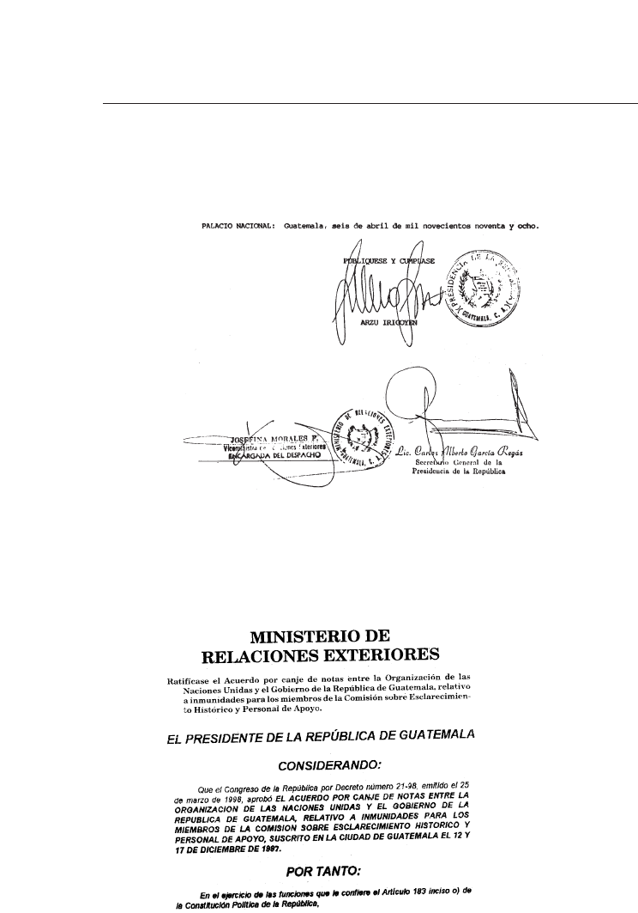
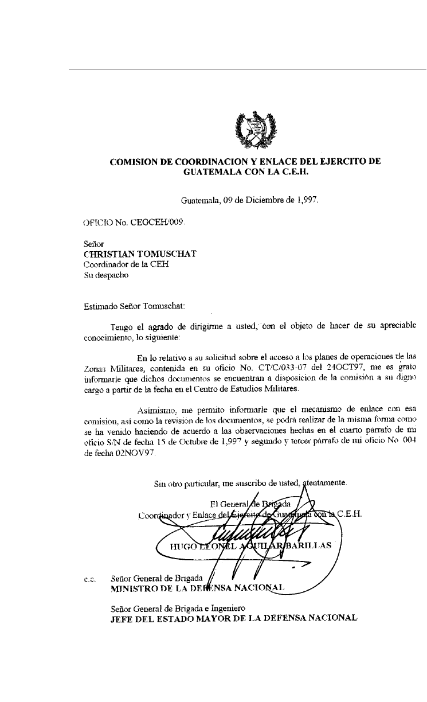
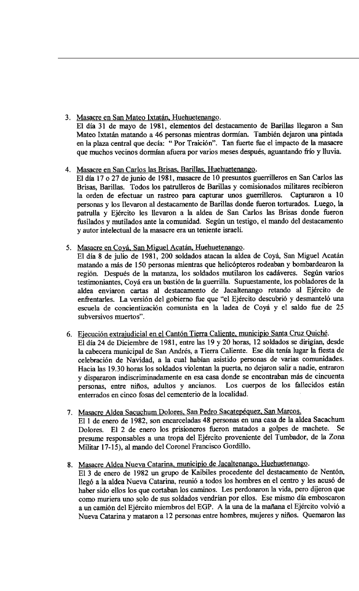
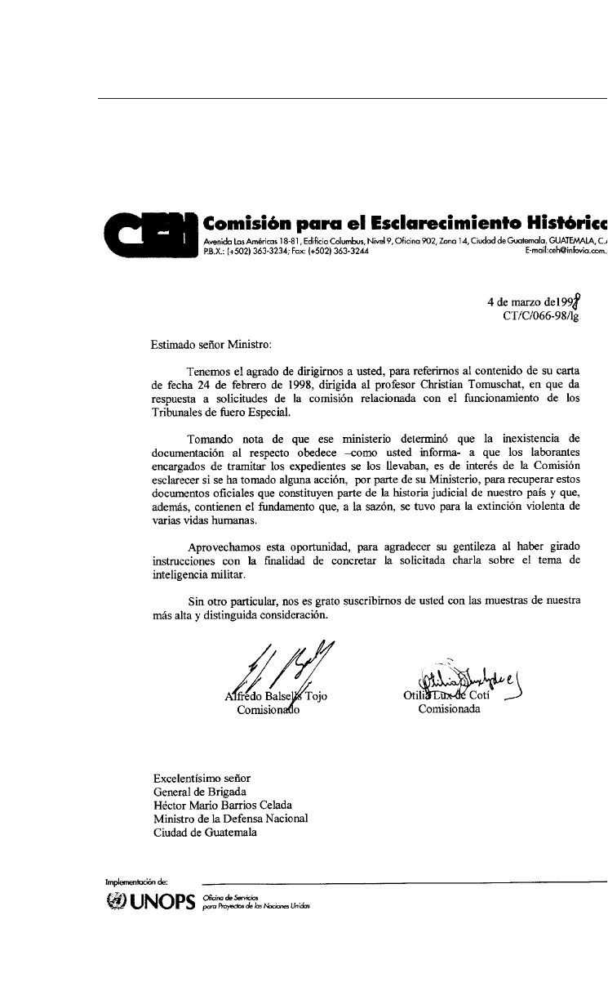
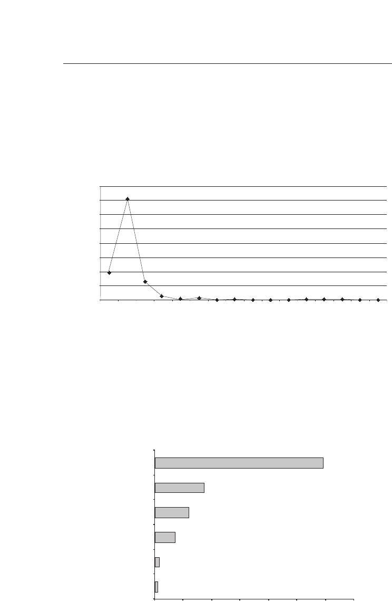
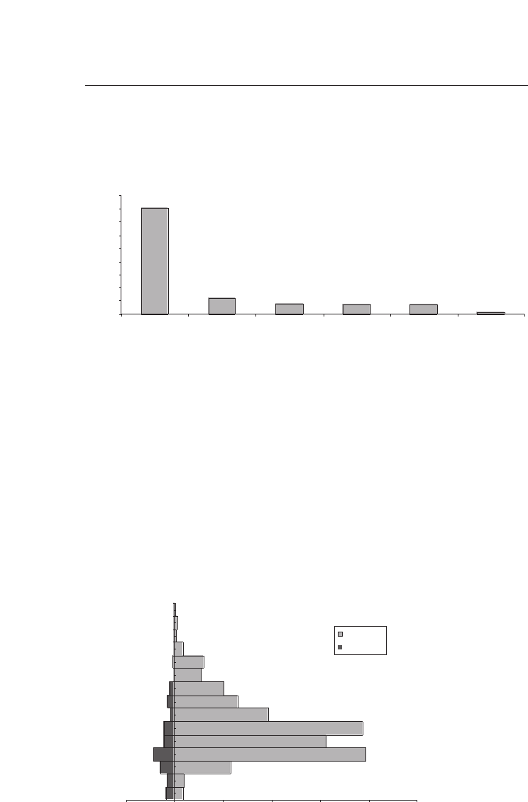
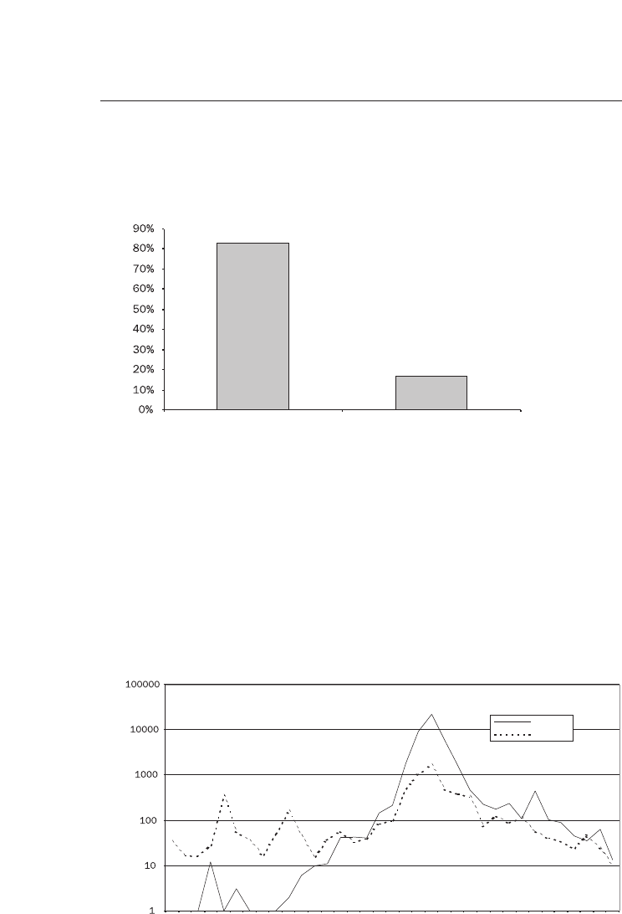
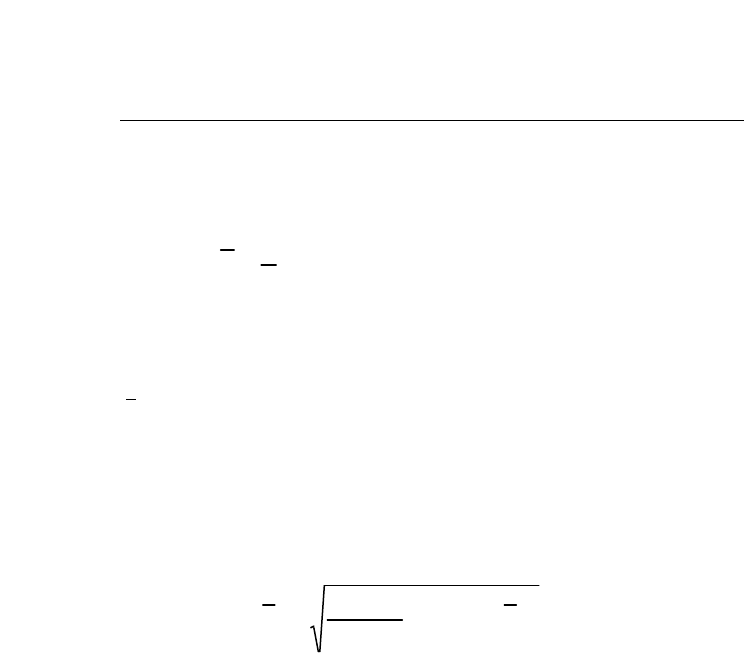
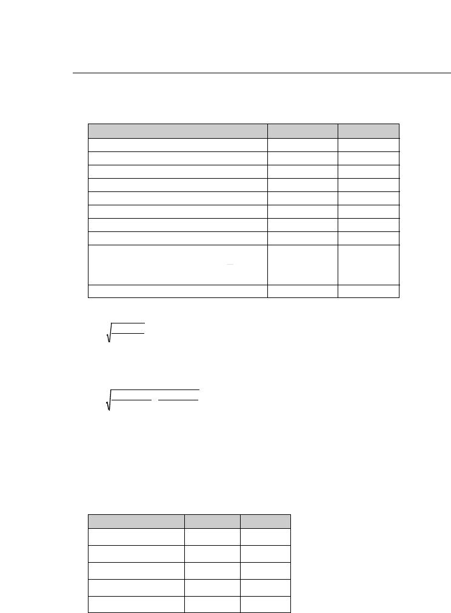

GUATEMALA
MEMORIA
DEL SILENCIO
Anexo III
GUATEMALA
MEMORIA
DEL SILENCIO
Informe de la Comisión
para el Esclarecimiento Histórico
TOMO XII

Primera edición, junio de 1999
El contenido del Informe
Guatemala, memoria del silencio
es responsabilidad únicamente de la
Comisión para el Esclarecimiento Histórico (CEH).
Esta publicación fue realizada
por la Oficina de Servicios para Proyectos
de las Naciones Unidas (UNOPS).
ISBN: 99922-54-00-9 (Obra completa)
ISBN: 99922-54-12-2 (Tomo XII)
PORTADA: CEH
DISEÑO: Servigráficos S.A.
Impreso en Guatemala
La presente obra puede ser reproducida total o parcialmente, por cualquier forma o
medio, sin consentimiento previo de UNOPS, siempre que se cite el crédito corres-
pondiente.
ANEXO III
1. Instrumentos legales y operativos
para el funcionamiento de la CEH 9
• Acuerdo sobre el establecimiento de la
Comisión para el Esclarecimiento Histórico
de las violaciones a los derechos humanos
y los hechos de violencia que han causado
sufrimientos a la población guatemalteca 9
• Estatuto jurídico de la CEH 14
• Ley de Reconciliación Nacional.
Decreto número 145-96 del Congreso
de la República 22
• Decreto número 21-98
del Congreso de la República 24
• Ratificación del Acuerdo por canje
de notas entre la Organización de las
Naciones Unidas y el Gobierno
de la República 25
• Punto resolutivo número 6-98 28
2. Selección de correspondencia entre
la CEH y las instituciones
de la República de Guatemala 31
3. Colaboración de organizaciones
e instituciones nacionales
e internacionales 197
Índice
4. Instrumentos estadísticos 203
5. Metodología intermuestra.
Documento elaborado por
la Asociación Americana para
el Avance de la Ciencia (AAAS) 237

“ACUERDO SOBRE EL ESTABLECIMIENTO DE LA COMISIÓN
PARA EL ESCLARECIMIENTO HISTÓRICO DE LAS
VIOLACIONES A LOS DERECHOS HUMANOS Y LOS HECHOS
DE VIOLENCIA QUE HAN CAUSADO SUFRIMIENTOS A LA
POBLACIÓN GUATEMALTECA
Considerando que la historia contemporánea de nuestra patria regis-
tra graves hechos de violencia, de irrespeto de los derechos fundamentales
de la persona y sufrimientos de la población vinculados con el enfrenta-
miento armado;
Considerando el derecho del pueblo de Guatemala a conocer plena-
mente la verdad sobre estos acontecimientos cuyo esclarecimiento contri-
buirá a que no se repitan estas páginas tristes y dolorosas y que se fortalez-
ca el proceso de democratización en el país;
Reiterando su voluntad de cumplir cabalmente con el Acuerdo Global
sobre Derechos Humanos del 29 de marzo de 1994;
Reiterando su voluntad de iniciar a la brevedad un nuevo capítulo en
la historia nacional que como culminación de un amplio proceso de nego-
ciación ponga fin al enfrentamiento armado, contribuyendo a sentar las
bases para una convivencia pacífica y respetuosa de los derechos humanos
entre los guatemaltecos;
Considerando, en este contexto, la necesidad de promover una cultu-
ra de concordia y respeto mutuo que elimine toda forma de revancha o
venganza, una condición indispensable para una paz firme y duradera;
El Gobierno de Guatemala y la Unidad Revolucionaria Nacional Gua-
temalteca (en adelante “las Partes”) acuerdan lo siguiente:
El establecimiento de una Comisión con las siguientes caracterís-
ticas:
FINALIDADES:
I. Esclarecer con toda objetividad, equidad e imparcialidad las violaciones a
los derechos humanos y los hechos de violencia que han causado sufrimien-
Instrumentos legales y operativos
para el funcionamiento de la CEH

tos a la población guatemalteca, vinculados con el enfrentamiento armado.
II. Elaborar un informe que contenga los resultados de las investigaciones
realizadas y ofrezca elementos objetivos de juicio sobre lo acontecido du-
rante este período abarcando a todos los factores, internos y externos.
III. Formular recomendaciones específicas encaminadas a favorecer la paz
y la concordia nacional en Guatemala. La Comisión recomendará, en par-
ticular, medidas para preservar la memoria de las víctimas, para fomentar
una cultura de respeto mutuo y observancia de los derechos humanos y pa-
ra fortalecer el proceso democrático.
PERÍODO:
El período que investigará la Comisión será a partir del inicio del en-
frentamiento armado hasta que se suscriba el Acuerdo de Paz Firme y Du-
radera.
FUNCIONAMIENTO:
I. La Comisión recibirá antecedentes e información que proporcionen las
personas o instituciones que se consideren afectadas así, como las Partes.
II. Corresponde a la Comisión aclarar plenamente y en detalle estas situa-
ciones. En particular, analizará con toda imparcialidad los factores y cir-
cunstancias que incidieron en dichos casos. La Comisión invitará a todos
los que puedan estar en posesión de información pertinente a que presen-
ten su versión de los hechos. La no comparecencia de los interesados no
impedirá que la Comisión se pronuncie sobre los casos.
III. Los trabajos, recomendaciones e informe de la Comisión no individua-
lizarán responsabilidades, ni tendrán propósitos o efectos judiciales.
IV. Las actuaciones de la Comisión serán reservadas para garantizar la secre-
tividad de las fuentes, así como la seguridad de los testigos e informantes.
V. Al estar constituida, la Comisión hará pública su constitución y sede,
por todos los medios posibles, e invitará a los interesados a que depositen
su información y testimonios.
INTEGRACIÓN:
La Comisión contará con tres miembros, estos serán:
I. El actual moderador de las negociaciones de paz, cuya designación se so-
licitará al Secretario General de las Naciones Unidas;
II. Un miembro, ciudadano de conducta irreprochable, designado por el
moderador, de común acuerdo con las Partes;
III. Un académico elegido por el moderador, de común acuerdo con las
Partes, de una terna propuesta por los rectores universitarios.
La Comisión contará con el personal de apoyo que considere necesa-
rio, con las cualidades requeridas, para el cumplimiento de sus funciones.
10

INSTALACIÓN Y DURACIÓN:
La Comisión se integrará, instalará y empezará a funcionar a partir del
día de la firma del Acuerdo de Paz Firme y Duradera. Los trabajos de la
Comisión durarán un período de seis meses contados a partir de su insta-
lación, prorrogables por seis meses más, si así lo decide la Comisión.
INFORME:
La Comisión redactará un informe que será entregado a las Partes y al
Secretario General de las Naciones Unidas, que lo hará público. El hecho
que no se haya podido investigar todos los casos o situaciones presentados
a la Comisión no restará validez al informe.
COMPROMISO DE LAS PARTES:
Las Partes se comprometen a colaborar con la Comisión en todo lo
que fuera necesario para el cumplimiento de su mandato. Se comprome-
ten, en particular, a crear previa la integración de la Comisión y durante
su funcionamiento las condiciones indispensables para que la misma pue-
da llenar las características establecidas en el presente Acuerdo.
VERIFICACIÓN INTERNACIONAL:
De conformidad con el Acuerdo Marco del 10 de enero de 1994, el
cumplimiento del presente Acuerdo está sujeto a verificación internacional
por las Naciones Unidas.
MEDIDAS DE EJECUCIÓN INMEDIATA DESPUÉS DE
LA FIRMA DEL PRESENTE ACUERDO:
Las Partes acuerdan solicitar al Secretario General el nombramiento a
la brevedad del moderador de las negociaciones para ser miembro de la
Comisión. Después de su nombramiento, este último será facultado para
hacer desde ya todas las gestiones necesarias para preparar el buen funcio-
namiento de la Comisión una vez integrada e instalada de conformidad
con las disposiciones de este Acuerdo.
Oslo, 23 de junio de 1994
Por el Gobierno de la República de Guatemala
Héctor Rosada Granados
Antonio Arenales Forno
Mario Permuth
Amílcar Burgos Solís
11

General Carlos Enrique Pineda Carranza
General Julio Arnoldo Balconi Turcios
General José Horacio Soto Salán
Por la Unidad Revolucionaria Nacional Guatemalteca
Comandancia General
Carlos González
Comandante Rolando Morán
Comandante Gaspar Ilom
Comandante Pablo Monsanto
Comisión Político-Diplomática
Luis Felipe Becker Guzmán
Francisco Villagrán Muñoz
Miguel Ángel Sandoval
Luz Méndez Gutiérrez
Asesores
Mario Vinicio Castañeda
Miguel Ángel Reyes
Jorge Rosal
Por las Naciones Unidas
Jean Arnault
Moderador”.
12
14

15
NACIONES UNIDAS UNITED NATIONS
MINUGUA
Guatemala, 12 de diciembre de 1997
Excelentísimo señor:
Tengo el honor de dirigirme a Vuestra Excelencia en relación con el Acuerdo conclui-
do en Oslo (Noruega) el 23 de junio de 1994 entre el Gobierno de la República de Gua-
temala y la Unidad Revolucionaria NacionaI Guatemalteca, en virtud del cual se estable-
ció la Comisión para el esclarecimiento histórico de las violaciones de los derechos hu-
manos y los hechos de violencia que han causado sufrimientos a la población guatemal-
teca. Particularmente, quisiera referirme en dicho marco al estatuto jurídico de los tres
miembros de la Comisión, el Sr. Christian Tomuschat, la Sra. Otilia Lux de Cotí y el Sr. Ed-
gar Alfredo Balsells Tojo.
Como sabe, de conformidad con las disposiciones del Acuerdo de Oslo, el día 7 de
febrero de 1997 el Secretario General designó al Sr. Christian Tomuschat como miembro
de la Comisión y éste, siguiendo el Acuerdo, designó a los otros dos miembros de la Co-
misión el día 22 de febrero de 1997.
Según establece el Acuerdo, en el cumplimiento de su mandato los Comisionados
han de proceder con toda objetividad, equidad e imparcialidad. Tales condiciones deben
ser imperativamente aseguradas, razón por la cual quisiera proponer a Vuestra Excelen-
cia que las inmunidades establecidas en la Sección 22 (a), (b) y (c) de la Convención so-
bre las Prerrogativas e Inmunidades de las Naciones Unidas, a la que su Gobierno se ad-
hirió el 7 de julio de 1947, sean aplicables en su calidad de peritos a efectos de la Con-
vención, a los tres miembros de Ia Comisión y a su personal de apoyo, cuyos nombres y
cargos se comunicarán al Gobierno de Guatemala, independientemente de su nacionali-
dad y condiciones de residencia, sin perjuicio de aquellas otras prerrogativas e inmunida-
des que según sus categorías y tipo de designación les puedan corresponder bajo la ci-
tada Convención.
Excelentísimo Señor
Eduardo Stein Barillas
Ministro de Relaciones Exteriores
Ciudad de Guatemala
16

En todo caso la aplicación de la Convención sobre Prerrogativas e lnmunidades de
las Naciones Unidas al personal guatemalteco, estará limitada a lo dispuesto en los lite-
rales (a), (b) y (c) de la Sección 22 de la misma.
Por último le propondría que si usted aprueba las disposiciones de esta nota, dicha
nota y su respuesta constituyeran un Acuerdo entre las Naciones Unidas y el Gobierno
de Guatemala.
Aprovecho la oportunidad para reiterar a usted las muestras de mi más alta estima
y consideración.
Jean Arnault
Representante Especial del Secretario General
y Jefe de Misión
17
18

19
MINISTERIO DE RELACIONES EXTERIORES
REPUBLICA DE GUATEMALA, C. A.
Guatemala, 17 de diciembre de 1997.
Señor
Jean Arnault
Representante Especial del
Secretario General
de la Organizacion de las Naciones Unidas
ciudad.
Estimado Señor Arnault:
Tengo a honra referirme a su atenta nota de fecha 12 de diciembre del presente
año, que dice Io siguiente:
"Tengo el honor de dirigirme a Vuestra Excelencia en relación con el Acuerdo con-
cluido en Oslo (Noruega) el 23 de junio de I994 entre el Gobierno de la República de
Guatemala y la Unidad Revolucionaria Nacional Guatemalteca, en virtud del cual se es-
tableció la Comisión para el esclarecimiento histórico de las violaciones de los derechos
humanos y los hechos de violencia que han causado sufrimientos a la población gua-
temalteca. Particularmente, quisiera referirme en dicho marco al estatuto jurídico de Ios
tres miembros de la Comisión, el Sr. Christian Tomuschat. La Sra. Otilia Lux de Cotí y
el Sr. Edgar Alfredo Balsells Tojo.
Como sabe, de conformidad con las disposiciones del Acuerdo de Oslo, el día 7
de febrero de 1997 el Secretario General designó al Sr. Christian Tomuschat como
miembro de la Comisión y éste siguiendo el Acuerdo, designó a los otros dos miembros
de la Comisión el día 22 de febrero de 1997.
Según establece el Acuerdo, en el cumplimiento de su mandato los Comisionados
han de proceder con toda objetividad, equidad e imparcialidad. Tales condiciones de-
ben ser imperativamente aseguradas, razón por la cual quisiera proponer a Vuestra Ex-
celencia que las inmunidades establecidas en la Sección 22 (a), (b) y (c) de la Conven-
ción sobre las Prerrogativas e Inmunidades de las Naciones Unidas, a la que su Go-
bierno se adhirió el 7 de julio de 1947, sean aplicables en su calidad de peritos a efec-
to de la Convención, a los tres miembros de Comisión y a su personal de apoyo, cuyos
nombres y cargos se comunicarán al Gobierno de Guatemala, independientemente de
su nacionalidad y condiciones de resicencia, sin perjuicio de aquellas otras prerrogati-
vas e inmunidades que según sus categorías y tipo de designación les puedan corres-
ponder bajo la citada Convención.

20

MINISTERIO DE RELACIONES EXTERIORES
REPUBLICA DE GUATEMALA, C. A.
En todo caso la aplicación de la Convención sobre Prerrogativas e Inmunidades
de Ias Naciones Unidas al personal guatemalteco, estará limitada a lo dispuesto en los
literales (a), (b) y (c) de la Sección 22 de la misma.
Por último le propondría que si usted aprueba las disposiciones de esta nota, di-
cha nota y su respuesta constituyeran un acuerdo entre las Naciones Unidas y el Go-
bierno de Guatemala.
Aprovecho la oportunidad para reiterar a usted las muestras de mi más alta esti-
ma y consideración".
En respuesta me complace comunicar a usted que mi Gobierno acepta los térmi-
nos de la propuesta contenida en la nota antes transcrita, de manera que dicha nota y
la presente constituyan un Acuerdo entre el Gobierno de Guatemala y la Organización
de las Naciones Unidas. Según Io convenido al negociar el texto, el presente Acuerdo
se remitirá de inmediato al Congreso de la República con el propósito de que ese Or-
ganismo considere su aprobación, a efecto de que las disposiciones en él contenidas
que constitucionalmente Io requieran, adquieran carácter vinculante para Guatemala.
Le ruego acepte las seguridades de mi consideración más distinguida.
Eduardo Stein
Ministro de Relaciones Exteriores
21
22
23
24

25
26
27
28
29

Selección de correspondencia
entre la CEH y las instituciones
de la República de Guatemala
32

COMISION PARA EL
ESCLARECIMIENTO HISTORICO
9 de septiembre 1997
FC/CT/187-97/gm
Excelentísimo señor:
Tengo el agrado de dirigirme a usted como continuación de la reunión que los
miembros de la Comisión hemos mantenido con usted en su despacho el pasado 8 de
agosto y en la que, como recordará, en cumplimiento del Acuerdo conferido a la Comi-
sión, le solicitamos, entre otras cosas:
1. establecer un mecanismo fluido para la comunicación entre la Comisión y el
Ejército;
2. la versión del Ejército del enfrentamiento armado interno;
3. acceso a los manuales para oficiales y soldados vigentes en la época del en-
frentamiento armado y examinar el reglamento aplicable en el tratamien-to a
la población civil;
4. las bajas del Ejército durante el enfrentamiento, lo que podría incluir, como
usted sugirió, una referencia a los discapacitados y desaparecidos;
5. reglamentación e información sobre Justicia Militar;
6. organigrama del Ejército;
7. prisioneros de guerra de la Unidad Revolucionaria Nacional Guatemalteca
(URNG), con información sobre el régimen de tratamiento y reglas aplicables;
8. planes de campaña, particularmente si lo hubiere en relación con la llamada
estrategia de "tierra arrasada".
/…
Excelentísimo señor
Gral. Héctor Mario Barrios Celada
Ministro de Defensa
Su Despacho
Ciudad de Guatemala
33
34

Al respecto, quisiera hacerle llegar nuestra preocupación ante la noticia aparecida
en el día de hoy en un medio de comunicación nacional, según la cual el jefe del Esta-
do Mayor de la Defensa, Gral. Marco Tulio Espinosa, habría manifestado que el Ejérci-
to proporcionará sus planes de campaña una vez depurados por motivos de seguridad
nacional.
En este sentido, el Acuerdo de Oslo, concluido el 23 de junio de 1994 entre el Go-
bierno de Guatemala y la URNG, establece, según le consta, en su segundo conside-
rando el derecho del pueblo de Guatemala a conocer plenamente la verdad sobre las
violaciones a los derechos humanos y los hechos de violencia que han causado sufri-
mientos a la población guatemalteca, vinculados con el enfrentamiento armado. No es-
tablece ninguna restricción el Acuerdo a tal derecho.
Por otro lado, al hablar del funcionamiento de la Comisión, se dice que correspon-
de a la Comisión aclarar plenamente y en detalle estas situaciones. Tampoco admite
limitación alguna, salvo las que se derivan del carácter reservado de las actuaciones de
la Comisión para garantizar las secretividad de las fuentes.
Por último, conviene resaltar que las Partes se han comprometido en el Acuerdo
a colaborar con la Comisión en todo lo que sea necesario para el cumplimiento de su
mandato.
Mientras quedo a la espera de sus atentas noticias, en particular si considera opor-
tuno que podamos conservar personalmente al respecto, me valgo de la oportunidad
para reiterarle el testimonio de mi más alta y distinguida consideración.
Christian Tomuschat
Coordinador
35
36

COMISION PARA EL
ESCLARECIMIENTO HISTORICO
9 de septiembre de 1997
CT008-97/sp
Excelentísimo Señor Presidente:
Tengo el honor de dirigirme a Vuestra Excelencia en relación con el mandato con-
ferido a la Comisión para el Esclarecimiento Histórico, que, según le consta, debe escla-
recer las violaciones a los derechos humanos y los hechos de violencia que han causa-
do sufrimientos a la población guatemalteca, vinculados con el enfrentamiento armado.
Quisiera, en este momento, referirme en particular a los casos de desapariciones
forzadas colectivas, cuya relación aparece en anexo a esta carta, de los cuales esta Co-
misión ha tenido conocimiento y necesitaría de su Gobierno todos los elementos de in-
formación complementaria de que disponga.
Durante muchos años a lo largo del conflicto armado, Guatemala fue golpeada por
una práctica criminal de desapariciones forzadas. En la mayoría de los casos, las víctimas
nunca regresaron a sus familias. Muchos fueron asesinados poco tiempo despues de su
secuestro, y, frecuentemente, sus cadáveres fueron encontrados con huellas de tortura.
En otros casos, nunca más se ha sabido sobre la suerte de las personas afectadas.
El pueblo guatemalteco siempre ha sospechado que fuerzas del Estado estaban
involucradas en esos secuestros de personas calificadas como "subversivas" o perte-
necientes a tendencias políticas opuestas a las corrientes en el poder. En aquellos años
del conflicto, los sucesivos Gobiernos de Guatemala negaron con firmeza que perso-
nas o autoridades bajo su control tuvieran algo que ver con las desapariciones. Tales
declaraciones nunca tuvieron credibilidad.
Excelentísimo Señor
Alvaro Arzú Irigoyen
Presidente de la República
Su Despacho
Ciudad de Guatemala
37
38

Hoy en día, después de la firma del Acuerdo de Paz Firme y Duradera, se da
la oportunidad para aclarar objetivamente lo ocurrido. En este sentido, la Comisión pa-
ra el Esclarecimiento Histórico, en cumplimiento del mandato que le fue encomendado
por el Acuerdo de Oslo, tiene el deber de investigar la práctica de las desapariciones,
que fue uno de los flagelos más contundentes de la Guatemala del enfrentamiento in-
terno, con toda la atención que merece esa grave violación de los derechos humanos.
Los casos mencionados en el listado adjunto a esta carta afectaron profundamen-
te la vida pública de Guatemala. La Comisión, por consiguiente, ha decidido aclararlos
en todo su detalle, ya que pueden ilustrar los métodos criminales del terrorismo a los
cuales se recurrió en esos años para silenciar a personas sospechosas, a ojos de al-
gunos, de constituir un peligro para la seguridad del Estado.
A nuestro modo de ver, señor Presidente, la Comisión debe tener acceso a todo el
material disponible al efecto, inclusive los expedientes que se encuentren en el Archivo
del Estado Mayor Presidencial. Le estamos reconocidos de antemano por la atención
que tenga a bien dispensar a nuestra petición, facilitando a la Comisión dicho acceso.
Le estaríamos muy agradecidos si su respuesta pudiera llegarnos no más tarde de
finales del mes de septiembre, dado lo limitado del periodo de trabajo de la Comisión.
Me valgo de la oportunidad para hacer llegar a Vuestra Excelencia el testimonio de
nuestra más alta y distinguida consideración.
Christian Tomuschat
Coordinador
39
40

DESAPARICIONES COLECTIVAS
1) 3 Y 5 de marzo de 1966
En la víspera de las elecciones que llevaron a Julio César Mendez Montenegro a
la Presidencia en 1966, fueron desaparecidos alrededor de 30 personas entre
ellos reconocidos líderes políticos, estudiantiles y sindicales. El denominado "Ca-
so de los 28 desaparecidos" incluye entre sus víctimas a Victor Manuel Gutierrez,
el entonces Secretario General del PGT, Leonardo Castillo Flores, el entonces Se-
cretario General de la Confederación Nacional de Campesinos (CNC), David Agui-
lar Mora, Francisco Amado Granados, Emma Judith Amézquita, Fernando Arce
Behrens, Carlos Barillas Sosa, Ricardo Berganza Bocaletti, Eunice Campiran de
Aguilar Mora, Efraín Cansinos, Juan de Dios Castillo, Carlos Enrique Galindo, Jo-
sé Vicente Guzmán Franco, Rosa Margarita López González, Juan López Gonzá-
lez, Leticia López González, José Luis Meda, Mario Augusto Méndez Aguilar, Mar-
co Tulio Molina Licona, Tránsito Monerroso Pérez, Marta Palacios, Candida Pala-
cios, Humberto Pineda, Matilde Reyna Herrera, José Romero Fuentes, Rafael Se-
sam Pereira, Emilio Vásquez, Iris Yon Cerna y posiblemente otros.
En el caso de Victor Manuel Gutierrez los periódicos de la época señalaron que el
hecho ocurrió en la Zona 11, Colonia Mariscal de la Ciudad de Guatemala. Una
versión alega que hubo intercambio de disparos con la Policía Judicial y que tres
de ellos resultaron heridos. Otra versión descarta el intercambio de fuego y repor-
ta que las personas fueron sacadas de la casa en donde se encontraban. Las ver-
siones recabadas de distintas fuentes tampoco precisan los lugares y momentos
de la desaparición de estas personas. No se ha sabido hasta la fecha de la suer-
te de la mayoría de las víctimas, habiéndose, posteriormente, aparecido y identifi-
cado sólo los cadáveres de Leonardo Castillo Flores, Victor Manuel Gutierrez,
Francisco Amado Granados y Humberto Pineda.
La denuncia de estos hechos fue registrada con la Comisión Interamericana de
Derechos Humanos en abril del mismo año.
2. 26 de septiembre de 1972
El 26 de septiembre de 1972 fueron desaparecidos seis miembros de la Comisión
Política del Partido Guatemalteco del Trabajo (PGT) en la Ciudad de Guatemala
en una casa de la Colonia Tikal 1 de la Zona 7 de la Ciudad de Guatemala. Se tra-
taba del Secretario General del PGT, Bernardo Alvarado Monzón junto con Carlos
Alvarado Jerez, Hugo Barrios Kleé, Mario Silva Jonama, Carlos René Valle y Mi-
guel Angel Hernández. También fueron desaparecidos la dueña de la mencionada
casa, Fantina Rodriguez, la empleada de la casa, Natividad Santos y el hijo de es-
ta última.
41
42

Según el testimonio de Abel Juárez Villatoro, detective de la Policía Nacional, pu-
blicado por la prensa guatemalteca el 29 de noviembre de 1972, las desaparicio-
nes fueron el fruto de un operativo policial en que éste participó el día 26 de sep-
tiembre a las 10:00 de la mañana. Según este testimonio, después de unas 12 ho-
ras las víctimas fueron entregadas a un jefe de pelotón del 4to. Cuerpo de la PN,
conocido cono el "Chino Lima".
Este incidente fue denunciado a la Comisión Interamericana de Derechos Huma-
nos el 30 de septiembre del mismo año.
3. 21 de junio de 1980
25 personas fueron detenidas por hombres no uniformados después de un ataque
contra las oficinas de la Central Nacional de Trabajadores (CNT) en la Ciudad de
Guatemala. Las calles alrededor de estas oficinas fueron cerradas por las autori-
dades policiales durante el operativo.
Entre las personas denunciadas como desaparecidas de la sede de la CNT en es-
ta fecha se incluyen: Rafael Antonio Aguilar Pérez, Sonia Alesio, Sara Cabrera Flo-
res, Mario Campos Valladares, Christina Yolanda Carrera, Augustín Chitay Chape-
ton, Crescencio Coronel Ordoñez, Selvín Arnulfo García López, Orlando Antonio
García Rodriguez, Florentino Gómez López, Ervin René Hernández Paiz, Bernar-
do Marroquín Salazar, Mario Martínez, Alvaro Oswaldon Estrada, Hilda CarIota
Peréz Méndez, Irma Candelaria Pérez Osorio, Manuel René Polanco Salguero, To-
más Roberto Poll, Pedro Ramos Micatu, Manuel Antonio Rodriguez Ramos, Oscar
Armando Salazar, Hector Manuel Sanchez González, Jorge Luis Serrano, Ismael
Vásquez Ortíz y Florencia Xocop Chavez.
Estos hechos fueron denunciados a la Comisión Interamericana de Derechos Hu-
manos y aparecen bajo el caso nro. 7403.
4. 24 de agosto de 1980
En esta fecha fueron detenidos, según denuncias documentadas por las fuerzas
de seguridad de la Policía Nacional, 17 líderes sindicales que estaban reunidos en
una propiedad de la finca "Emaús Medio Monte", de Palín, Escuintla. Posterior-
mente, siempre de acuerdo con estas denuncias, fueron torturados en las instala-
ciones de la División de Investigaciones de la Policía Nacional en la Zona 6 de la
capital. Entre las personas detenidas y torturadas estaban a José Luis Peña, Gus-
tavo AdoIfo Bejerano, Rafael Enrique Girón Mérida, Jordan Gilberto Salazar Uriza,
Augusto Yach Ciriaco, Gerónimo Alberto Moreno Palencia, Alfonso Obdulio Molina
Mérida, Iliana de la Cruz, Edgar de la Cruz, Julio César Pérez Gálvez, Víctor He-
rrera, Rosario Leal, Nery Robledo Espinoza, Adalberto Juárez, José Ruíz, Juan
Guerra Castro y Guillermo Turcios García.
43
44

Esta denuncia fue retomada en el caso nro. 7490 de la Comisión Interamericana
de Derechos Humanos.
5. Del 21 de agosto al 10 de septiembre de 1989
Entre estas fechas fueron desaparecidos 10 estudiantes de Ia Universidad de San
Carlos. Ocho son mencionados como miembros activos de la Asociación de Estu-
diantes Universitarios, habiendo ocupado, seis de ellos, cargos de dirección o lide-
razgo dentro de esa organización. Cinco aparecieron muertos y los demás nunca
fueron encontrados.
Los cadáveres de cuatro de los desaparecidos aparecieron juntos el 10 de sep-
tiembre en un barranco cerca de Ia USAC en la Ciudad de Guatemala. Ellos eran
Silvia María Azurdia Utrera y su esposo, Victor Hugo Rodriguez Jaramillo, llevados
de su domicilio en la Zona 11 en la mañana del 21 de agosto, Carlos Leonel Chu-
tá Camey, desaparecido mientras caminaba por la Zona 17 junto su esposa e hija
en la mañana del 8 de septiembre y Carlos Humberto Cabrera, desaparecido fren-
ta su casa en la mañana del 9 de septiembre. Junto a los cuerpos, que llevaban
señales de tortura, se encontraron notas no firmadas que pretendían atribuir las
muertes a peleas internas del cuerpo estudiantil.
Eduardo Antonio López Valencia apareció muerto el 15 de septiembre en un ba-
rranco en el departamento del Progreso. Había desaparecido el 10 de septiembre
en la Zona 1 de la Ciudad de Guatemala.
Entre los desaparecidos no confirmados como muertos están, Iván Ernesto Gon-
zalez Fuentes, desaparecido el 21 de agosto, Carlos Ernesto Contreras Conde,
Hugo Leonel Gramajo, el día 22 de agosto y Mario Arturo de León y Aaron Ochoa,
el 23 de agosto.
Estos hechos fueron denunciados a la Comisión Interamericana de Derechos Hu-
manos. caso nro. 10,441.
45
46

47
PRESIDENCIA DE LA REPUBLICA DE GUATEMALA
P-09-97-09
18 de septiembre de 1997
Señor
Christian Tomuschat
Coordinador de la Comisión de
Esclarecimiento Histórico
Su despacho
Estimado señor Tomuschat:
En respuesta a su atenta nota del 9 de septiembre de los corrientes, tengo a bien co-
municarle que he dado las instrucciones correspondientes al Ministerio de la Defensa
Nacional, para que le proporcionen a la Comisión de Esclarecimiento Histórico, toda la
información y los expedientes disponibles con relación a los casos consignados en el
anexo de su carta.
El mismo procedimiento se empleará ante otras demandas de información que pueda
hacer la Comisión a su digno cargo.
Deseándole el mayor de los éxitos en el desempeño de su valiosa labor, reciba las
muestras de mi consideración y estima.
Alvaro Arzú
Presidente de Guatemala
/lrsdm
cc: Ministro de la Defensa
Jefe Estado Mayor Defensa Nacional
48

Comisión para el Esclarecimiento Histórico
Guatemala, 9 de octubre de 1997
Señor General:
En vista que Usted ha sido designado por el Señor Ministro de la Defensa Nacio-
nal, como el responsable del escalón intermedio de enlace y coordinación con la Comi-
sión de Esclarecimiento Histórico, me dirijo a Usted con el objeto de solicitarle que se
nos entregue la siguiente información o se nos facilite el acceso a la misma junto con
todos sus anexos de:
1. Las ordenes generales y los planes de campaña correspondientes a los
años 1978, 1981, 1982 y 1983.
2. Las ordenes de operaciones, los partes de operaciones o partes de guerra,
los diarios de operaciones y los negociados de inteligencia de mayo y junio
de 1978 de la Zona militar que tenía jurisdicción sobre el municipio de Pan-
zós.
3. Las ordenes de operaciones, los partes de operaciones o partes de guerra, los
diarios de operaciones y los negociados de inteligencia entre diciembre de
1981 y marzo de 1983 correspondientes a la Zona militar que tenía jurisdic-
ción en el área del Ixcán.
4. Las ordenes de operaciones, los partes de operaciones o partes de guerra,
los diarios de operaciones y los negociados de inteligencia de marzo y junio
de 1982 de la Zona militar que tenía jurisdicción sobre el municipio de Chi-
maltenango.
Le recuerdo que el Acuerdo de Oslo del 20 de junio de 1994 que establece la Co-
misión de Esclarecimiento Histórico, es muy clara en señalar el compromiso de colabo-
ración de las Partes en Conflicto con los objetivos de la misma.Igualmente, en vista que
el tiempo de nuestro mandato es bastante breve, le solicitaría que la información nos
sea entregada o se nos permita su acceso a la mayor brevedad posible.
Señor
General de Brigada
Hugo Leonel Aguilar Barillas
Director del Centro de Estudios Militares
Ciudad de Guatemala
Implementación de:
UNOPS Oficina de Servicios para Proyectos de las Naciones Unidas
49
50

Agradeciendo la atención que le merezca la presente y con mis muestras de conside-
ración y aprecio,
Christian Tomuschat
Coordinador
c.c. General de Brigada
Héctor Mario Barrios Celada,
Ministro de la Defensa Nacional
51
52

53
MINISTERIO DE LA DEFENSA NACIONAL
República de Guatemala, C. A.
No. MDN/051-CG-97
Guatemala, 13 de octubre de 1997
Doctor
Christian Tomuschat
Coordinador de la Comisión para
el Esclarecimiento Histórico
Su despacho
Estimado Doctor Tomuschat:
Tengo especial agrado en dirigirme a usted, para acusar recibo a su oficio No.
FC/CT/187-97/GM, de fecha 9 de septiembre de 1997. Al respecto me permito hacer de
su conocimiento, que este despacho tomó nota de su contenido y giró las instrucciones
pertinentes.
Asimismo, hago de su conocimiento que para facilitar un mecanismo fluido de comuni-
cación entre la Comisión que usted coordina y la Institución Armada, se ha nombrado
al señor General de Brigada Hugo Leonel Aguilar Barillas, Director del Centro de Estu-
dios Militares, como oficial de enlace y coordinador, quien en su oportunidad recibirá y
remitirá los requerimientos de la Comisión para el Esclarecimiento Histórico, por lo que
agradeceré, que toda correspondencia, consulta o requerimiento, sea dirigido al Oficial
General en mención, para su respectivo trámite.
Reitero al Doctor Tomuschat, las muestras de mi consideración y estima.
Atentamente
El General de Brigada
Héctor Mario Barrios Celada
Ministro de la Defensa Nacional
54

COMISION DE COORDINACION Y ENLACE DEL EJERCITO DE
GUATEMALA CON LA CEH
Guatemala, 15 de octubre de 1,997.
Señor Doctor
Christian Tomuschat
Coordinador de la CEH
Su despacho
Señor Coordinador:
Tengo el agrado de dirigirme a usted, para dar respuesta a su Oficio Número
FC/CT/187-97/GM de fecha 09 de septiembre y Oficio sin número de fecha 09 de octubre
del año en curso; al respecto me permito hacer de su apreciable conocimiento lo siguiente:
En Io relativo a la versión del Ejército, sobre el enfrentamiento armado interno, el
documento respectivo será entregado el 31 de diciembre del año en curso, de
conformidad con las coordinaciones realizadas al respecto.
En cuanto a las órdenes generales y planes de campaña, deseo manifestarle que
se encuentran a su disposición en el Centro de Estudios Militares a partir del día de
mañana, en el horario que más le convenga.
Para facilitarles el trabajo a realizar, he nombrado a un Oficial para que les atienda
por lo que le ruego designar a las DOS (2) personas que harán la revisión, informándoles
que por tratarse de material clasificado, este no se podrá fotocopiar ni fotografiar, así
como tampoco podrá extraerse del salón donde se pondrá a su disposición. Este
mecanismo será utilizado para posteriores consultas de material clasificado.
No está demás hacer de su conocimiento que de existir otros requerimientos,
estos serán tramitados de forma oportuna, a fin de coadyuvar al buen desempeño de
la "CEH", de conformidad con lo acordado.
Sin otro particular me suscribo de usted, atentamente.
El General de Brigada
Coordinador y Enlace del Ejército de Guatemala con la CEH
Hugo Leonel Aguilar Barillas
c.c. Señor General de Brigada
Ministro de la Defensa Nacional
Señor General de Brigada e Ingeniero
Jefe del Estado Mayor de la Defensa Nacional
55
56

Comisión para el Esclarecimiento Histórico
21 de octubre 1997
CT/C/031-97/sp
Excelentísimo señor:
Me es grato dirigirme a usted en relación con la carta que con fecha 9 de septiem-
bre del presente año he dirigido al Excelentísimo señor Presidente de la República, so-
licitando información de su Gobierno sobre casos de desapariciones colectivas acaeci-
das durante el período objeto del mandato de la Comisión. A dicha carta, el señor Pre-
sidente de la República respondió con otra de fecha 18 del mismo mes, informándome
de que había dado "las instrucciones correspondientes al Ministerio de la Defensa Na-
cional, para que le proporcione a la Comisión de Esclarecimiento Histórico, toda la in-
formación y los expedientes disponibles con relación a los casos consignados" en la
carta. Le adjunto copia de ambas para una más fácil referencia.
En reunión del día de la fecha con la Comisión de Enlace y Coordinación del Ejér-
cito con la Comisión, nuestro equipo de enlace ha solicitado información sobre la res-
puesta, que continúa pendiente actualmente. No quisiera ocultarle que, a la vista de
nuestro limitado tiempo de trabajo, nos preocupa la falta de respuesta despues del tiem-
po transcurrido.
A la vista de Io anterior, quisiera solicitarle, y le agradecería, su más pronta res-
puesta a la solicitud formulada en su día al señor Presidente de la República, de ma-
nera que nuestra Comisión pueda cumplir con su tarea.
/…
Excelentísimo señor
General de Brigada
Héctor Mario Barrios Celada
Ministro de la Defensa Nacional
Ciudad de Guatemala
Implementación de:
UNOPS
Oficina de Servicios para Proyectos de las Naciones Unidas
57
58

Por otro lado, le estamos enviando una carta al General de Brigada, Hugo Leonel
Aguilar Barillas, explicándole tanto los motivos e inconvenientes de trabajar en una de-
pendencia militar como la seria inquietud ante el carácter "clasificado" de los documen-
tos militares, Io que está afectando de forma notable la agilidad y fidelidad en el mane-
jo de dicha información por parte de la Comisión. Como solución a estos obstáculos, la
Comisión le está proponiendo al General Aguilar dos elementos básicos para la conse-
cución de nuestros objetivos: uno, la entrega rápida de los originales de los documen-
tos solicitados, o en su defecto, una fotocopia del original corroborado por esta Comi-
sión; dos, que se establezca un enlace entre las Zonas Militares y las Subsedes y Ofi-
cinas de Enlace de la Comisión, donde se pueda solicitar y entregar información, peti-
ción respaldada por Usted, Señor Ministro, en las dos últimas entrevistas sostenidas
con los miembros de la Comisión en las que resaltó su interés de que las Zonas Milita-
res colaboren con el trabajo que regionalmente está adelantando la Comisión.
A la espera de una pronta y favorable respuesta, me valgo de la oportunidad para
reiterarle el testimonio de mi más alta estima y consideración.
Christian Tomuschat
Coordinador
59
60

Comisión para el Esclarecimiento Histórico
23 de octubre de 1998
FC/SE/688-98/ju
Excelentísimo señor Ministro:
Tengo el agrado de dirigirme a usted en relación con el cumplimiento del
mandato encomendado a esta Comisión y para agradecerle su respuesta a
una petición previa de esta Comisión de revisión en las instalaciones del Cen-
tro de Estudios Militares (CEM) de los planes de campaña del Ejército corres-
pondientes a los años comprendidos entre 1982 y 1986.
En reciente visita al CEM, el General Edgar Leonel Godoy Samayoa infor-
mó a funcionarios de esta Comisión que los referidos planes de campaña, que
se encontraban anteriormente en dichas instalaciones, habían sido devueltos
al estado Mayor de la Defensa Nacional.
En base a lo anterior, le estaríamos reconocidos si autoriza nuevamente
la revisión en el CEM de los mencionados documentos.
Mientras le agradecemos de antemano la atención que le merezca la pre-
sente, me valgo de la oportunidad para reiterarle el testimonio de mi más dis-
tinguida consideración y estima.
Alfredo Balsells Tojo
Coordinador en funciones
Excelentísimo señor
General de Brigada
Héctor Mario Barrios Celada
Ministro de la Defensa
Ciudad de Guatemala
Implementación de:
UNOPS Oficina de Servicios para Proyectos de las Naciones Unidas
61
62

Comisión para el Esclarecimiento Histórico
Ciudad de Guatemala, octubre 24 de 1997
CT/C/033/97
Apreciable General Aguilar:
De conformidad con la reunión que sostuvo la Comisión y con el escalón interme-
dio de coordinación del Ejército con la Comisión de Esclarecimiento Histórico el día 21
de octubre del presente año, nos permitimos solicitarle que por su intermedio se le ha-
ga saber al Estado Mayor de la Defensa Nacional que es de suma importancia para el
buen desempeño del trabajo de la Comisión, el ampliar el mecanismo de enlace con el
Ejército.
Es el deseo de la Comisión, que además del mecanismo previsto se establezca
un enlace entre las Zonas Militares y las Subsedes y Oficinas de Enlace de la Comi-
sión, donde se pueda solicitar y dar información. Es nuestro interés que los Encarga-
dos de nuestras Subsedes y Oficinas de Enlace puedan solicitar documentación pun-
tual a los Comandantes de las Zonas Militares y que estos a su vez puedan entregar la
información a nuestros investigadores. Este mecanismo facilitaría el mandato de la Co-
misión y permitiría más agilidad en la solicitud y recepción de la información.
Esta petición es respaldada por lo manifestado por el Señor Ministro de la Defen-
sa Nacional, General Héctor Mario Barrios Celada, quien en las dos últimas entrevistas
sostenidas con el Coordinador de la Comisión, señor Christian Tomuschat, sostuvo que
es su interés que las Zonas Militares colaboren con el trabajo que regionalmente está
adelantando la Comisión.
Por otra parte, el 24 de octubre en las horas de la mañana, dos investigadores de
la Comisión se trasladaron al Centro de Estudios Militares con el objeto de revisar los
planes de campaña de 1982 y 1983 puestos a disposición por el nivel de enlace inter-
medio del Ejército, de conformidad con la carta del General Aguilar dirigida a la Comi-
sión el pasado 15 de octubre.
/……
Señor
General Hugo Leonel Aguilar Barillas
Director del Centro de Estudios Militares
Ciudad de Guatemala
Implementación de:
UNOPS Oficina de Servicios para Proyectos de las Naciones Unidas
63
64

Aunque se pudieron revisar dichos documentos, se detectaron importantes obstá-
culos que impiden a la Comisión aceptar este mecanismo de acceso a la información.
Es de opinión de la Comisión que las condiciones internas óptimas para este tipo de
trabajo son las que se detallan a continuación:
1. Confidencialidad del trabajo. Es necesario para los investigadores que ana-
lizan estos documentos, contar con el más amplio respaldo de que sus comen-
tarios producto de la lectura de los materiales se puedan desarrollar con priva-
cidad.
2. Lugar de trabajo. Para poder leer y analizar correctamente los documentos
militares expuestos, se debe contar con material de apoyo no trasladable como
cartas topográficas, organigramas, etc, que deben quedar fijos dentro del recin-
to de trabajo en la sede de la Comisión, por lo que la lectura de los documen-
tos dentro de dependencias militares no es posible por falta de estas condicio-
nes.
3. Límite de tiempo. Este tipo de documentos se deben analizar utilizando la
totalidad del tiempo y voluntad del investigador, que va más allá de un hora-
rio limitado. Es obvio que el horario otorgado por el Ejército restringe la liber-
tad de consultar los materiales en el momento y hora que lo considere nece-
sario.
4. Personal. El trabajo investigativo requiere de un Equipo Especial cuya canti-
dad de integrantes es modificable por la Comisión acorde al tema y al mate-
rial disponible. Puede existir un equipo para determinado tema conformado
por muchas personas de diferentes profesiones, por lo que un límite de dos
personas dentro de la dependencia militar restringe claramente el estudio de
la documentación.
5. Autenticidad de la documentación. Vista la experiencia del trabajo del 24
de octubre en horas de la mañana en el Centro de Estudios Militares, debe
ser esencial que los documentos a estudiar sean originales.
6. Interpretación de los documentos. Por lo expresado en los cinco puntos
anteriores, no escapará al elevado criterio del mando militar, que la importan-
cia de los documentos presentados requiere una lectura reiterada para no
mal interpretar los conceptos técnicos que se expresan.
Por las consideraciones anteriores, es fundamental para el normal desempeño de
los objetivos de la Comisión, que se entregue en forma definitiva a esta Comisión, los
originales de los documentos solicitados, o en su defecto, una fotocopia del original co-
rroborado por esta Comisión. Por otra parte, las respuestas a la Comisión deben ser
sustanciales y en un plazo no mayor de siete días, ya que otro tipo de demoras en la
contestación y entrega de la documentación, es un serio obstáculo para el cumplimien-
to de los objetivos de la comisión, como es de conocimiento del Ejército.
/….
65
66

No puede argumentarse por parte del Ejército de Guatemala que existan docu-
mentos "clasificados" para el trabajo que va adelantar la Comisión. Si nuestro manda-
to general es esclarecer las violaciones de derechos humanos y los hechos de violen-
cia relacionados con el enfrentamiento, las partes en conflicto, incluyendo el Ejército,
deben suministrar sin obstáculos la información que les sea solicitada para el cumpli-
miento de las finalidades del Acuerdo de Oslo del 20 de junio de 1994. Si el Ejército de
Guatemala entrega la documentación estaría cumpliendo su compromiso. No sobra ad-
vertir que la Comisión garantizará un manejo confidencial, serio y responsable de esta
documentación y que no la usará en términos distintos a los establecidos en el Acuer-
do de Oslo.
Finalmente, le solicitamos que se nos facilite la documentación que sigue:
1. Despliegue militar territorial de las unidades militares y sus unidades subor-
dinadas entre los años 1960 y 1996.
2. Las apreciaciones de situación, los planes de operación, las ordenes de ope-
ración, los reportes de operación y los diarios de operaciones del Estado Ma-
yor de la Defensa Nacional entre los años 1960 y 1996.
3. La misma documentación del punto anterior relacionado con el Estado Mayor
Presidencial. Así como también una relación general de los operativos reali-
zados en su área de responsabilidad y los reportes de los mismos.
Esperamos que a la mayor brevedad, nos informe sobre la viabilidad de nuestra pro-
puesta de ampliación de mecanismo de enlace, sobre la entrega de la documentación y
sobre la solicitud de los documentos puntuales y agradeciéndole la atención que le me-
rezca la presente, con nuestros sentimientos de consideración y aprecio, cordialmente,
Christian Tomuschat
Coordinador
67
68

Comisión para el Esclarecimiento Histórico
28 de octubre de 1997
Excelentísimo Señor Presidente:
Tenemos el honor de dirigirnos a Vuestra Excelencia en relación con las solicitu-
des de información a su Gobierno presentadas el 9 de septiembre 1997 del año en cur-
so mediante dos cartas, una dirigida a usted y la otra al señor Ministro de la Defensa
Nacional.
Lamentamos no haber recibido, hasta esta fecha, ninguna información substanti-
va del Gobierno de Guatemala. Usted nos informó, por su carta del 18 de septiembre
de 1997, haber dado órdenes al Señor Ministro de la Defensa Nacional de responder a
nuestra solicitud. En una corta carta del 15 de octubre de 1997, él nos informó some-
ramente de la carta recibida por él, pero no menciona el mandato encomendado por us-
ted. Por lo anterior, tenemos que constatar que, desafortunadamente, a siete semanas
de haber pedido información sobre los cinco casos de desapariciones forzadas colecti-
vas que consternaron al pueblo de Guatemala, la Comisión todavía no sabe cuando se
va a recibir la información pertinente.
/ .....
Excelentísimo Señor
Alvaro Arzú Irigoyen
Presidente de Guatemala
Su despacho
Implementación de:
UNOPS Oficina de Servicios para Proyectos de la Naciones Unidas
69
70

Usted sabe que es mandato de la Comisión "aclarar plenamente y en detalle" las
violaciones a los derechos humanos y los hechos de violencia ocurridos durante el en-
frentamiento armado. Para cumplir con este mandato, la Comisión necesita un apoyo
sin reservas por las dos Partes firmantes del Acuerdo de Oslo, el mismo Gobierno de
Guatemala y la URNG, las cuales se comprometieron a colaborar con la Comisión en
todo lo que fuera necesario. Este compromiso fue más tarde ratificado por el Congreso
de la República a través de la Ley de Reconciliación Nacional (Artículo 10).
Es nuestro deber señalarle que dicha práctica —que acabamos de exponer como
antecedente— no parece corresponder al compromiso de cooperación. La solicitud de
información contenida en la carta del 9 de septiembre de 1997 es solamente una de las
que deseamos dirigir a Usted en los próximos días y semanas. Si en cada caso tuvié-
ramos que esperar siete semanas o aún más, antes de recibir una respuesta, nuestro
trabajo no podría realizarse conforme a lo dispuesto en el Acuerdo de Oslo. Eso tendría
consecuencias muy serias. La Comisión depende de la buena voluntad de las dos Par-
tes, que se debería manifestar sobre todo en la implementación práctica del proceso de
esclarecimiento, ya que la Comisión no dispone de poderes judiciales que le permitirán
exigir que se le proporcione la información requerida.
Para facilitar el trabajo de la Comisión, enfáticamente, aunque con todo respeto,
solicitamos a usted impartir órdenes para que se le otorgue a la Comisión —a los Co-
misionados mismos y a los miembros de su Oficina de Apoyo designados al efecto—
un acceso irrestricto a todos los archivos del Gobierno, inclusive a los expedientes del
"archivo" y de las entidades de inteligencia militar. Sabemos por los testimonios de mu-
chos declarantes, que el "Archivo" fue una instancia que por muchos años habría ac-
tuado fuera del marco de la ley.No existió un control de sus actividades.Por consiguien-
te y necesariamente, se encuentra en el centro de nuestras investigaciones.
/…..
71
72

Estamos de acuerdo en excluir los expedientes y materiales que se refieren al Go-
bierno actual a los Gobiernos elegidos democráticamente en base a la Constitución po-
lítica de 1985. En relación a los regímenes anteriores, sin embargo, no existen justifica-
ciones para impedir a la Comisión conocer los hechos reales. El Gobierno actual, que
tiene legitimación democrática, no podría encubrir violaciones a los derechos humanos
cometidas por gobiernos anteriores que habían perdido todo respeto de los derechos
fundamentales elementales de los habitantes de Guatemala.
No puede aducirse que órdenes o prácticas violatorios de los derechos humanos
gocen de algún privilegio de clasificación. El argumento de la clasificación no tiene nin-
guna validez ante el mandato de la Comisión de aclarar el pasado doloroso del enfren-
tamiento armado. Se entiende muy bien que para el Ejército y las otras fuerzas de segu-
ridad del Estado —y para la URNG también— resulte duro reconocer que durante mu-
chos años sus actuaciones no correspondieron frecuentemente a principios generalmen-
te acordados por la comunidad internacional. No obstante, la Comisión tiene precisa-
mente la tarea de investigar estos aspectos negativos del pasado para contribuir, a tra-
vés de su informe, a una auténtica reconciliación nacional, que solamente se puede lo-
grar en base a un conocimiento pleno de la verdad. Si se tratara de ocultar responsabi-
lidades institucionales por los más de cien mil muertos que dejó la guerra, el informe de
la Comisión no tendría ningún valor. Sería inutil que la Comisión termine su trabajo.
La Comisión, además, ha decidido convocar a personalidades que durante el en-
frentamiento armando ocuparon cargos de responsabilidad dentro del aparato estatal,
para que den su testimonio. Pensamos, en particular, en Ministros de Defensa, Minis-
tros de Gobernación y Jefes del Estado Mayor del Ejército. Confiamos poder contar con
su apoyo en este respecto en el sentido que usted hará uso de sus poderes como Pre-
sidente para que la persona en cuestión se presente ante la Comisión. En cada caso,
vamos a mandar a su despacho una copia de la carta de convocatoria. De la misma
manera, nos dirigiremos a dirigentes de la ex-URNG combatiente.
/…..
73
74

Por último, quisiéramos expresarle que no consideramos que sea el Ministerio de
Defensa el único que deba ser cuestionado o necesariamente disponga de la informa-
ción requerida en todos los casos de interés para la Comisión. Sabemos, por ejemplo,
que en el pasado graves violaciones de los derechos humanos habrían tenido su ori-
gen en la cartera del Ministerio de Gobernación, que disponía de fuerzas de seguridad
supletorias del Ejército. Según parece, estuvo involucrado precisamente en los casos
de desapariciones forzadas detallados en nuestra carta del 9 de septiembre de 1997.
Comprenderá que nos dirigimos a Usted en su calidad de Presidente de la Repú-
blica porque estamos convencidos de que es responsabilidad del Gobierno, en su con-
junto, asegurar la implementación del Acuerdo de Oslo. Le estaríamos muy reconoci-
dos si da instrucciones de manera que se busque un camino más rápido para satisfa-
cer nuestras solicitudes.
Nos valemos de la oportunidad para reiterarle a Vuestra Excelencia el testimonio
de nuestra más alta estima y distinguida consideración.
Christian Tomuschat Otilia Lux de Cotí Edgar Alfredo Balsells Tojo
Coordinador Comisionada Comisionado
75
76

MINISTERIO DE LA DEFENSA NACIONAL
REPUBLICA DE GUATEMALA, C.A.
No. 201-MDN-98
Señor Licenciado
Alfredo Balsells Tojo
Coordinador en Funciones de la
Comisión para el Esclarecimiento Histórico
Presente.
Señor Balsells:
Tengo el agrado de dirigirme a usted, en relación a su oficio No. FC/SE/688-98/ju
del 23 de octubre pasado, al respecto le informo que he dado las ordenes pertinentes
a efecto que la documentación que solicita, sea puesta a su disposición en el Centro de
Estudios Militares (CEM) a partir del 02 de Noviembre del año en curso para sus revi-
sión.
Aprovecho la oportunidad para reiterarle las muestras de mi distinguida conside-
ración y estima.
Guatemala, 29 de octubre de 1998
El General de Brigada
Ministro de la Defensa Nacional
Héctor Mario Barrios Celada.
77
78

MINISTERIO DE LA DEFENSA NACIONAL
REPUBLICA DE GUATEMALA, C.A.
Oficio No. 009-MDN-97 Hecho ………
Guatemala, 31 de octubre de 1997
Doctor
Christian Tomuschat
Coordinador de la Comisión para el Esclarecimiento Histórico
Presente.
Señor Coordinador:
Tengo el agrado de dirigirme a usted, para dar respuesta a su oficio recibido en este
Ministerio con fecha 21 de octubre del año en curso, manifestándole la disposición de
proporcionar a la Comisión para el Esclarecimiento Histórico, la información y los expe-
dientes disponibles, con relación a los casos consignados en el anexo de su carta.
En virtud de que en el anexo de dicha carta, se hace alusión a las Fuerzas de Seguri-
dad Civil, me permito indicarle que en este Ministerio no obran antecedentes al respec-
to, razón por la que serán otras las dependencias respectivas, las que puedan dar la in-
formación solicitada.
Me permito informarle que he girado las órdenes para agilizar la busqueda de la infor-
mación solicitada, razón por la que próximamente le remitiré la misma y los expedien-
tes disponibles que se encuentren en este despacho, con relación a los casos consig-
nados.
Asimismo me permito informarle, referente a la carta enviada al General Hugo Leonel
Aguilar Barillas, que se han girado las instrucciones precisas, para facilitar el trabajo de
los investigadores de la Comisión para el Esclarecimiento Histórico.
Reitero a usted, las muestras de mi consideración y estima
El General de Brigada
Ministro de la Defensa Nacional
Héctor Mario Barrios Celada
79
80

81
COMISION DE COORDINACION Y ENLACE DEL EJERCITO DE
GUATEMALA CON LA C.E. H.
OFICIO 004.
Guatemala, 02 de Noviembre de 1997.
Señor Doctor
CHRISTIAN TOMUSCHAT
Coordinador de la Comisión para el Esclarecimiento Histórico
Su despacho
Señor Coordinador:
Tengo el agrado de dirigirme a usted, para dar respuesta a su oficio No.
CT/C/033/97 de fecha 24 de octubre de 1997, manifestándole que en base al Acuerdo
para el Establecimiento de la Comisión para el Esclarecimiento Histórico, específica-
mente en el párrafo “Compromiso de las Partes”, la Institución Armada mantiene no só-
lo el compromiso, sin la voluntad de colaborar con la CEH en el cumplimiento de su
mandato.
El Ejército de Guatemala, considerando lo anterior y de acuerdo al ordenamiento
jurídico ha establecido el mecanismo que se considera el más efectivo y adecuado, ha-
biendo recibido instrucciones precisas del Señor Ministro de la Defensa Nacional para
facilitar el estudio de la documentación a los miembros de la CEH. Al respecto, en es-
te centro de estudios, se pondrá a disposición de los investigadores un ambiente am-
plio y adecuado para darles las facilidades del caso.
Al respecto del número de investigadores que podrán asistir a la revisión de los
documentos, me permito informarle que a partir de la fecha no existirá límite alguno, si-
tuación que también es aplicable al horario para el cual continúa vigente lo propuesto
en mi oficio de fecha 15 de octubre, en donde se establece que el mismo queda a con-
veniencia de la comisión a su digno cargo.
En relación a su observación sobre la autenticidad de los documentos, le informo
que los mismos son fotocopias de los originales y de esta forma son distribuidos por el
Estado Mayor de la Defensa Nacional a los diferentes comandos y dependencias mili-
tares.
En cuanto a los demás requerimientos que plantea en su oficio arriba consignado,
los mismos serán considerados.
82

Continúa oficio No. 004
Sin otro particular, quedo de usted con muestras de consideración y estima,
atentamente
El General de Brigada
Coordinador y Enlace del Ejército de Guatemala con la CEH
Hugo Leonel Aguilar Barillas
c.c.: Señor General de Brigada
Ministro de la Defensa Nacional
Señor General de Brigada e Ingeniero
Jefe del Estado Mayor de la Defensa Nacional
83
84

PRESIDENCIA DE LA REPUBLICA DE GUATEMALA
P-11-97-09
10 de noviembre de 1997
Señor Coordinador
de la Comisión para el Esclarecimiento Histórico
Christian Tomuschat
Presente
Señor Coordinador:
Tengo el agrado de dirigirme a usted para dar respuesta a su oficio recibido en este
Despacho con fecha 3 de los corrientes haciendo de su conocimiento lo siguiente:
A partir del día 15 de octubre del año en curso, el Ministerio de la Defensa Nacional ha
girado sus instrucciones a efecto de que la información y los expedientes disponibles,
con relación a los casos consignados en el anexo de su carta y que se encuentren en
ese Ministerio, sean canalizados a esa Comisión a la brevedad posible. En virtud de
que la solicitud se refiere a hechos que se sucedieron del año 1966 a 1989, es impres-
cindible contar con tiempo suficiente para la búsqueda de los mismos.
En mi calidad de Presidente de la República, he dado las instrucciones correspondien-
tes para que se proporcione a la Comisión para el Esclarecimiento Histórico la informa-
ción y los expedientes disponibles que se refieren a los casos mencionados en su soli-
citud.
Al desearle el mayor de los éxitos en el desempeño de sus labores, me es grato sus-
cribirme de usted,
Atentamente,
Alvaro Arzú
Presidente de la República
/mcdev
85

86

COMISION DE COORDINACION Y ENLACE DEL EJERCITO DE
GUATEMALA CON LA C.E. H.
Guatemala, 09 de Diciembre de 1,997.
OFICIO No. CEGCEH/009.
Señor
Christian Tomuschat
Coordinador de La CEH
Su despacho
Estimado Señor Tomuschat:
Tengo el agrado de dirigirme a usted, con el objeto de hacer de su apreciable co-
nocimiento, lo siguiente:
En lo relativo a su solicitud sobre el acceso a los planes de operaciones de las Zo-
nas Militares, contenida en su oficio No. CT/C/033-07 del 24OCT97, me es grato infor-
marle que dichos documentos se encuentran a disposición de la comisión a su digno
cargo a partir de la fecha en el Centro de Estudios Militares.
Asimismo, me permito informarle que el mecanismo de enlace con esa comisión
así como la revisión de los documentos, se podrá realizar de la misma forma como se
ha venido haciendo de acuerdo a las observaciones hechas en el cuarto párrafo de mi
oficio S/N de fecha 15 de Octubre de 1,997 y segundo y tercer párrafo de mi oficio No
004 de fecha 02NOV97.
Sin otro particular, me suscribo de usted, atentamente.
El General de Brigada
Coordinador y Enlace del Ejército de Guatemala con la C.E.H.
Hugo Leonel Aguilar Barillas
c.c. Señor General de Brigada
Ministro de la Defensa Nacional
Señor General de Brigada e Ingeniero
Jefe del Estado Mayor de la Defensa Nacional
87
88

89
Comisión para el Esclarecimiento Histórico
18 de diciembre de 1997
CT/C/O45-97/sp
Excelentísimo señor:
Me es grato dirigirme a usted en relación con la reunión que he celebrado el pasado
día 10 de diciembre con el General de Brigada Hugo Leonel Aguilar Barillas, en la que me
transmitió la decisión adoptada por usted como consecuencia de nuestra conversación del
día 25 de noviembre precedente.
Al respecto, quisiera reiterarle nuestra preocupación por su decisión de no dar mayor
flexibilidad en el acceso a la información disponible, como sucede en el caso de que no se
puedan fotocopiar planes de operaciones y otros documentos, y el hecho de que no se ha-
ya autorizado el acceso directo de nuestros equipos a la información disponible en las zo-
nas militares. Estas medidas limitan considerablemente nuestra capacidad de acción.
Con mayor preocupación si cabe, vemos las afirmaciones que nos han sido transmi-
tidas en cuanto que el Ejército no dispondría de planes de operaciones anteriores al año
1982 y, sobre todo, la afirmación de que el Ejército no dispone de los reportes de los co-
rrespondientes reportes de operaciones.
Estoy seguro de que comprenderá nuestra preocupación, dadas las características
del mandato y nuestro compromiso con el estricto cumplimiento con el Acuerdo de Oslo
que, entre otras cosas, nos ha encomendado el cumplimiento del mandato con toda obje-
tividad, equidad e imparcialidad.
Sobre la base de lo anterior, nos vemos en la necesidad de poner estas circunstan-
cias en conocimiento del Excmo. Sr. Presidente de la República, quien, como máximo re-
presentante del Gobierno, ha de estar al tanto de aquellos aspectos que puedan suponer
un incumplimiento del Acuerdo en virtud del cual se ha establecido la Comisión, con la que
ambas partes se han comprometido a prestar toda su colaboración.
Me valgo de la oportunidad para reiterarle el testimonio de mi más alta y distinguida
consideración.
Christian Tomuschat
Coordinador
Excelentísimo señor
General de Brigada
Héctor Mario Barrios Celada
Ministro de la Defensa Nacional
Ciudad de Guatemala
Implementación de:
UNOPS Oficina de Servicios para Proyectos de las Naciones Unidas
90
91
Comisión para el Esclarecimiento Histórico
19 de diciembre de 1997
CT/C/O48-97/sp
Excelentísimo señor:
Tengo el agrado de dirigirme a Usted con el objeto de presentarle a su considera-
ción una relación de algunos casos de los cuales la Comisión para el Esclarecimiento His-
tórico tiene información de que miembros del Ejército de Guatemala son los responsables
en la autoría de los hechos, según varias fuentes testimoniales y documentales. Le ofre-
cemos al Ejército la oportunidad de proporcionarnos comentarios sobre estos relatos. En
caso que no recibiéramos pruebas mostrando que la responsabilidad es atribuible a otros
hechores, el informe final tendría que señalar que en efecto el Ejército de Guatemala es
la institución responsable.
1. Masacre de P
anzós, Alta Verapaz.
El 29 de mayo de 1978, en Panzós Alta Verapaz, murieron al menos 38 indígenas
campesinos en la plaza, por una acción militar en contra de una manifestación que
tenía como objeto tratar asuntos de tierra. La indicación del número de víctimas va-
ria. En la exhumación realizada en el mes de octubre de 1997, se encontraron 38
cadáveres;fuentes testimoniales sostienen un número entre 100 y 150 personas. No
se tiene certeza sobre la unidad que ejecutó el acto. Podrían haber provenido de la
Zona Militar de Cobán, Zacapa y también Kaibiles de Petén.
2. Caso Mujeres
, aldea Macalajau, Municipio de Uspantán, El Quiché.
El día 6 de febrero de 1981 civiles armados capturaron, hacia las 4 p.m., a 7 muje-
res en Las Marías, Finca en límites de la aldea Macalajau, Municipio de Uspantán.
Esa misma tarde las entregaron a efectivos militares concentrados en la aldea Ca-
lanté, municipio de Uspantán. Estando en dicho lugar, llegó un camión militar que
trasladó a las víctimas al destacamento de San Miguel Uspantán. Las víctimas fue-
ron torturadas durante 4 días permanecían aisladas en dependencias individuales,
cada noche eran interrogadas una por una, les aplicaban descargas eléctricas y las
sometían a todo tipo de vejaciones sexuales - al cabo de los cuales fueron ejecuta-
das por efectivos militares según orden de un oficial del citado destacamento.
/...
Excelentísimo señor
General de Brigada
Héctor Mario Barrios Celada
Ministro de la Defensa Nacional
Ciudad de Guatemala
Implementación de:_
UNOPS Oficina de Servicios para Proyectos de la Naciones Unidas

92
93
3. Masacre en San Mateo Ixtatán, Huehuetenango.
El día 31 de mayo de 1981, elementos del destacamento de Barillas llegaron a San
Mateo Ixtatán matando a 46 personas mientras dormían. También dejaron una pinta-
da en la plaza central que decía: "Por Traición". Tan fuerte fue el impacto de la masa-
cre que muchos vecinos dormían afuera por varios meses después, aguantando frío y
lluvia.
4. Masacre en San Carlos las Brisas, Barillas, Huehuetenango.
El día 17 o 27 de junio de 1981, masacre de 10 presuntos guerrilleros en San Carlos
las Brisas, Barillas. Todos los patrulleros de Barillas y comisionados militares recibie-
ron la orden de efectuar un rastreo para capturar unos guerrilleros. Capturaron a 10
personas y los llevaron al destacamento de Barillas donde fueron torturados. Luego, la
patrulla y Ejército les llevaron a la aldea de San Carlos las Brisas donde fueron fusila-
dos y mutilados ante la comunidad. Según un testigo, el mando del destacamento y
actor intelectual de la masacre era un teniente israelí.
5. Masacre en Coyá, San Miguel Acatán, Huehuetenango.
El día 8 de julio de 1981, 200 soldados atacan la aldea de Coyá, San Miguel
Acatán matando a más de 150 personas mientras que helicópteros rodeaban y bom-
bardearon la región. Después de la matanza, los soldados mutilaron los cadáveres.
Según varios testimoniantes, Coyá era un bastión de la guerrilla. Supuestamente, los
pobladores de la aldea enviaron cartas al destacamento de Jacaltenango retando al
Ejército de enfrentarles. La versión del gobierno fue que "el Ejército descubrió y des-
manteló una escuela de concientización comunista en la aldea de Coyá y el saldo fue
de 25 subversivos muertos".
6. Ejecución extrajudicial en el Cantón Tierra Caliente, municipio Santa Cruz Quiché.
El día 24 de diciembre de 1981, entre las 19 y 20 horas, 12 soldados se dirigían des-
de la cabecera municipal de San Andrés a Tierra Caliente. Ese día tenía lugar la fies-
ta de celebración de Navidad, a la cual habían asistido personas de varias comunida-
des. Hacia las 19.30 horas los soldados violentan la muerta, no dejaron salir a nadie,
entraron y dispararon indiscriminadamente en esa casa donde se encontraban más de
cincuenta personas, entre niños, adultos y ancianos. Los cuerpos de los fallecidos es-
tán enterrados en 5 fosas del cementerio de la localidad.
7. Masacre aldea Sacuchum Dolores, San Pedro Sacatepéquez, San Marcos.
El 1 de enero de 1982, son encarcelados 48 personas en una casa de la aldea Sacu-
chún Dolores. El 2 de enero los prisioneros fueron matados a golpes de machete. Se
presume responsables a una tropa del Ejército proveniente del Tumbador, de la Zona
Militar 17-15), al mando del Coronel Francisco Gordillo.
8. Masacre aldea Nueva Catarina, municipio de Jacaltenango, Huehuetenango.
El 3 de enero de 1982, un grupo de Kaibiles procedentes del destacamento
de Nentón, llegó a la aldea Nueva Catarina, reunió a todos los hombres en el
centro y les acusó de haber sido ellos los que cortaban los caminos. Les per-
donaron la vida, pero dijeron que como muriera uno solo de sus soldados ven-
drían por ellos. Ese mismo día emboscaron a un camión del Ejército miembros
del EGP. A la una de la mañana el Ejército volvió a Nueva Catarina y mataron
a 12 personas entre hombres, mujeres y niños. Quemaron las
94
95
casas y robaron lo que encontraron. Los sobrevivientes huyeron esa misma noche
a México y a las aldeas vecinas quedando el pueblo completamente desierto.
9. Masacre El Limonar
, municipio de Jacaltenango, Huehuetenango.
El 6 de enero de 1982 un grupo de Kaibiles procedentes del departamento de Nen-
tón llegaron a la aldea El Limonar a las siete de la noche. Sacaron a un grupo de
personas; aproximadamente siete mujeres fueron violadas y cinco hombres fueron
torturados y ejecutados. Varios soldados ingresaron a las demás casas con orden
de ejecutar a tres personas en cada una de ellas, en total fallecieron 16 personas,
los sobrevivientes abandonaron la aldea hacia México.
10. Masacre de Chichupac
, municipio de Rabinal, Baja Verapaz.
El 8 de enero de 1982, en la Aldea Chichupaca, Municipio de Rabinal, Baja Vera-
paz., militares y judiciales (posiblemente de la G2), torturan y asesinaron a 35 hom-
bres de la comunidad. La exhumación se realizó el 6 de mayo de 1993. Los miem-
bros del Ejército pertenecían al destacamento de Rabinal, Zona Militar # 21.
11. Masacre de Pinares
, municipio de Cahabón, Alta Verapaz.
El 5 de febrero de 1982 en la Aldea Pinares, municipio Cahabón, Alta Verapaz, co-
misionados militares, patrulleros de autodefensa civil y miembros del Ejército de la
Zona Militar # 21 de Cobán, sacaron a personas de sus ranchos, los acusaron de
ser guerrilleros, los amarraron y los mataron. Según fuentes testimoniales murieron
27 personas; según el informe de octubre de 1996, la FAFG encontró 16 cadáveres.
12. Masacre de Río Neg
ro y Agua Fría.
El 13 de marzo de 1982, en la Aldea de Río Negro del municipio de Rabinal, Baja
Verapaz, miembros del Ejército junto con patrulleros de Autodefensa Civil de Xococ,
torturaron, violaron a mujeres y masacraron a 107 niños y 70 mujeres.
El 14 de septiembre de 1982, en la Aldea de Agua Fría, el Ejército junto con patru-
lleros de Xococ, juntaron a gente de la comunidad en una casa, la balearon, le pren-
dieron fuego. Murieron 94 personas y una cantidad no determinada de niños. La ex-
humación por parte de FAFG se realizó el 30 de enero de 1996.
El caso se lo presenta unido porque judicialmente así se lo está tramitando. El ex-
pediente se encuentra actualmente en la Corte de Constitucionalidad por múltiples
peticiones de los patrulleros sindicados, privados de su libertad, que han intentado
acogerse a las amnistías (han sido negadas sus peticiones por otros tribunales).
13. Masacre de Cuar
to Pueblo, municipio de Ixcán, el Quiché.
En principio se trató de un batallón de alrededor de 300 soldados que el 13 de mar-
zo de 1982, sobre las 17:00 horas, vadeó el río Xabal e ingresó a la zona llamada
Ixcán Grande. Cerca del río pasó la noche y el día siguiente a primera hora masa-
cró a 38 personas en Nueva Concepción para llegar después a Cuarto Pueblo apro-
ximadamente a las 10:00 de la mañana. Los soldados procedían del destacamento
militar de Playa Grande.
96
14. Masacre de Chel, municipio de Chajul, El Quiché.
En abril de 1982 varios soldados llegaron a la aldea en horas de la mañana, reunieron
a los vecinos que encontraron, les preguntaron amenazándolos quienes eran los cola-
boradores de la guerrilla. Frente al silencio de las personas de Chel, los soldados de-
cidieron castigarlos, los llevaron al río cinco por cinco, los desnudaron, quemaron la ro-
pa, los mataron a todos con machetes y con arma de fuego y los tiraron en el río. Al-
gunos los decapitaron, algunos niños fueron tirados en el río vivos. Dos personas so-
brevivieron y todavía están heridas, los otros 96 murieron. Los familiares pudieron re-
cuperar solamente algunos cuerpos unos días después y los enterraron en un cemen-
terio clandestino.
15. Rastreo del Ejército en el camino entre Sachen y Cananá, Bar
illas, Huehuetenango.
El día 22 de junio - julio de 1982, entre 50 y 70 soldados aterrizaron por helicóptero
cerca de la frontera mexicana en la Finca Sachen, Barillas. Los soldados empezaron
a rastrear toda la zona, quemando las comunidades de Xoxlac (supuestamente forzan-
do a los vecinos de Pojom de participar) y Momonlac. Luego, tomaron el camino a Ca-
naná matando las personas que encontraron en el camino. Alrededor de 80 personas
murieron en el camino entre Sachen y Cananá mientras que 500 personas murieron
durante el desplazamiento hacia México.
16. Masacre en P
etanac, San Mateo Ixtatán, Huehuetenango.
Sobre las 11 de la mañana del día 14 de julio de 1982, llegaron alrededor de 80 sol-
dados a la aldea de Petanac. Mataron aproximadamente 80 hombres, mujeres y niños.
La aldea fue completamente arrasada y nunca repoblada. Según un testigo clave, el
Ejército encontró armamento de la guerrilla en una cueva cercana. También cabe se-
ñalar que el Ejército también atacó dos aldeas cercanas, Xebep y Yulcoltac los días 12
y 13 de julio matando aproximadamente 50 personas.
17. Masacre Plan de Sánchez, m
unicipio de Rabinal, Baja Verapaz.
El 18 de julio de 1982, en la Aldea de Plan de Sánchez, municipio de Rabinal, Baja Ve-
rapaz, elementos del Ejército masacraron a 268 personas, después de violar a algu-
nas mujeres y torturar a otras. Muchos de los sobrevivientes fueron hostigados y so-
brevivieron en la montaña. Militares y patrulleros quemaron sus casas y sus sembra-
dos. En 1985 regresaron a su comunidad los sobrevivientes, con la obligación de pa-
trullar. La unidad del Ejército estaba acantonada en el destacamento militar de Rabi-
nal que dependía de la Zona Militar # 21 de Cobán.
18. Masacre de las Dos Erres
, La Libertad, Petén
Esta masacre de aproximadamente 300 personas (162 exhumadas por el Equipo de
Antropólogos Forenses de Argentina) ocurrió entre el 6 y el 8 de diciembre de 1982.
Un grupo de 58 kaibiles llegaron, vestidos como guerrilleros, para realizar la misión. El
grupo enredó y cerró la aldea. De ahí separaron a los hombres mujeres y niños, y des-
pués de violar algunas mujeres y niñas, mataron sistemáticamente a toda la población
por grupo (las mujeres, los hombres y los niños), algunos golpeados en la cabeza con
un martillo, otros matados a tiros, con una gran cantidad de cadáveres
97
98
99
tirados en un pozo, otros en una aguada, y otros dejados al intemperie. Se murieron
casi toda la población, menos un par de sobrevivientes.
Los tenientes de los kaibiles al mando de la patrulla eran: Tte. Rivera Martínez, Tte.
Adán Rosales Batres, Tte.Ramírez Ramos, Sub-tte Sosa Orantes, algunos miembros
de la patrulla eran Carlos Humberto Oliva, Manuel Cupertino Montenegro, Alfonso
Bulush, Agustín Rosales, Pedro Pimentel Ríos, Manuel Potzún, Ortíz Morales, Reyes
Coín Gualip, López Alonzo, Basilio Velásquez López, Fredy Antonio Samayoa Tobar,
Martínez Méndez y Sandoval. Después de realizada la masacre, el Teniente Carías,
jefe del Destacamento cercano en las Cruces, fue con varios camiones militares pa-
ra sacar las pertenencias y bienes de las casas, para posteriormente venderlas. El
tenía conocimiento que la masacre se iba a realizar, pero parece que él no participó
directamente.
19. Masacre en la Cooper
ativa La Técnica, La Libertad.
La misma patrulla de kaibiles, después de la masacre de las Dos Erres, pasó a pie
en la ruta a Bethel (frontera con México), haciendo un trabajo de "reconocimiento" en
varias comunidades en el camino, hasta llegar a la Cooperativa La Técnica, en la ri-
bera del Río Usumacinta, frontera con México. Mucha gente de La Técnica ya había
salido por miedo, pero de los que se quedaron, los kaibiles (todavía disfrazados co-
mo guerrilleros) sacaron a 7, y los llevaron en una caminata de 8 horas, en el cami-
no que va de Vista Hermosa hacia el Río Usumacinta, y la Cooperativa La Bonanza.
Ahí los mataron a tiros y machetazos.
20. Masacre de Xamán, Alta
Verapaz.
El 5 de octubre de 1995, en la comunidad Aurora 8 de Octubre, Alta Verapaz, una pa-
trulla de 27 miembros del Ejército de Guatemala, provenientes de la Base Militar de
Rubelsanto, penetraron en la comunidad y mataron a 11 personas, entre ellas un ni-
ño de 8 años, e hirieron a 27 personas.
Me valgo de la oportunidad para reiterarle el testimonio de mi más alta y distinguida
consideración.
Christian Tomuschat
Coordinador
100

101
COMISION DE COORDINACION Y ENLACE DEL EJERCITO DE
GUATEMALA CON LA C.E.H.
Oficio No. CEGCEH/11
Guatemala, 22 de diciembre de 1,997
Señor
Christian Tomuschat
Presente.
Señor Tomuschat:
Tengo el agrado de dirigirme a usted, para informarle que de acuerdo a la última
reunión que sostuvimos en la sede de esa comisión y en base a los requerimientos an-
teriores hechos al Señor Ministro de la Defensa Nacional, a partir de la fecha estarán
disponibles en el Centro de Estudios Militares, de acuerdo al mecanismo establecido,
los manuales que ha utilizado el Ejército de Guatemala a partir de que inició dicho cen-
tro de estudios.
Sin otro particular, aprovecho la oportunidad para suscribirme de usted, con las
muestras de mi consideración y estima.
El General de Brigada
Coordinador y Enlace del Ejército de
Guatemala con la C.E.H.
Hugo Leonel Aguilar Barillas
c.c: Sr. Gral. de Brigada Ministro de la Defensa Nacional
Sr. Gral. de Brigada Jefe del Estado Mayor de la Defensa Nacional
102

103
MINISTERIO DE LA DEFENSA NACIONAL
REPÚBLICA DE GUATEMALA, C.A.
Oficio No. 001-MDN-ACOM/98.
Guatemala, 05 de enero de 1998
Doctor Christian Tomuschat
Coordinador de la Comision para el Esclarecimiento Historico
Su despacho
Estimado Doctor Tomuschat:
Tengo especial agrado en dirigirme a usted, para dar respuesta a su oficio No.
CT/C/045-97/sp, de fecha 18 de diciembre del corriente año. Sobre el particular, hago re-
ferencia a que en base al acuerdo de creación de la Comisión para el Esclarecimiento
Histórico, el Ejército de Guatemala como parte del Organismo Ejecutivo mantiene su fir-
me decisión de colaborar de manera efectiva con esa Comisión, lo que se evidencia en-
tre otras cosas, con lo siguiente:
1. La Comisión para el Esclarecimiento Histórico cuenta en su poder con los planes de
campaña del Ejército de Guatemala.
2. En igual forma posee los planes de operaciones de las diferentes zonas militares de
la República de Guatemala.
En los dos casos anteriores, no ha existido límite de horario, ni se ha limitado tam-
poco la asistencia en cuanto al número de investigadores o de personal de consul-
ta.
3. La Comisión del Esclarecimiento Histórico tiene en su poder los manuales que es-
tuvieron vigentes durante el enfrentamiento armado interno.
4. Además, a la Comisión del Esclarecimiento Histórico se le ha entregado la siguien-
te documentación:
A. Bajas del Ejército durante el enfrentamiento armado.
B. Información sobre justicia militar.
C. Organigrama del Ejército.
5. En los próximos días se le hará entrega a la Comisión la siguiente documentación:
A. Listado del personal de la URNG amnistiado, con una explicación breve de cada
caso concreto.
B. El despliegue militar territorial, de las unidades militares del Ejército de Guatema-
la y de sus unidades subordinadas, de 1960 a 1996.

104

105
C. Al 31 de enero de 1998, se entregará a la Comisión para el Ésclarecimiento
Histórico la versión del Ejército sobre el enfrentamiento armado interno.
Considerando lo anteriormente expuesto, procedo a manifestar a usted lo siguiente:
1. En relación a la "falta de flexibilidad en el acceso a la información, por falta de
oportunidad" de fotocopiar planes de operaciones y otros documentos, como es-
pecifica en los numerales del 1 al 4, ya se le entregó tal documentación, lo cual es
suficiente para el propósito de una auténtica investigación histórica.
2. En cuanto a la circunstancia descrita consistente en que no se ha autorizado el in-
greso directo de los equipos a la información existente en las zonas militares, se
le informa que la documentación requerida ya fue entregada no existiendo más do-
cumentación registrada en los archivos.
Se comprende en toda su dimensión la preocupación por hacer del conocimiento
del Presidente de la República, sus apreciaciones sobre el posible incumplimiento de los
temas anteriormente mencionados, aunque esta calificación corresponda a otra instan-
cia.
Como seguramente otras autoridades de nuestro Gobierno le habrán indicado, es-
ta temática ha sido objeto de preocupación y análisis al más alto nivel. por ejemplo ha-
ce aproximadamente un mes fui informado, que usted expresó sus preocupaciones al
señor secretario privado del Presidente y ese mismo día el licenciado Porras elevó el
tema al Gabinete Político, coordinado por el señor Presidente y se me detalló inmedia-
tamente el contenido de sus deliberaciones.
En ese marco, puede usted tener la certeza como ya se indicó, que el Ejército de
Guatemala está realizando verdaderos esfuerzos para cumplir con los requerimientos
de la Comisión, derivados del Acuerdo de Oslo, respetando siempre la Constitución de
la República y las leyes vigentes, comprendiendo la importancia que para Guatemala
tiene el trabajo real y efectivo de esa Comisión.
Debo insistir en las condiciones excepcionales de la lucha de contrainsurgencia, y
en las condiciones objetivas en las que el Ejército de Guatemala, junto con otras insti-
tuciones, debió enfrentarla, dentro de constreñimientos técnicos y financieros conside-
rables y con características muy particulares de las operaciones de terreno, en las que
la abundancia, prolijidad y precisión de los reportes, no fueron su virtud más señalada.
con el debido respeto me permito comentar que quizás la Comisión se ha formado una
idea distinta sobre el tipo y contenidos de los reportes de terreno por ejemplo, y estén
insistiendo en obtener un tipo de documentos que nunca se produjeron ni en la regula-
ridad ni en la especificidad que la Comisión estima.

106

107
Adicionalmente, no escapará a su elevado criterio el que muchos de los hechos
que la Comisión investiga ocurrieron en un contexto político administrativo, en el cual la
filosofía y los mecanismos de la llamada Doctrina de la Seguridad Nacional y de la lu-
cha contra insurgencia, como expresión de la guerra fría en nuestra región, dieron lu-
gar a mecanismos totalmente irregulares, alentados externamente. Como podrá supo-
ner este tipo de mecanismos escapan al control y dirección institucional regular, y muy
difícilmente dejarían huellas documentales de sus acciones. En todo caso nos parece
injusto asumir que esta información, de existir, estaría en los archivos del Ejército.
Creemos conveniente esclarecer estos criterios con la Comisión y con otros inte-
grantes del Gobierno, que puedan trasladar el criterio político del señor Presidente.
Reitero al Doctor Tomuschat, las muestras de mi consideración y estima.
Atentamente
El General de Brigada
Ministro de la Defensa Nacional
Héctor Mario Barrios Celada
108

109
MINISTERIO DE LA DEFENSA NACIONAL
República de Guatemala, C.A.
Oficio No. 002-MDN-acom/98
Guatemala, 05 de enero de 1998
Doctor Christian Tomuschat
Coordinador de la Comisión para el Esclarecimiento Histórico
Su despacho
Estimado doctor Tomuschat:
Tengo el agrado de dirigirme a usted, para dar respuesta a su OFICIO No.CT/C/048-
97/sp, de fecha 19 de diciembre de 1997, haciendo de su apreciable conocimiento que
la institución armada mantiene firme su decisión de colaborar de manera efectiva con
esa Comisión, haciendo algunas acotaciones a lo estipulado por usted en el oficio en
referencia.
Es preocupante para la Institución Armada lo mencionado en el citado oficio, al puntua-
lizar que "se está dando oportunidad al Ejército de Guatemala, para que se pro-
nuncie por medio de comentarios sobre los relatos y que en caso de no aportar
pruebas mostrando que la responsabilidad es atribuible a otros hechores, el in-
forme final señalaría al Ejército de Guatemala como responsable".
También preocupa que con lo anterior, se está pretendiendo invertir el principio jurídico
de sólida aceptación universal, conocido como "presunción de inocencia", existiendo
aparente extralimitación en relación a las facultades de la Comisión para el Esclareci-
miento Histórico, pues sólo los Tribunales de Justicia y aplicando los procedimientos le-
gales con todas las garantías procesales pueden juzgar y sentenciar.
Otro aspecto de importancia sería la descalificación de algún supuesto testigo por su
posible filiación política o militancia.
Lo consignado en párrafos anteriores pone en duda la versión de los testimonios sobre
los hechos acaecidos, más nunca la objetividad del trabajo que realiza la Comisión.
110

111
Con relacion a los casos consignados en su oficio en referencia, es importante se-
ñalar que algunos de ellos estan sujetos a procesos judiciales por parte de los tribuna-
les, por lo que la institucion armada se inhibe de comentarlos.
sobre los restantes, el ejercito de guatemala niega rotundamente su responsabili-
dad, por no ser politica operacional institucional; ademas se le informa que no obran el
los archivos de la institucion armada registros relacionados con los hechos menciona-
dos en el citado documento, los cuales supuestamente se realizaron en gobiernos an-
teriores.
Sin otro particular, reitero al doctor Tomuschat las muestras de mi consideracion y
estima
El General de Brigada
Ministro de la Defensa Nacional
Héctor Mario Barrios Celada
112

113
COMISION PARA EL
ESCLARECIMIENTO HISTORICO
Guatemala, 20 de enero de 1998
OL-EB/C/054-98/sp
Excelentísimo señor Ministro:
Nos es grato dirigirnos a usted en relación con su amable carta del 5 de enero de
1998, dirigida al señor Christian Tomuschat, Coordinador de la Comisión, actualmente
fuera del país, en la que hace referencia a los términos específicos de la colaboración
del Ejército con la Comisión para el Esclarecimiento Histórico.
Al respecto, en nombre de la Comisión quisiéramos formular a usted las siguien-
tes precisiones:
En primer lugar, a partir del 15 de octubre de 1997 solamente se ha puesto a dis-
posición de la Comisión, para su revisión en las instalaciones del Centro de Estudios
Militares-CEM-, los planos de campaña Victoria 82, Firmeza 83 y Firmeza 83 I.
En segundo lugar, a partir del 10 de diciembre de 1997 únicamente se han pues-
to a disposición de la Comisión, también para su revisión en las instalaciones del CEM,
269 planes de operaciones, sin anexos, de algunas unidades militares.
En tercer lugar, es necesario destacar que, a partir de la comunicación de fecha 2
de noviembre de 1997, dirigida por el General Hugo Leonel Aguilar Barillas, Coordina-
dor y Enlace del Ejército de Guatemala con la Comisión, no se ha limitado la asisten-
cia de personal de la Comisión para la revisión del material. Igualmente, se han venido
superando algunas dificultades menores en cuanto al límite del horario para realizar la
revisión de los documentos en las instalaciones del CEM.
…/2
Excelentísimo Señor
General Héctor Mario Barrios Celada
Ministro de la Defensa Nacional
Su Despacho
Ciudad de Guatemala
114

115
En cuarto lugar, a partir de la comunicación del General Aguilar de fecha 22 de di-
ciembre de 1997, recibida por la Comisión el 5 de enero de 1998, se han puesto a nues-
tra disposición, para su revisión, también en las instalaciones del CEM, 81 manuales pa-
ra fines de instrucción, elaborados tanto por la Escuela de Comando y Estado Mayor del
CEM como por el Departamento de Aplicación y Armas y Servicios del CEM. Sin embar-
go, en una revisión general de estos manuales realizada el 7 de enero de 1998, se pudo
comprobar que éstos no son los esenciales en la formación de la estrategia contrainsur-
gente del Ejército de Guatemala. En efecto, no fueron puestos a disposición manuales de
importancia para el esclarecimiento histórico, como son, por ejemplo, los de formación de
las fuerzas especiales de combate (kaibiles), los de inteligencia y asuntos civiles de la dé-
cada de los ochenta o los manuales de guerra contrasubversiva y guerra irregular.
En quinto lugar, tal como lo indica el Señor Ministro, en reunión del 20 de noviembre
con el General Aguilar, fue entregado un listado de tres páginas con cifras numéricas de
los oficiales, especialistas y personal de tropa, heridos, discapacitados y fallecidos entre
1962 y 1996, un documento de ocho páginas con información sobre justicia penal militar
y el actual organigrama del Ejército de Guatemala.
En sexto lugar, esperamos que, como lo señala su carta, en los próximos días se ha-
ga entrega de la siguiente información solicitada.
A. Listado de los prisioneros de guerra de la URNG, con información sobre el ré-
gimen de tratamiento y reglas aplicables.
B. La versión del Ejército del enfrentamiento armado interno.
C. El despliegue militar territorial, de las unidades militares del Ejército de Guate-
mala y de sus unidades subordinadas de 1960 a 1996.
En séptimo lugar, la Comisión hasta la fecha no ha logrado que se pongan a su dis-
posición, para su revisión, los siguientes documentos que se solicitaron mediante carta
dirigida a ustedes el 9 de octubre de 1997:
A. Ordenes de operaciones, reportes de operaciones y apreciaciones de inteligen-
cia de mayo y junio de 1978 de la Zona Militar que tenía jurisdicción sobre el
municipio de Panzós.
B. Ordenes de operaciones, reportes de operaciones y apreciaciones de inteligen-
cia de entre diciembre de 1981 y marzo de 1983 de la Zona Militar que tenía
jurisdicción en el área del Ixcán.
C. Ordenes de operaciones, reportes de operaciones y apreciaciones de inteligen-
cia de marzo a junio de 1982 de la Zona Militar que tenía jurisdicción sobre Chi-
maltenango.
Aunque en carta del día 20 de noviembre el General Aguilar indica que "no ha sido
posible encontrar en el Estado Mayor de la Defensa Nacional ninguno de los expedientes
antes mencionados", le sería de mucha utilidad para la Comisión que los expedientes
sean encontrados y puestos a su disposición.
116

117
A. Las apreciaciones de situación, planes de operaciones, órdenes de operacio-
nes, reportes de operaciones y diarios de operaciones del Estado Mayor de
la Defensa Nacional entre 1960 y 1996.
B. Las apreciaciones de situación, planes de operaciones, órdenes de operacio-
nes, reportes de operaciones y diarios de operaciones del Estado Mayor Pre-
sidencial entre 1960 y 1996, así como una relación general de los operativos
realizados en su área de responsabilidad y los reportes de los mismos.
En noveno lugar, quisiéramos reiterar que la Comisión no desea polemizar sobre
aspectos cuantitativos o valorativos que puedan crear confusión, pero debe manifestar
que la información solicitada y no proporcionada es importante para cumplir a cabali-
dad con la aspiración de que el informe final de la Comisión sea producto del aporte de
todas las instituciones y sectores de la sociedad guatemalteca, aunque su ausencia no
alteraría ni la seriedad ni la validez del mismo. En tal sentido, por su gravitación históri-
ca en el periodo del enfrentamiento armado, el aporte del Ejército de Guatemala es al-
tamente valorado por la Comisión.
Por último, sólo resta reafirmarle que la Comisión realiza su labor con estricto ape-
go a los principios de objetividad, imparcialidad y equidad. Guiada por estos principios,
aspira a que todas las personas e instituciones de Guatemala proporcionen la informa-
ción que posean sobre el período de tiempo que comprende su investigación. El pue-
blo de Guatemala es el protagonista de este esfuerzo histórico de conocimiento del pa-
sado y reconciliación. La comisión sólo está a su servicio para alcanzar tan ansiado ob-
jetivo.
Mientras le agradecemos nuevamente la atención que nos dispensa, nos valemos
de la oportunidad para reiterarle el testimonio de nuestra más alta y distinguida consi-
deración.
Otilia Lux de Cotí Edgar Alfredo Balsells Tojo
Comisionada Comisionado
118

119
COMISION PARA EL ESCLARECIMIENTO HISTORICO
27 de enero de 1998
FC/SE/285-98/ju
Excelentísimo Señor Presidente:
Me es muy grato dirigirme a Su Excelencia en relación con el Acuerdo suscrito en
Oslo (Noruega) el 23 de junio de 1994 entre el Gobierno de la República de Guatema-
la y la Unidad Revolucionaria Nacional Guatemalteca, en cuya virtud se ha establecido
la Comisión para el esclarecimiento histórico de las violaciones a los derechos huma-
nos y los hechos de violencia que han causado sufrimiento a la población guatemalte-
ca, de la que el Sr. Christian Tomuschat, la Sra. Otilia Lux de Cotí y mi persona nos ve-
mos honrados de ser sus miembros.
Como es de su conocimiento, la Comisión se instaló el día 31 de julio de 1997 y,
desde esa fecha, lleva a cabo las tareas correspondientes al cumplimiento de su man-
dato, en uso del período de seis meses que, según establece el Acuerdo, durarán sus
trabajos.
A la vista del avance de las labores propias del complejo mandato que le ha sido
encomendado, la Comisión para el Esclarecimiento Histórico desea informarle que ha
adoptado la decisión de utilizar el período de prórroga complementario por otros seis
meses previsto en el Acuerdo de Oslo, si bien es nuestro deseo que los trabajos y el in-
forme correspondiente sean finalizados antes de expirar el plazo máximo contemplado.
Me valgo de la oportunidad para reiterar a Su Excelencia el testimonio de nuestra
más alta y distinguida consideración.
Alfredo Balsells Tojo
Comisionado
Coordinador en funciones
Excelentísimo Señor
Alvaro Arzú
Presidente de la
República de Guatemala
Ciudad de Guatemala
Implementación de:
UNOPS Oficina de Servicios para Proyectos de la Naciones Unidas

120

121
COMISION DE COORDINACION Y ENLACE DEL EJERCITO DE
GUATEMALA CON LA C.E.H.
Guatemala, 31 de enero de 1,998.
Oficio No. CEGCEH/013.
Señor
CHRISTIAN TOMUSCHAT
Coordinador de la CEH
Su despacho
Estimado Señor Tomuschat:
Tengo el agrado de dirigirme a usted, con el objeto de enviarle información dispo-
nible en nuestros archivos sobre miembros de U.R.N.G. que se presentaron voluntaria-
mente para ser amnistiados y capturados puestos a disposición de los tribunales co-
rrespondientes. Además, me es grato indicarle que se continúan haciendo esfuerzos
para localizar mayor información en otras fuentes.
Sin otro particular, aprovecho la oportunidad para suscribirme de usted, con las
muestras de consideración y estima, atentamente.
El General de Brigada
Coordinador y Enlace del Ejército de Guatemala con la C.E.H.
HUGO LEONEL AGUILAR BARILLAS
c.c. Señor General de Brigada
MINISTRO DE LA DEFENSA NACIONAL
Señor General de Brigada e Ingeniero
JEFE DEL ESTADO MAYOR DE LA DEFENSA NACIONAL
122

123
MINISTERIO DE LA DEFENSA NACIONAL
_________
República de Guatemala, C.A.
No.21-MDN-98
Guatemala, 02 de Febrero de 1,998
Señores Miembros de la
COMISION PARA EL ESCLARECIMIENTO HISTORICO
Presente.
Atentamente me dirijo a ustedes, en relación con su apreciable oficio No. OL-
EB/C/054-98/sp del 20 de Enero del año en curso; al respecto me permito manifestar-
les lo siguiente:
A. Los planes que corresponden a los años de 1984 a 1996, oportunamente se les
comunicó que ya están a su disposición en el Centro de Estudios Militares. En
cuanto a los 269 planes de operaciones de unidades militares sin anexos, en co-
nocimiento de la Comisión, les manifiesto que son los únicos que existen.
C. Se han puesto a su disposición 81 manuales editados por el CEM. Esto significa
que el aspecto doctrinario de la instrucción se complementó conmanua les edita-
dos por el Ejército de los Estados Unidos de América, los cuales se encuentran en
la biblioteca de dicho Centro y se refieren a fuerzas especiales, inteligencia, asun-
tos civiles, guerra contra subversiva y guerra irregular.
D. Con relación a los llamados "Prisioneros de Guerra", se hace constar que dicha fi-
gura no esta tipificada en nuestro medio, al no haber existido una guerra declara-
da. Con fecha 31 de Enero se hizo entrega a esa comisión, la nómina ex miem-
bros de URNG que se presentaron voluntariamente para ser amnistiados y de los
capturados que fueron puestos a disposición de los tribunales correspondientes.
E. Con respecto a las ordenes de operaciones, reportes de operaciones y apreciacio-
nes de inteligencia correspondientes a varias Zonas Militares, se reitera lo mani-
festado en oficio remitido con fecha 20 de noviembre de 1997.
124

125
F. En lo que se refiere a las apreciaciones de situación, planes de operaciones, or-
denes de operaciones, reportes de operaciones y diarios de operaciones del Es-
tado Mayor de la Defensa Nacional entre los años de 1960 a 1996, es necesario
aclarar que los Planes de Operaciones (Planes de Campaña) doctrinariamente se
convierten en ordenes de operaciones al principarse a ejecutar, los cuales ya fue-
ron puestos a disposición de esa comisión. En cuanto a los reportes y diarios de
operaciones, de encontrarse dentro de la información disponible, oportunamente
se pondrán a su disposición.
G. El Estado Mayor Presidencial, por la naturaleza de sus funciones (seguridad del
Presidente de la República y su familia), no es una unidad operativa regular, por
lo que carece de los documentos requeridos.
El Ejército de Guatemala reitera que comprende en toda su dimensión la importancia
del trabajo de esa comisión, y la responsabilidad institucional del cumplimiento de las
atribuciones contenidas en el Acuerdo de Oslo, por lo que se continuará haciendo el
máximo esfuerzo para satisfacer, de acuerdo a la documentación existente, sus reque-
rimientos.
Sin otro particular, reitero a ustedes las muestras de mi consideración y estima.
El General de Brigada
Ministro de la Defensa Nacional
Héctor Mario Barrios Celada
126

127
COMISION PARA EL ESCLARECIMIENTO HISTORICO
10 de febrero de 1998
Excelentísimo señor Ministro:
Tengo el agrado de dirigirme a usted con el objeto de formularle las solicitudes de
información que a continuación se expresan y que son necesarias para el trabajo de la
Comisión:
1. Teniendo en cuenta que el decreto 46-82, del 1 de julio de 1982 creó los Tribuna-
les de Fuero Especial, los cuales estuvieron adscritos al Ministerio de la Defensa
Nacional, situación que sólo se modificó a partir del 8 de agosto de 1983, en vir-
tud del Decreto Ley No. 93-83, es nuestro interés que se informe a la Comisión so-
bre:
a. composición y formación profesional de los integrantes de dichos Tribunales.
b. Los nombres de las personas que fueron procesadas por dichos Tribunales.
c. Los nombres de las personas que fueron sentenciadas a pena de prisión y a
pena de muerte por los mencionados Tribunales.
d. Los expedientes de las personas procesadas y condenadas por esta instan-
cia desde su creación hasta el 8 de agosto de 1983.
2. Finalmente, es de interés de la Comisión recibir una charla de contenido académi-
co sobre el tema de la inteligencia militar por parte miembros de la Dirección de
Inteligencia del Estado Mayor de la Defensa Nacional y de la Secretaría de Inteli-
gencia de la Presidencia. Entre los temas que serían de interés para la Comisión
conocer están los siguientes:
/…
Excelentísimo señor
General de Brigada
Héctor Mario Barrios Celada
Ministro de la Defensa Nacional
Ciudad de Guatemala
Implementación de:
UNOPS Oficina de Servicios para Proyectos de las Naciones Unidas
128

129
a. Estructura de la inteligencia militar actual, su ubicación y relación con las
otras direcciones del Estado Mayor de la Defensa Nacional.
b. Evolución estructural, funcional y operacional en el período 1960 - 1996 del
Estado Mayor de la Defensa Nacional.
c. Funciones específicas de cada una de las secciones de la Dirección de Inte-
ligencia durante el período 1960 - 1996, así como sus posibilidades y limita-
ciones.
d. Evolución estructural, funcional y operacional en el período 1960 - 1996 del
área de inteligencia del Estado Mayor Presidencial.
e. Relación funcional y operacional de la Dirección de Inteligencia del Estado
Mayor de la Defensa Nacional y del área de inteligencia del Estado Mayor
Presidencial durante el período 1960 - 1996.
f. Relación funcional y operacional de las secciones de inteligencia del Estado
Mayor de la Defensa Nacional y del Estado Mayor Presidencial durante el pe-
ríodo 1960 - 1996 con el Ministerio de Gobernación, la Policía Nacional, la
Policía Judicial, el Cuerpo de Detectives, el Comando Seis, la Guardia de Ha-
cienda, el Cuartel General, la Policía Militar Ambulante y la Policía Militar.
Mientras le agradecemos de antemano la atención que dispensa a la presente,
aprovecho la oportunidad para reiterar las muestras de nuestra más alta consideración
y estima.
Christian Tomuschat
Coordinador
130

131
COMISION DE COORDINACION Y ENLACE DEL EJERCITO DE
GUATEMALA CON LA C.E.H.
Guatemala, 12 de febrero de 1,998.
Oficio No. CEGCEH/015.
Señor
CHRISTIAN TOMUSCHAT
Coordinador de la CEH
Su despacho
Estimado Señor Tomuschat:
Tengo el agrado de dirigirme a usted, con el objeto de poner a disposición de la
Comisión a su cargo los diarios del Estado Mayor de la Defensa Nacional solicitados
por usted en oficio CT/C/033/97; dichos diarios contienen a su vez los reportes de las
actividades realizadas por las distintas unidades del Ejército. Me permito indicarle que
con ellos se completa la información solicitada en dicho oficio en lo que al E.M.D.N. se
refiere, ya que las apreciaciones de situación se encuentran comprendidas como ane-
xos en los planes de campaña a los cuales han tenido acceso con anterioridad; a su
vez, los planos y órdenes de operaciones solicitados ya fueron puestos a la vista de sus
investigadores.
El material anteriormente consignado estará ubicado en las instalaciones de la Di-
rección de Operaciones del Estado Mayor de la Defensa Nacional a partir del día de
hoy, por lo que agradecería que sus investigadores efectúen las coordinaciones corres-
pondientes con la Oficina de Enlace, tal como se ha procedido con la documentación
anterior, para brindarle las facilidades correspondientes.
Sin otro particular, aprovecho la oportunidad para suscribirme de usted, con las
muestras de consideración y estima, atentamente.
El General de Brigada
Coordinador y Enlace del Ejército de Guatemala con la C.E.H.
HUGO LEONEL AGUILAR BARILLAS
c.c. Señor General de Brigada
MINISTRO DE LA DEFENSA NACIONAL
Señor General de Brigada e Ingeniero
JEFE DEL ESTADO MAYOR DE LA DEFENSA NACIONAL
132

133
MINISTERIO DE LA DEFENSA NACIONAL
_________
República de Guatemala, C.A.
Oficio No.035-MDN-98
Guatemala, 16 de Febrero de 1998.
Señores
COMISION PARA EL ESCLARECIMIENTO HISTORICO
Ciudad.
Estimados señores:
Tengo el agrado de dirigirme a ustedes, para dar respuesta a su oficio sin núme-
ro de fecha 10 de febrero de 1998, dirigido al suscrito, en el que hacen algunos comen-
tarios de mi número 002-MDN-acom/98, de fecha 05 de Enero del corriente año.
Al respecto me permito informarles que se tiene pleno conocimiento de la exten-
sión y alcance de las atribuciones de la comisión, así como también de la importante
responsabilidad que le fue fijada por los acuerdos correspondientes; y precisamente por
lo anterior, el Ejército de Guatemala, ha hecho esfuerzos muy serios e importantes pa-
ra colaborar con la misma; habiéndose hecho entrega de toda la información y facilitan-
do el acceso a documentos disponibles; circunstancias que en forma realista y objetiva
ha reconocido esa comisión.
Es importante destacar que en su atenta comunicación de fecha 19 de Diciembre
de 1997, puede leerse textualmente lo siguiente:
"la comisión tiene información sobre que miembros del Ejército de Guatemala
son los responsables en al autoría de los hechos, según varias fuentes testimo-
niales y documentales. Le ofrecemos al Ejército la oportunidad de proporcionar-
nos comentarios sobre estos relatos.
En caso que no recibiéramos pruebas mostrando que la responsabilidad es atri-
buible a otros hechores, el informe final tendría que señalar que en efectos el
Ejército de Guatemala es la Institución responsable".
Hoja No. 1 de 2 hojas

134
134

135
Precisamente por lo anterior, se considera que se está infringiendo el principio uni-
versal de "presunción de inocencia", el que no sólo tiene validez en los tribunales, si-
no en todos los actos oficiales de los países cultos, evolucionados y civilizados. Deseo
dejar constancia que lo anterior no constituye la intención de entrar en ninguna clase
de polémica con esa entidad, estando consciente que las actividades de esa comisión,
deben enmarcarse dentro de la objetividad, imparcialidad y equidad, lo que no se logra
al interpretar lo contenido en la cita textual.
En cuanto a las fuentes de consulta, consistentes en testimonios, reitero que pa-
ra otorgarles algún valor histórico, debe evaluarse la condición personal de los testigos
en cuanto a su militancia y filiación política.
Atentamente
El General de Brigada
Ministro de la Defensa Nacional
Héctor Mario Barrios Celada.
136

137
Comisión para el Esclarecimiento Histórico
19 de febrero de 1998
Excelentísimo Señor Presidente:
Tenemos el honor de dirigirnos a Su Excelencia con la finalidad de referirnos a los
resultados de la solicitud de información sobre cinco casos de desapariciones forzosas
de carácter colectivo, contenida en una carta que le dirigiéramos el día 9 de septiem-
bre de 1997.
El día 18 de ese mismo mes, usted tuvo la amabilidad de dar respuesta a nuestra
carta, indicando que haría traslado de ella al señor Ministro de la Defensa Nacional. El
21 de octubre de 1997, en vista de que el General Hugo Leonel Aguilar Barillas, enla-
ce oficial del Ejército con la Comisión, nos manifestara desconocer nuestra petición, re-
mitimos una carta al señor Ministro de la Defensa Nacional, a la que siguió una expli-
cación de la misma autoridad, fechada el 31 de octubre de 1997, señalando que esta-
ba agilizando la respuesta. En relación con este atraso, usted mismo, Señor Presiden-
te, tuvo la gentileza de informarnos, el día 10 de noviembre, que había dado instruccio-
nes para proporcionar la información y los expedientes correspondientes.
Posteriormente, en el mes de diciembre, la Comisión tomó conocimiento verbal de
que la solicitud de información había sido trasladada a la Policía Nacional, circunstan-
cia que nos fue confirmada por su Director General, Lic. Angel Conte Cojulún. Aunque
la Comisión esperaba información del Ejército, debido a que según los antecedentes le
cabría responsabilidad en todos estos casos de desapariciones colectivas, acudimos
con cierta esperanza a reuniones con el Director de la Policía Nacional, quien entregó,
con fecha 9 de enero de 1988, antecedentes que obran en poder de ese servicio, rela-
cionados con cuatro de los cinco casos.
No es necesario, Señor Presidente, abundar en mayores explicaciones, para
transmitirle nuestra frustración por la insuficiencia y superficialidad de la información
que el Gobierno, a través del Director de la Policía Nacional, nos ha proporcionado.
Basta que usted se imponga directamente de la realidad, examinando las copias de di-
cha información, que adjuntamos.
…/
Excelentísimo Señor
Alvaro Arzú
Presidente de la
República de Guatemala
Ciudad de Guatemala
Implementación de:
UNOPS Oficina de Servicios para Proyectos de las Naciones Unidas
138

139
No dudamos de la afirmación del Director de la Policía Nacional, de que estos son
los únicos antecedentes escritos que constan en dicho servicio sobre estos horrendos
crímenes. Pero, ello mismo demuestra la necesidad de que la colaboración del Gobier-
no no se limite a buscar documentos y entregarlos, sino a indagar activamente en bus-
ca de información oficial de diverso origen, con la finalidad de colaborar con la delica-
da tarea de la Comisión en casos cuya ocurrencia fue de conocimiento público y cau-
só impacto internacional. El magro resultado de esta gestión, luego de cuatro meses de
espera, refuerza nuestro deseo de que usted imparta nuevas instrucciones, particular-
mente al Ejército, bajo cuya dirección operaba la actividad de inteligencia política y con-
trainsurgente en los años en que dichas desapariciones ocurrieron, para que se bus-
que y proporcione a la Comisión toda la información con que se cuente en estos casos.
Mientras le agradecemos nuevamente la atención que nos dispensa, nos valemos
de la oportunidad para reiterar a Su Excelencia el testimonio de nuestra más alta y dis-
tinguida consideración.
Christian Tomuschat Otilia Lux de Cotí Alfredo Balsells Tojo
Coordinador Comisionada Comisionado
140

141
MINISTERIO DE LA DEFENSA NACIONAL
_______
República de Guatemala, C.A.
No. 043-MDN-98
Guatemala, 24 de febrero de 1,998
Señor Profesor
Christian Tomuschat
Coordinador de la Comisión para el
Esclarecimiento Histórico
Ciudad.
Estimado Profesor Tomuschat:
Tengo el agrado de dirigirme a usted, para dar respuesta a la solicitud de informa-
ción contenida en su oficio sin número de fecha 10 de febrero del año en curso, permi-
tiéndome hacer de su conocimiento lo siguiente:
En lo concerniente a los Tribunales de Fuero Especial se investigó en las depen-
dencias de éste Ministerio, habiéndose determinado que no existe ninguna documen-
tación sobre el tema de su interés, debido a que por su naturaleza especial los proce-
sos se tramitaron en forma sumarísima y bajo toda la secretividad del caso, y los mis-
mos eran llevados personalmente por los laborantes, quienes a su retiro se llevaban los
expedientes.
Se desconoce el paradero de los procesos o expedientes que pesaron contra los
que fueron juzgados por dicho fuero, desde su creación hasta el doce de Agosto de
1983, fecha en que se derogó el decreto que les dio origen, ignorándose a la fecha en
donde se pueden localizar dichos documentos, existiendo la posibilidad que la Corte
Suprema de Justicia tenga conocimiento o registro de ellos.
La estructura de los tribunales citados, aparece consignado en el Decreto Ley No.
46-82, del 1º de Julio de 1982, ignorándose la identidad de quienes lo componían por
su misma naturaleza de secretividad.
Hoja No. 1 de 2 hojas
142

143
En cuanto a la charla sobre el tema de Inteligencia Militar, he girado instrucciones
a la Jefatura del Estado Mayor de la Defensa Nacional, a efecto sea impartida en el
Centro de Estudios Militares, a los miembros de esa Comisión convenientemente acre-
ditados, conforme a la temática solicitada en los aspectos que correspondan a las ac-
tividades del Ejército de Guatemala, en horario a coordinar de mutuo acuerdo con la
Comisión de Coordinación y Enlace de la Institución.
En lo que se refiere a la Secretaría de Inteligencia de la Presidencia, le agradece-
ré efectuar sus gestiones ante la Presidencia de la República, debido a que dicha Se-
cretaría depende directamente del mencionado organismo.
Sin otro particular, me es grato suscribirme de usted, con las muestras de mi con-
sideración y estima.
El General de Brigada
Ministro de la Defensa Nacional
Héctor Mario Barrios Celada

144

145
Comisión para el Esclarecimiento Histórico
4 de marzo de 1998
CT/C/066-98/lg
\
Excelentísimo Señor Ministro:
Tenemos el agrado de dirigirnos a usted, para referirnos al contenido de su carta
de fecha 24 de febrero de 1998, dirigida al profesor Christian Tomuschat, en que da res-
puesta a solicitudes de la comisión relacionada con el funcionamiento de los Tribunales
de fuero Especial.
Tomando nota de que ese Ministerio determinó que la inexistencia de documenta-
ción al respecto obedece -como usted informa- a que los laborantes encargados de tra-
mitar los expedientes se los llevaban, es de interés de la Comisión esclarecer si se ha
tomado alguna acción, por parte de su Ministerio, para recuperar estos documentos ofi-
ciales que constituyen parte de la historia judicial de nuestro país y que, además, con-
tienen el fundamento que, a la sazón, se tuvo para la extinción violenta de varias vidas
humanas.
Aprovechamos esta oportunidad, para agradecer su gentileza al haber girado ins-
trucciones con la finalidad de concretar la solicitada charla sobre el tema de inteligen-
cia militar.
Sin otro particular, nos es grato suscribirnos de usted con las muestras de nues-
tra más alta y distinguida consideración.
Alfredo Balsells Tojo Otilia Lux de Cotí
Comisionado Comisionada
Excelentísimo señor
General de Brigada
Héctor Mario Barrios Celada
Ministro de la Defensa Nacional
Ciudad de Guatemala.
Implementación de:
UNOPS Oficina de Servicios para Proyectos de las Naciones Unidas
146

147
MINISTERIO DE LA DEFENSA NACIONAL
_______
República de Guatemala, C.A.
Oficio No. 063-MDN-98
Guatemala, 11 de Marzo de 1,998.
Señores Comisionados
Comisión para el Esclarecimiento Histórico
Presente.
Señores Comisionados:
Tengo el agrado de dirigirme a ustedes, para acusar recibo de su solicitud conte-
nida en oficio No. ct/c066-98/lg del 04 de Marzo del año en curso, en la que me piden
esclarecer si el Ministerio a mi cargo ha tomado alguna acción para recuperar los do-
cumentos oficiales relacionados con los tribunales de fuero especial.
Al respecto me permito hacer de su conocimiento, que por la secretividad del fun-
cionamiento de dichos tribunales, se desconoce la identidad de quienes los integraron,
por lo que este Ministerio se ha visto imposibilitado de recuperar la documentación de
los casos que fueron tramitados en los mismos y que se encontraban fenecidos al mo-
mento de su derogatoria.
Con los casos que a la fecha de ser derogados los citados tribunales, se encon-
traban en trámite se procedió según el artículo 2do. Del Decreto Ley 93-83 del Jefe de
Estado, en donde establece que: "los procesos que hubieren sido iniciados con
posteridad al 8 de agosto del año en curso, deberán ser trasladados a la corte su-
prema de justicia, para su distribución entre los tribunales de jurisdicción ordina-
ria o privativa correspondiente, de acuerdo con las reglas de la competencia". Por
tal razón, los expedientes que estaban en trámite cuando cobró vigencia el decreto ci-
tado, fueron enviados al órgano ordenado, quien a su vez los distribuyó en los tribuna-
les del ramo penal el orden común.
HOJA No. 1 DE 2 HOJAS
148

149
Es pertinente aclarar que este Ministerio tiene conocimiento que en ningún mo-
mento se llevaron registros, ni se establecieron archivos de los procesos ventilados en
los citados tribunales, de allí la imposibilidad de proporcionar mayor información al res-
pecto.
Sin otro particular, me suscribo de ustedes con las muestras de mi consideración
y estima.
El General de Brigada
Ministro de la Defensa Nacional
Héctor Mario Barrios Celada
150

151
Comisión para el Esclarecimiento Histórico
13 de marzo de 1998
CT/C/071-98/lg
Excelentísimo Señor Ministro:
Tengo el agrado de dirigirme a usted en relación con el Decreto Ley 9 (Ley de De-
fensa de las Instituciones Democráticas), de 10 de abril de 1963 que se mantuvo vigen-
te hasta su derogación en 1966, mediante cuyo artículo se encomendó al Ministerio de
la Defensa la organización de "un registro técnicamente elaborado, donde aparezcan",
entre otras:
"1º. Las personas afiliadas a partidos o entidades comunistas".
"2º. Las personas condenadas en sentencia firme de conformidad con esta ley".
Es de mayor interés para la Comisión poder contar con la información contenida
en ese Registro, razón por la cual le solicitamos formalmente una copia del mismo.
Mientras le agradecemos de antemano su atención, me valgo de la oportunidad
para reiterarle las muestras de mi más alta y distinguida consideración y estima.
Christian Tomuschat
Coordinador
Excelentísimo señor
General de Brigada
Héctor Mario Barrios Celada
Ministro de la Defensa Nacional
Ciudad de Guatemala.
Implementación de:
UNOPS Oficina de Servicios para Proyectos de las Naciones Unidas
152

153
Comisión para el Esclarecimiento Histórico
13 de marzo de 1998
CT/C/073-98/lg
Excelentísimo señor:
Tengo el agrado de dirigirme a usted, con la finalidad, en primer término, de agra-
decer la cooperación que la Corte Suprema de Justicia está prestando a la Comisión,
en cumplimiento de lo establecido en el artículo 10 de la Ley de Reconciliación Nacio-
nal, dicha cooperación quedó de manifiesto en la reunión que hemos sostenido el día
de hoy, al haber girado usted instrucciones precisas para que nuestros representantes,
debidamente acreditados, puedan tener acceso al archivo del Organismo Judicial.
Al mismo tiempo, deseo formular a usted una solicitud relacionada con los Tribu-
nales de Fuero Especial. Teniendo en cuenta que dichos tribunales, creados por el de-
creto 46-82 del 1 de julio de 1982, estuvieron adscritos al Ministerio de la Defensa Na-
cional, el día 10 de febrero de 1998 la Comisión solicitó al titular de esa cartera acce-
so a los expedientes de los casos conocidos por los mencionados tribunales.
En su respuesta a la Comisión, el día 24 de febrero de 1998, el señor Ministro de
la Defensa Nacional, luego de señalar que "se desconoce el paradero de los procesos
o expedientes que pesaron contra los que fueron juzgados por dicho fuero, desde su
creación hasta el doce de agosto de 1983", manifiesta "la posibilidad que la Corte Su-
prema de Justicia tenga conocimiento o registro de ellos".
En vista de lo expuesto, le estaría muy agradecido, señor Presidente, si pudiera in-
formar a la Comisión sobre los siguientes puntos:
a) si obran en el archivo del Organismo Judicial los expedientes de los casos co-
nocidos por los Tribunales de Fuero Especial y, en caso positivo, otorgar nos acceso al
conocimiento de los mismos; y,
/…
Excelentísimo señor
Licenciado Angel Alfredo Figueroa
Presidente
Corte Suprema de Justicia
Ciudad de Guatemala
Implementación de:
UNOPS Oficina de Servicios para Proyectos de las Naciones Unidas
154

155
b) si existen otros expedientes relacionados, como, por ejemplo, recursos de
amparo interpuestos por los procesados o condenados en esos procesos o
actas de reconocimiento de los mismos, cuyo conocimiento sería de mucha
utilidad para el trabajo de la Comisión.
Reiterando nuestro reconocimiento a la cooperación que presta la Corte suprema
de Justicia, me valgo de la oportunidad para reiterarle las muestras de mi más alta y
distinguida consideración.
Alfredo Balsells Tojo
Comisionado, Coordinador en funciones

156

157
Comisión para el Esclarecimiento Histórico
13 de marzo de 1998
CT/C/0-70-98/lg
Excelentísimo señor Ministro:
Tengo el agrado de dirigirme a usted en relación con el Decreto 553, de 22 de fe-
brero de 1956, que creo la Dirección General de Seguridad, establecida como depen-
dencia del Ministerio de Gobernación, y a la que se le encomendó llevar el registro "de
todas las personas que en cualquier forma hayan participado en actividades comunis-
tas".
Dicho Registro fue creado por el Decreto 59, de 24 de agosto de 1954, y perma-
neció en vigencia legal hasta el 9 de abril de 1963, fecha en la cual se dictó el Decre-
to ley 9 (Ley de Defensa de las Instituciones Democráticas). La Comisión tiene cons-
tancia de que tal registro efectivamente fue organizado y aplicado en numerosas oca-
siones.
Como usted comprenderá, es del mayor interés de la Comisión poder contar con
la información contenida en el Registro anteriormente mencionado, en razón de lo cual
le solicitamos formalmente una copia del mismo.
Mientras le agradecemos de antemano su atención, nos valemos de la oportuni-
dad para reiterarle las muestras de nuestra más alta y distinguida consideración y esti-
ma.
Christian Tomuschat
Coordinador
Excelentísimo señor
Licenciado Rodolfo Mendoza
Ministro de Gobernación
Ciudad de Guatemala
Implementación de:
UNOPS Oficina de Servicios para Proyectos de las Naciones Unidas
158

159
Comisión para el Esclarecimiento Histórico
24 de marzo de 1998
CT/C/079-98/lg
Excelentísimo señor Presidente:
Tenemos el honor de dirigirnos a Su Excelencia en relación con el cumplimiento
por el Gobierno de Guatemala del compromiso de colaboración con la Comisión, asu-
mido en el Acuerdo de Oslo, y de la obligación de cooperación establecida por el artí-
culo 10 de la Ley de Reconciliación Nacional.
En nuestra carta de fecha 19 de febrero de 1998, nos referimos a los resultados
de la solicitud de información sobre cinco casos de desapariciones forzosas de carác-
ter colectivo, le transmitimos nuestra frustración por la insuficiencia y superficialidad de
la información que el Gobierno nos había proporcionado y le manifestamos nuestro de-
seo de que impartiera nuevas instrucciones, particularmente al Ejército, para que se
buscara y proporcionara a la Comisión toda la información con que se cuenta sobre es-
tos casos.
Debemos lamentar que, transcurrido más de un mes, la Comisión para el Esclare-
cimiento Histórico no haya recibido una respuesta a dicha solicitud, situación que ha
movido a los Comisionados a realizar una evaluación provisional del grado de cumpli-
miento del Gobierno de los compromisos asumidos en el Acuerdo de Oslo y de la obli-
gación contenida en la Ley de Reconciliación Nacional.
La Comisión reconoce y agradece a su Gobierno haber hecho todo lo posible pa-
ra crear y mantener las condiciones indispensables para el normal desarrollo de sus ta-
reas en todo el país y valora particularmente la generosa contribución financiera del Es-
tado de Guatemala a esta tarea histórica.
Sin embrago, tanto o más importante es la colaboración que el Gobierno debe
prestar en materias sustantivas, la cual consiste en proporcionar y/o facilitar a la Comi-
sión toda la información que le sea posible reunir sobre los temas y situaciones que,
por mandato de las partes, debe esclarecer en un brevísimo lapso de tiempo.
…/
Excelentísimo Señor
Alvaro Arzú Irigoyen
Presidente de la
República de Guatemala
Ciudad de Guatemala
Implementación de:
UNOPS Oficina de Servicios para Proyectos de la Naciones Unidas
160

161
Lamentablemente, esta colaboración ha sido precaria. A la falta de respuesta a
nuestra carta de fecha 19 de febrero, se suman otras evidencias de dicha precariedad.
A ellas nos referimos a continuación:
a. De nuestras solicitudes formuladas progresivamente al Ejército, han sido satisfe-
chas las siguientes:
– Acceso visual a los planes de campaña de los años 1982 a 1996;
– Acceso visual a 269 planes de operaciones, sin anexos, de algunas unidades mi-
litares;
– La versión oficial del Ejército sobre el enfrentamiento armado;
– El acceso a 435 manuales para fines de instrucción;
– Un listado numérico de miembros del Ejército heridos, discapacitados y fallecidos
entre 1992 y 1996;
– Ocho páginas de información general sobre justicia militar;
– El actual organigrama del Ejército;
– Información parcial sobre el despliegue militar territorial entre los años 1982 y
1989, siendo llamativo el vacío correspondiente a las zonas militares de Huehue-
tenango, Quiché, Cobán, Playa Grande y Sololá.
– Listado de 32 miembros de la URNG que se presentaron voluntariamente al Ejér-
cito;
– Acceso a reportes de operaciones del Estado Mayor de la Defensa Nacional en-
tre 1988 y 1996; e
– Información domiciliaria sobre ex miembros del ejército, que actualmente está
siendo validada.
b. Las siguientes solicitudes formuladas al Ejército no han sido satisfechas:
– Lista de los prisioneros de guerra de la URNG capturados por el Ejército (09 de
septiembre de 1997);
– Planes de operaciones de varias zonas militares (24 de octubre de 1997);
– Anexos de planes de operaciones, incluyendo sus apreciaciones de situación (24
de octubre de 1997);
– Reportes de operaciones y diarios de operaciones anteriores al año 1988 (09 de
octubre de 1997);
– Ordenes de operaciones, reportes de operaciones y apreciaciones de inteligen-
cia de mayo y junio de 1978 de la zona militar que tenía jurisdicción sobre el mu-
nicipio de Panzós (09 de octubre de 1997);
– Ordenes de operaciones, reportes de operaciones y apreciaciones de inteligen-
cia entre diciembre de 1981 y marzo de 1983 de la zona militar que tenía juris-
dicción en el área del Ixcán (09 de octubre 1997);
– Ordenes de operaciones, reportes de operaciones y apreciaciones de inteligen-
cia de marzo a junio de 1982 de la zona militar que tenía jurisdicción sobre Chi-
maltenango (09 de octubre de 1997);
162

163
– Las apreciaciones de situación, planes de operaciones, órdenes de operaciones,
reportes de operaciones y diarios de operaciones del Estado Mayor Presidencial
entre 1960 y 1996, así como una relación general de los operativos realizados en
su área de responsabilidad y los reportes de los mismos (24 de octubre de 1997);
– Despliegue militar territorial entre los años 1960 y 1982, salvo en el caso de las
zonas militares de Zacapa y Quetzaltenango y, parcialmente de la zona militar de
Puerto Barrios (24 de octubre de 1997);
– Transmisión de invitación a declarar ante la Comisión, a nueve oficiales en activo
del Ejército (23 de febrero de 1998)
– Charla académica sobre la inteligencia militar (10 de febrero de 1998);
– Expedientes de los procesos incoados por los Tribunales de Fuero Especial e in-
formación sobre medidas adoptadas para recuperar material extraviado (4 de mar-
zo de 1998);
– Información contenida en el Registro establecido por el decreto ley 9, de 10 de
abril de 1963 (petición reciente, 13 de marzo de 1998).
La evaluación realizada por la Comisión indica que, si bien es interesante la informa-
ción proporcionada, las solicitudes no satisfechas tienen relación con aspectos funda-
mentales para el esclarecimiento histórico, especialmente aquellos que se refieren a las
zonas y los períodos en que la violencia fue más extendida y en que se cuenta con un
mayor número de testimonios sobre violaciones de derechos humanos.
Es difícil aceptar que esa información no exista en los archivos del Gobierno. Si así
fuere, toda vez que estaríamos en presencia de una grave irregularidad, que agravaría la
responsabilidad del Estado en situaciones violatorias de derechos humanos, estimamos
indispensable conocer qué medidas de investigación se han adoptado para determinar
las causas precisas del extravío de documentos históricos de carácter oficial. Estimamos
que dichas medidas forman parte tanto de la obligación de colaboración el Gobierno con
la Comisión como del deber del estado de investigar y sancionar las violaciones de dere-
chos humanos, independientemente del período histórico en el que acaecieron los he-
chos.
Por otra parte, si bien la Comisión ya posee suficiente información, proporcionada
por diversas fuentes, para el esclarecimiento histórico que su mandato le impone, sin que
la ausencia de mayor colaboración oficial altere la seriedad ni la validez del informa final,
debemos reiterar que la información solicitada y no proporcionada es importante para
cumplir a cabalidad con la aspiración de que dicho informe sea producto del aporte de to-
das las instituciones y sectores de la sociedad guatemalteca. En tal sentido, por su gravi-
tación histórica en el período del enfrentamiento armado, la cooperación del Ejército de
Guatemala resulta del mayor interés para la Comisión.
c. Otras solicitudes formuladas al Gobierno y que no han sido satisfechas:
– Al señor Ministro de Gobernación, sobre la captura y posterior desaparición de un
ciudadano belga (18 de febrero de 1998);
– Al señor Ministro de Gobernación, sobre la presunta desaparición forzada de Juan
José Cabrera ("Mincho", 23 de febrero de 1998)
164

165
– Al señor Ministro de Gobernación, sobre el Registro de la Dirección General de
Seguridad (petición reciente, 13 de marzo de 1998);
– Al Director de la Policía Nacional, sobre personas que habrían trabajado para
las fuerzas de seguridad (16 de diciembre de 1997, respuesta parcial);
– Al Director de la Policía Nacional, sobre archivos del Hospital de la Policía Na-
cional (petición reciente, 13 de marzo de 1998).
La información que la Comisión ha solicitado no consiste, como se ha escuchado
a algunas autoridades consultadas por la prensa, en documentos que, de haber existi-
do, obviamente fueron destruidos, como pudo ser la orden de asesinar o de hacer de-
saparecer a una persona. Aquella información se refiere a registros o documentos ofi-
ciales. Por ello, es difícil aceptar que éstos hayan desaparecido y, más aún, que el ex-
travío no sea objeto de una severa investigación administrativa. Pero, como señalába-
mos a usted en nuestra carta de 19 de febrero de 1998, si el extravío de esa informa-
ción es real, ello refuerza la necesidad de que la colaboración del Gobierno no se limi-
te a buscar documentos y entregarlos, sino a indagar activamente en busca de informa-
ción de diverso origen, convocando, si fuere necesario, a los funcionarios que labora-
ban en la época de que se trate con la finalidad de prestar apoyo a la delicada tarea de
la Comisión en casos cuya ocurrencia fue de conocimiento público y causó impacto in-
ternacional.
Por todo lo anterior, Señor Presidente, reiteramos respetuosamente a Su Excelen-
cia, como máxima autoridad del Organismo Ejecutivo, la solicitud de que imparta todas
las instrucciones necesarias para que se busque y reúna la información solicitada para
ser proporcionada a la Comisión.
En esta oportunidad, tomando en cuenta los plazos perentorios con que la Comi-
sión cuenta para entregar su informe final, los cuales fueron fijados por las propias par-
tes en el Acuerdo de Oslo, le rogamos, señor Presidente, dar respuesta a esta carta, en
lo posible dentro de una semana, sobre las acciones que decida adoptar al respecto.
Sobre la base de su respuesta, la Comisión deberá hacer una nueva evaluación
de la colaboración que presta el Gobierno, la cual, en caso necesario, debería ser pues-
ta en conocimiento de la verificación internacional de los Acuerdos de Paz y considera-
da en el respectivo capítulo del Informe Final.
Por último, Señor Presidente, quisiéramos asegurar a usted que nuestro único pro-
pósito es dar cumplimiento, con entera independencia y objetividad, al mandato que el
Gobierno de Guatemala y la URNG nos encomendara en el Acuerdo de Oslo. Estamos
ciertos de que usted, que comparte en plenitud el espíritu y los objetivos explícitos de
ese Acuerdo, concordará con nosotros en que la más plena colaboración a la Comisión
por parte de su Gobierno enriquecerá el contenido del informe, permitirá que la verdad
brille con más fuerza y que, por tanto, la paz y la concordia nacionales sean firmes y
duraderas.
166

167
Mientras le agradecemos de antemano la atención que tenga a bien dispensar a
la presente, me valgo de la oportunidad de reiterar a Su Excelencia el testimonio de mi
más alta y distinguida consideración y estima.
Christian Tomuschat Otilia Lux de Cotí Alfredo Balsells Tojo
Coordinador Comisionada Comisionado
168

169
SECRETARIA DE LA PRESIDENCIA
DEL ORGANISMO JUDICIAL
GUATEMALA, C. A.
Número
943
Guatemala, 27 de marzo de 1998
Señor
Alfredo Balsells Tojo
Comisionado Coordinador en funciones
COMISION PARA EL ESCLARECIMIENTO HISTORICO
Ave. Las Américas 18-81, Zona 14
Edif. Columbus, Nivel 9, of. 902
Ciudad
Señor Comisionado:
Para su consideración y efectos consiguientes, en relación a su oficio CT/C/073-
98/lg, de fecha 13 de los corrientes, transcribo a usted Resolución de esta Presidencia
que copiada dice:
"PRESIDENCIA DEL ORGANISMO JUDICIAL: Guatemala, veintiséis de marzo de mil
novecientos noventa y ocho.----------------------------------------------------------------------------
I) Por recibido el memorándum que antecede; II) Hágase saber a la Comisión para el
Esclarecimiento Histórico, que por parte del Secretario General de esta Presidencia,
Abogado Donal García Peláez, toda la información relacionada con los tribunales de
fuero especial les fue puesta a la vista y se les entregó fotocopia de los fallos dictados
en recursos extraordinarios en procesos de amparo que se plantearon en casos de va-
rios condenados a muerte, haciéndole saber en esa oportunidad que en los archivos
del Organismo Judicial y de la Corte Suprema de Justicia, no obra ningún expediente
de tales tribunales por no haber sido recibidos. Artículo 55 de la Ley del Organismo Ju-
dicial. (Aparecen las firmas respectivas)".
Atentamente,
LIC. DONALDO GARCÍA PELÁEZ
SECRETARIO GENERAL
PRESIDENCIA DEL ORGANISMO JUDICIAL
REF. 1315.Ymdeq
170

171
SECRETARIA PRIVADA DE LA
PRESIDENCIA DE LA REPUBLICA
GUATEMALA, C.A.
Guatemala, 7 de abril de 1998.
Señores Comisionados:
Con instrucciones del señor Presidente de la República, procedo a dar respuesta
a su nota del 24 de marzo del año en curso.
El Gobierno de Guatemala, consciente del compromiso de colaboración contraído
en el Acuerdo de Oslo y en la Ley de Reconciliación Nacional, ha realizado las accio-
nes necesarias para satisfacer los requerimientos de la Comisión de Esclarecimiento
Histórico, habiendo girado instrucciones a los titulares de las carteras de Gobernación
y Defensa, a efecto de que proporcionaran la información disponible que permitiera el
cumplimiento del mandato de la Comisión.
De acuerdo a los informes rendidos por los titulares de las mencionadas carteras,
los documentos y datos proporcionados cumplen en lo posible con lo solicitado, habién-
dose hecho las aclaraciones pertinentes en los casos que era materialmente imposible
responder a los requerimientos de la Comisión, por no existir base documental en los
archivos de ambos ministerios.
Sin embargo, a pesar de la información proporcionada y de las explicaciones da-
das a la Comisión, tanto de forma escrita como oral, la Comisión califica de "precaria"
la colaboración del Gobierno, señalando que "es difícil aceptar que esa información no
exista en los archivos del Gobierno" y que, de ser así, "estaríamos en presencia de una
grave irregularidad, que agravaría la responsabilidad del Estado en situaciones violato-
rias de derechos humanos…" Debido a ello, la Comisión considera indispensable cono-
cer qué medidas de investigación se han adoptado para determinar las causas preci-
sas del extravío de "documentos históricos de carácter oficial".
La Comisión asume que los planes de operaciones de las zonas militares, sus
apreciaciones de situación, los reportes de operaciones, las órdenes respectivas
172

173
y otros aspectos de carácter operativo constituyen "documentos históricos de carácter
oficial". Ese carácter oficial tendría que derivar de una determinada normativa que, al
interior del Ejército de Guatemala, estableciera la obligatoriedad de producir dichos do-
cumentos y archivarlos. Sin embargo, de acuerdo a los informes recibidos por parte del
Estado Mayor de la Defensa Nacional, dentro de las leyes y reglamentos que norman
la actividad del Ejército no existe disposición alguna que establezca dicha obligatorie-
dad, salvo en el caso de una guerra declarada, lo cual no fue el marco en que se pro-
dujo el enfrentamiento armado interno.
Lo anterior no es algo meramente formal. En la práctica -como la Comisión habrá
podido apreciar por las investigaciones que ya ha realizado-, el Ejército de Guatemala
se involucró en el enfrentamiento armado sin un encuadre político-institucional que le
permitiera asumir sus tareas de forma explícita y transparente. Asimismo, las modalida-
des de actuación del Ejército, sobre todo en la fase más crítica del enfrentamiento ar-
mado (78-84), lo llevaron a adoptar tácticas y estrategias propias de una guerra irregu-
lar, que implicaron, entre otras cosas, un alto grado de autonomía real de las fuerzas
en el terreno y una dislocación de las mismas que hizo sumamente complejas las co-
municaciones, aún para asuntos de extrema urgencia operativa.
La forma como los distintos gobiernos asumieron el enfrentamiento armado inter-
no, el grado de control que ejercieron sobre él y su involucramiento institucional en el
mismo son todos aspectos que deben ser esclarecidos, pero nos parece inadmisible
que los hechos del pasado se pretendan proyectar como responsabilidad del gobierno
actual, argumentando que este representa al Estado de Guatemala. O que se haga ca-
so omiso de que tales circunstancias pudieron existir y que en un alto grado el enfren-
tamiento armado se libró fuera del marco institucional, todo ello con fin de argumentar
que la información solicitada tiene que existir oficialmente en los archivos.
Lo anterior para sugerir un elemento de dolo consistente en que nuestro gobierno
oculta deliberadamente informaciones de las cuales dispone o bien que no emplea me-
dios a su alcance para obtener dichas informaciones. Si bien el Acuerdo de Oslo esta-
blece que "las partes se comprometen en colaborar con la Comisión en todo lo que fue-
ra necesario para el cumplimiento de su mandato", es evidente que dicho compromiso,
como toda obra humana, se enmarca en los límites de lo posible, y no puede interpre-
tarse en el sentido de que sólo se cumple el anterior mandato si la Comisión recibe to-
da la información que ella considera existente, según sus propias apreciaciones, las
cuales, a nuestro juicio, carecen de una base sólida y más bien se apoyan en supues-
tos.
Esta respuesta a la citada carta enviada por la Comisión al señor Presidente de la
República se produce como un nuevo acto de buena voluntad hacia la Comisión, para
permitirle a ésta mayores elementos de juicio con respecto a lo sucedido durante el en-
frentamiento armado, y especialmente en lo que se refiere a las huellas documentales
que este dejó en los archivos oficiales. En ningún
174

175
caso deben interpretar ustedes la presente respuesta como producto de sus adverten-
cias con respecto a que, sobre la base de ella, "la Comisión deberá hacer una nueva
evaluación de la colaboración que presta el Gobierno, la cual, en caso necesario, de-
bería ser puesta en conocimiento de la verificación internacional de los Acuerdos de
Paz y considerada en el respectivo capítulo del Informe Final". En ningún caso hemos
actuado con la pretensión de ocultar lo que hacemos a las instancias de verificación,
en lo que se refiere al cumplimiento de las Acuerdos de Paz, de manera que no tene-
mos reparo alguno en que MINUGUA conozca lo acontecido a través de canales que
corresponden.
Nos preocupa sobremanera, al analizar un conjunto de actuaciones y posiciona-
mientos de la Comisión, que ésta haya comenzado sus investigaciones sobre la base
de un veredicto previo a dichas investigaciones, por medio del cual se procede con el
fin de demostrar lo que de antemano se pretende, es decir, cargar toda responsabilidad
sobre las fuerzas de seguridad del Estado e involucrar en ello a nuestro Gobierno que,
ni como gobierno ni como fuerza política organizada, tuvo participación alguna en el en-
frentamiento armado interno y que, lejos de ello supo crear las condiciones para lograr
la firma de la paz. Ojalá que lo que ocurra en el futuro próximo demuestre que éstos
son temores infundados de nuestra parte.
Lo anterior nos lleva a hacer una última reflexión sobre el párrafo final de su car-
ta, en el cual declaran que "quisiéramos asegurar a usted que nuestro único propósito
es dar cumplimiento, con entera independencia y objetividad, al mandato que el Gobier-
no de Guatemala y la URNG nos encomendara en el Acuerdo de Oslo". Quisiéramos
recordarles que dicho mandato incluye compromisos de mucha trascendencia para el
futuro de nuestro país, particularmente en lo que se refiere, por ejemplo, a "la necesi-
dad de promover una cultura de concordia y respeto mutuo que elimine toda forma de
revancha o venganza, una condición indispensable para una Paz Firme y Duradera", y
"formular recomendaciones específicas encaminadas a favorecer la paz y la concordia
nacional en Guatemala".
Les reiteramos que como Gobierno no tenemos motivo alguno para actuar como
encubridores de ilícitos de ningún tipo, lo cual lo hemos demostrado en la práctica, y es
absurdo pensar que en este caso actuamos como cómplices sobre temas y asuntos en
los cuales no hemos tenido ningún involucramiento. Uno de los rasgos que caracterizan
a la actual Administración es precisamente el de haber llevado a la práctica el principio
constitucional de subordinación del Ejército al Poder Civil y, tal como lo hemos sosteni-
do en reiteradas ocasiones, el Ejército ha acatado sin reparos ese mandato.
Sin otro particular, reciban las muestras de mi consideración y estima,
Gustavo Porras Castejón
Secretario Privado de la Presidencia
176

177
COMISION PARA EL ESCLARECIMIENTO HISTORICO
29 de abril de 1998
ABT/C/092-98/lg
Estimado señor Secretario Privado:
Junto con saludarlo atentamente, le solicitamos transmitir al señor Presidente de
la República la siguiente reafirmación de conceptos, en relación con varias de las apre-
ciaciones contenidas en su nota del 7 de abril, que nos dirigió con instrucciones del pro-
pio señor Presidente, en respuesta a la nuestra del 24 de marzo, ambas fechas del año
en curso, a fin de que queden debidamente dilucidadas, dada la trascendencia que pu-
diera dársele a un silencio de nuestra parte.
Hemos calificado de precaria la colaboración prestada por el gobierno a la Comi-
sión, en cuanto a información solicitada que debe provenir del Ejército, pero también del
Ministerio de Gobernación. Durante los últimos meses, el señor Ministro de Defensa
Nacional y algunos funcionarios de Gobierno han aseverado, por diversos medios, la
inexistencia de parte de la documentación que contiene la información solicitada, lo
cual usted ratifica en su aludida nota. Al respecto, queremos hacer de su conocimiento
que en el curso de sus investigaciones la Comisión ha logrado reunir pruebas de diver-
sa índole que evidencian que dependencias del Ministerio de la Defensa cuentan con
documentos cuya existencia ha sido negada en repetidas oportunidades.
Nuestra insistencia para que determinada información documental nos sea pro-
porcionada obedece a la obligación que las partes suscribientes del Acuerdo de Oslo
aceptaron en el mismo, en cuanto a colaborar en todo cuanto fuere necesario para el
cumplimiento de los fines de la Comisión, obligación también legal como la recoge el
artículo 10 de la Ley de Reconciliación Nacional, cuyos alcances no pueden limitarse a
"girar instrucciones" a determinados Ministros para que proporcionen la información
disponible, sino a realizar acciones efectivas tendientes a obtener información de diver-
so origen.
…/
Señor
Gustavo Porras Castejón
Secretario Privado de la Presidencia
Secretaría Privada de la Presidencia
de la República
Ciudad de Guatemala
Implementación de:
UNOPS Oficina de Servicios para Proyectos de las Naciones Unidas
178

179
La Comisión, como lo hemos reiterado en reiteradas ocasiones, ha recabado su-
ficiente información para que su informe final tenga plena validez y pueda cumplir con
el mandato establecido por las partes. Si hemos insistido en querer contar con fuentes
primarias, como lo son documentos originales, es porque ello permitiría un cotejo adi-
cional, así como conocer la versión oficial sobre casos investigados.
Para el objeto del esclarecimiento histórico de las violaciones a los derechos hu-
manos y hechos de violencia ocurridos durante el enfrentamiento armado, que nos co-
rresponde dirigir sin sujeción a formalismos legalistas o procedimientos jurisdicciona-
les, no hay excepción legal conocida para dejar de considerar oficial todo documento
relacionado con las instituciones o dependencias estatales. Es inaceptable la tesis de
que, a falta de una normativa que obliga a archivar documentos oficiales, desaparezca
el principio elemental de Derecho Administrativo, según el cual todo documento publi-
co, es decir emanado de un funcionario publico y referido a sus funciones, debe ser pre-
servado.
Además, es necesario recordar que según lo dispone el Decreto 1786 del Congre-
so, del 25 de junio de 1968, "las dependencias publicas del Estado central (…) están
en la obligación de enviar (cada diez años) al Archivo General de Centro América la do-
cumentación debidamente clasificada y encuadernada", con excepción de la documen-
tación que, "por razones de Estado, deba permanecer en poder de las distintas depen-
dencias estatales" (Art.9º). Los documentos a que se refiere dicha norma, cuyo archivo
es obligatorio, son, entre otros y de conformidad con el artículo 12 del mismo Decreto,
"los expedidos por autoridades civiles, militares, religiosas, municipales, ya sean origi-
nales, copias, borradores, fotocopias, con firma o sin ella, que sean de interés público".
Al señalar en su artículo 17 que "en el caso específico de los fondos documentales del
Ministerio de Relaciones Exteriores o del Ministerio de la Defensa Nacional, la Direc-
ción del Archivo no podrá permitir la consulta pública si el interesado no ha obtenido au-
torización del Ministerio correspondiente", resulta incuestionable que de la obligación
de preservar y archivar los documentos oficiales no está eximido el Ejército.
Finalmente, el mismo Decreto establece, en su artículo 19, que "las autoridades o
entidades y personas particulares que oculten, destruyan, alteren (…) ilegalmente los
documentos históricos que pertenezcan al Estado, serán penadas por la ley". Por tan-
to, cuando la Comisión requiere información sobre las medidas adoptadas para deter-
minar el extravío de documentos en que consten graves hechos del pasado, no se es-
tá refiriendo a un tema menor, sino a un virtual encubrimiento de graves violaciones de
derechos humanos que, aunque no cometido necesariamente por funcionarios bajo el
actual periodo de Gobierno, éste debiera investigar. Lamentablemente, en su nota, us-
ted omitió responder a la Comisión acerca de qué medidas de investigación se han
adoptado, de acuerdo con la ley, para determinar las causas precisas del extravío de
documentos históricos de carácter oficial.
…/
180

181
Por otra parte, en ningún momento la Comisión pretende, como usted pareciera
sugerir, proyectar como responsabilidad del Gobierno actual los hechos del pasado. Por
el contrario, reiteramos lo afirmado en nuestra carta del 24 de marzo, en el sentido que
el deber de investigar y sancionar las violaciones de derechos humanos es indepen-
diente del periodo histórico en que acaecen los hechos, como consecuencia del incon-
trovertido e irrenunciable principio jurídico de la continuidad de la responsabilidad del
Estado frente a pasadas violaciones de tales derechos, que trasciende al Gobierno en
que hayan acaecido los hechos; principio que el actual Gobierno ha asumido, por ejem-
plo, en casos conocidos por la corte Interamericana de Derechos Humanos. Creemos
que si se desconoce este principio, desaparece el derecho a la justicia y a la repara-
ción de las víctimas.
Igualmente, constituye una interpretación errónea y subjetiva de nuestra carta -
que menoscaba la seriedad con que actuamos los Comisionados - su afirmación de
que pretendemos sugerir un elemento de dolo en cuanto a que el Gobierno oculta de-
liberadamente informaciones de las cuales dispone o que sus personeros actúan como
cómplices sobre temas en los que no han tenido ningún involucramiento. Sin embargo,
sobre la base de su propia respuesta, no podemos dejar de reiterar que nos asiste la
duda de si el Gobierno emplea todos "los medios a su alcance para obtener dichas in-
formaciones", lo cual no alude a una conducta dolosa sino a un hecho objetivo que pue-
de explicarse por factores de carácter contextual.
A guisa de ejemplo, sin que se tome como señalamiento exhaustivo, nuestra nota
del 24 de marzo enumera, en relación al Ministerio de la Defensa, solicitudes para en-
trega de expedientes de procesos incoados en tribunales de Fuero Especial y la infor-
mación contenida en el Registro establecido por el Decreto ley 9, del 10 de abril de
1963. Mantener tal documentación constituye obligación legal; sin embargo, se nos ha
indicado la inexistencia de la documentación y no nos consta la adopción de medidas
para localizar los documentos extraviados o proceder contra sus destructores.
En relación a la cartera de Gobernación, por ejemplo, es evidente que, ante la ca-
rencia de documentación, no se ha indagado activamente en busca de antecedentes
respecto a varios casos sobre los que se ha solicitado información, ni se ha convocado
a personas que laboraron para la Policía Nacional, con la finalidad de apoyar nuestra
tarea y para que la sociedad conozca la verdad de lo sucedido en estos casos de gran
impacto.
Nada de lo anterior nos movería a prolongar este cruce de correspondencia, si no
fuera porque su nota oficial contiene un endeble e injusto análisis, que ha llevado a im-
putarnos que las investigaciones de la Comisión se hayan iniciado "sobre la base de un
veredicto previo a dichas investigaciones, por medio del cual se procede con el fin de
demostrar lo que de antemano se pretende, es decir, cargar toda la responsabilidad so-
bre las fuerzas del Estado e involucrar con ello a nuestro Gobierno".
…/
182

183
Nos apena que hasta la Presidencia de la República haya llegado la anticipada ex-
culpación histórica que pretenden utilizar algunos sectores anteriormente vinculados
con las fuerzas represivas del Estado, para tratar de restar credibilidad al trabajo y al
informe final de la Comisión. Al mismo tiempo, tal presunción ofende nuestra indepen-
dencia e imparcialidad, aparte de que revelando ignorancia de la actuación de la Comi-
sión, representa un prejuicio en extremo peligroso, respecto a la aceptación que el Go-
bierno deberá observar hacia el informe final -cuyo contenido en ningún caso será al-
terado por consideraciones de oportunidad- y a la adopción y promoción de sus reco-
mendaciones, en los términos señalados por la reciente resolución de la Comisión de
Derechos Humanos de las Naciones Unidas. Enfáticamente, rechazamos la imputación
referida y le aseguramos que los temores que, según su nota, preocupan al Gobierno
son infundados.
Conscientes de que un objetivo primordial de nuestro mandato es la reconciliación
nacional nos asiste la convicción de que sería muy difícil alcanzar dicha reconciliación
si se ocultara la verdad o existiera una predisposición negativa a aceptar el esclareci-
miento histórico que contendrá nuestro informe final.
Sin otro particular, me valgo de la oportunidad para reiterarle el testimonio de mi
más alta y distinguida consideración y estima.
Alfredo Balsells Tojo
Comisionado
Coordinador en funciones
184

185
COMISION DE COORDINACION Y ENLACE DEL EJERCITO DE
GUATEMALA CON LA C.E.H.
Guatemala, 30 de abril de 1,998.
OFICIO No. CEGCEH/018
Señor
CHRISTIAN TOMUSCHAT
Coordinador de la CEH
Su despacho
Estimado señor Tomuschat:
Tengo el agrado de dirigirme a usted, con el objeto de enviarle la información re-
cabada por distintos medios y que se encuentra disponible al momento sobre el des-
pliegue militar territorial del Ejército de Guatemala durante el enfrentamiento armado,
de acuerdo a solicitud efectuada por esa comisión.
Sin otro particular, aprovecho la oportunidad para suscribirme de usted, con las
muestras de consideración y estima, atentamente.
El General de Brigada
Coordinador y Enlace del Ejército de Guatemala con la C.E.H
HUGO LEONEL AGUILAR BARILLAS
c.c. Señor General de Brigada
MINISTRO DE LA DEFENSA NACIONAL
Señor General de Brigada e Ingeniero
JEFE DEL ESTADO MAYOR DE LA DEFENSA NACIONAL
186

187
MINISTERIO DE LA DEFENSA NACIONAL
_______
República de Guatemala, C.A.
No. 092-MDN-98
Guatemala, 11 de mayo de 1998
Señor
Christian Tomuschat
Coordinador de la Comisión
para el Esclarecimiento Histórico
Presente.
Señor Coordinador:
Tengo el agrado de dirigirme a usted; con el objeto de informarle que, en respues-
ta a su Oficio No. CT/071-98/LG, se realizó una búsqueda exhaustiva en los archivos
del Ministerio de la Defensa Nacional, no habiéndose encontrado ninguna documenta-
ción que se refiera al mencionado Decreto Ley en donde se encuentren "las personas
afiliadas a partidos o entidades comunistas y personas condenadas en sentencia firme
de conformidad con esta ley", suponiendo que esta nunca fue aplicada por lo que no se
llevó el citado registro.
Sin otro particular, aprovecho la oportunidad para suscribirme de usted, con las
muestras de consideración y estima.
El General de Brigada
Ministro de la Defensa Nacional
Héctor Mario Barrios Celada
188

189
Comisión para el Esclarecimiento Histórico
15 de mayo de 1998
CT/C/099-98/lg
Excelentísimo señor Ministro:
Junto con formularle un atento saludo, me permito reiterar a usted la petición con-
tenida en mi carta de fecha 13 de marzo, de que se nos remita una copia de la docu-
mentación contenida en el Registro "de todas las personas que en cualquier forma ha-
yan participado en actividades comunistas".
Teniendo en cuenta el tiempo transcurrido desde que formuláramos dicha petición,
le ruego tenga a bien proporcionarnos a la brevedad la información requerida.
Sin otro particular, me valgo de la oportunidad para reiterarle las muestras de mi
más alta y distinguida consideración.
Christian Tomuschat
Coordinador
Excelentísimo señor
Rodolfo Mendoza Rosales
Ministro de Gobernación
Ciudad de Guatemala
Implementación de:
UNOPS Oficina de Servicios para Proyectos de las Naciones Unidas
190

191
Comisión para el Esclarecimiento Histórico
16 de junio de 1998
OL/COM/104-98/lg
Excelentísimo Señor Presidente:
Junto con saludarlo muy atentamente, tengo el agrado de dirigirme a Su Excelen-
cia con la finalidad de transmitirle la preocupación de los miembros de la Comisión pa-
ra el Esclarecimiento Histórico sobre el resultado de una solicitud de información hecha
al Gobierno sobre lo que a continuación expongo.
El día 13 de marzo del año en curso, el Coordinador de la Comisión solicitó, por se-
parado, a los señores Ministros de Gobernación y de la Defensa Nacional la información
contenida en el Registro "de todas las personas que en cualquier forma hayan participa-
do en actividades comunistas" y de las "personas afiliadas a partidos o entidades comu-
nistas".
La petición se formuló a ambas autoridades, por cuanto a dicho Registro, como se
explica con mayor detalle en las cartas respectivas, cuyas copias encontrará adjuntas,
estuvo bajo la responsabilidad del Ministerio de Gobernación desde el día 22 de febre-
ro de 1956, en que se creó la Dirección General de Seguridad, hasta el 9 de abril de
1963 y, posteriormente, pasó a quedar bajo la responsabilidad del Ministerio de la De-
fensa Nacional, entre dicha última fecha y el año 1966.
La Comisión tiene constancia de que tal Registro efectivamente fue organizado y
aplicado.
Lamentablemente, el señor Ministro de la Defensa Nacional en atenta carta de fe-
cha 11 de mayo de 1998, señala al Coordinar de la Comisión que "se realizó una bús-
queda exhaustiva en los archivos del Ministerio de la Defensa Nacional, no habiéndose
encontrado ninguna documentación" relacionada con el decreto ley que creó el Regis-
tro, "suponiendo que ésta nunca fue aplicada, por lo que no se llevó el citado registro".
…/
Excelentísimo Señor
Alvaro Arzú Irigoyen
Presidente de la
República de Guatemala
Ciudad de Guatemala
Implementación de:
UNOPS Oficina de Servicios para Proyectos de la Naciones Unidas
192

193
Por su parte, el señor Ministro de Gobernación, a quien el Coordinador reiteró la
respectiva solicitud el día 15 de mayo de 1998, no ha dado respuesta hasta la fecha.
Los Comisionados le manifestamos respetuosamente, Señor Presidente, nuestra
preocupación por el resultado negativo de estas gestiones, no solamente debido a la
ausencia de respuesta del señor Ministro de Gobernación y a la infructuosa búsqueda
realizada en el Ministerio de la Defensa, sino, además, porque la Comisión cuenta con
antecedentes concretos de la existencia del mencionado Registro en dependencias del
Gobierno.
Por todo ello, solicitamos sus buenos oficios para que la petición de la Comisión
sea prontamente satisfecha.
A la espera de sus atentas noticias, me valgo de la oportunidad para reiterar a Su
Excelencia el testimonio de mi más alta y distinguida consideración y estima.
Otilia Lux de Cotí
Comisionada
Coordinadora en funciones
194

195
MINISTERIO DE GOBERNACION
PALACIO NACIONAL
GUATEMALA, C.A.
8 de julio de 1998.
REF.: 597-98.mh
Señor
Christian Tomuschat
Coordinador de la
Comisión para el Esclarecimiento Histórico
Ciudad
Señor Coordinador:
Tengo el agrado de dirigirme a usted, para referirme a su atenta nota CT/C/0-70-
98/lg, de fecha 13 de marzo del año en curso.
En ese sentido, le solicito tenga a bien excusar la demora con que se le está en-
viando la información, pero el mismo requirió de una minuciosa búsqueda en nuestros
archivos anteriores. Adjunto remito Decretos y Reglamentos que considero pueden ser
útiles.
Con respecto a su petición del registro a que hace mención, siento comunicarle
que fue imposible su localización, sin embargo, se encontró el libro del Departamento
de Control y Extranjería sección de Contabilidad Dirección General de la Guardia Civil
de 1,954, donde aparecen varias personas con Orden de captura por los delitos: como
líderes comunistas y agitadores. Libro que está a su disposición en la Dirección de la
Policía Nacional Civil.
Sin otro particular me suscribo de usted atentamente,
Rodolfo A. Mendoza Rosales
Ministro de Gobernación

COMISION DE COORDINACION Y ENLACE DEL EJERCITO DE
GUATEMALA CON LA C.E. H.
OFICIO 004.
Guatemala, 02 de Noviembre de 1997.
Señor Doctor
CHRISTIAN TOMUSCHAT
Coordinador de la Comisión para el Esclarecimiento Histórico
Su despacho
Señor Coordinador:
Tengo el agrado de dirigirme a usted, para dar respuesta a su oficio No.
CT/C/033/97 de fecha 24 de octubre de 1997, manifestándole que en base al Acuerdo
para el Establecimiento de la Comisión para el Esclarecimiento Histórico, específica-
mente en el párrafo “Compromiso de las Partes”, la Institución Armada mantiene no só-
lo el compromiso, sin la voluntad de colaborar con la CEH en el cumplimiento de su
mandato.
El Ejército de Guatemala, considerando lo anterior y de acuerdo al ordenamiento
jurídico ha establecido el mecanismo que se considera el más efectivo y adecuado, ha-
biendo recibido instrucciones precisas del Señor Ministro de la Defensa Nacional para
facilitar el estudio de la documentación a los miembros de la CEH. Al respecto, en es-
te centro de estudios, se pondrá a disposición de los investigadores un ambiente am-
plio y adecuado para darles las facilidades del caso.
Al respecto del número de investigadores que podrán asistir a la revisión de los
documentos, me permito informarle que a partir de la fecha no existirá límite alguno, si-
tuación que también es aplicable al horario para el cual continúa vigente lo propuesto
en mi oficio de fecha 15 de octubre, en donde se establece que el mismo queda a con-
veniencia de la comisión a su digno cargo.
En relación a su observación sobre la autenticidad de los documentos, le informo
que los mismos son fotocopias de los originales y de esta forma son distribuidos por el
Estado Mayor de la Defensa Nacional a los diferentes comandos y dependencias mili-
tares.
En cuanto a los demás requerimientos que plantea en su oficio arriba consignado,
los mismos serán considerados.
196

Continúa oficio No. 004
Sin otro particular, quedo de usted con muestras de consideración y estima,
atentamente
El General de Brigada
Coordinador y Enlace del Ejército de Guatemala con la CEH
Hugo Leonel Aguilar Barillas
c.c.: Señor General de Brigada
Ministro de la Defensa Nacional
Señor General de Brigada e Ingeniero
Jefe del Estado Mayor de la Defensa Nacional
197

198

ENTIDADES DEL ESTADO DE GUATEMALA
QUE HAN BRINDADO INFORMACIÓN A LA
CEH
Comisión Presidencial de Derechos Humanos
Ejército Nacional
Policía Nacional
Procurador de Derechos Humanos
Procurador General de la Nación
Organismo Judicial
COLABORACIÓN DE ORGANIZACIONES NO
GUBERNAMENTALES NACIONALES E INTERNACIONALES
I. Organizaciones no gubernamentales nacionales que
colaboraron con bases de datos de casos de violación
a los derechos humanos y hechos de violencia
Asociación de Familiares de Detenidos-Desaparecidos de Guatemala
(FAMDEGUA)
Coordinadora Nacional de Viudas de Guatemala (CONAVIGUA)
Convergencia por la Verdad
Centro Internacional para Investigaciones de Derechos Humanos
(CIIDH)
Proyecto Interdiocesano de Recuperación de la Memoria Histórica
(REMHI)
Colaboración de organizaciones
e instituciones nacionales
e internacionales

II. Organizaciones no gubernamentales nacionales que
colaboraron con archivos de testimonios de casos, listados
impresos de casos, información de casos concretos,
investigaciones de casos, archivos periodísticos sobre casos,
etc.
Asociación de Periodistas de Guatemala (AGP)
Asociación de Estudiantes Universitarios “Oliverio Castañeda de
León” de la Universidad de San Carlos
Asociación Familiares de Detenidos-Desaparecidos de Guatemala
(FAMDEGUA)
Asociación Nacional del Café (ANACAFE)
Asociación de Veteranos Militares de Guatemala (AVEMIGUA)
Centro para la Acción Legal en Derechos Humanos (CALDH)
Comité Coordinador de Asociaciones Agrícolas, Comerciales,
Industriales y Financieras (CACIF)
Comité Campesino del Altiplano (CCDA)
Fundación Myrna Mack
Fundación Rigoberta Menchú
Centro de Investigación, Estudio y Promoción de los Derechos
Humanos (CIEPRODH)
Centro Internacional para Investigaciones en Derechos Humanos
(CIDH)
Comisión de la Verdad de la Rectoría de la Universidad de San
Carlos
Convergencia por la Verdad
Coordinadora Nacional de Viudas de Guatemala (CONAVIGUA)
Coordinadora Nacional de Derechos Humanos de Guatemala
(CONADEHGUA)
Proyecto Interdiocesano de Recuperación de la Memoria Histórica
(REMHI)
198

III. Organizaciones no gubernamentales nacionales que
prestaron especial apoyo en el trabajo de campo de la CEH
Asociación Cristiana Guatemalteca (ACG)
Academia de Lenguas Mayas
Asamblea Consultiva de la Población Desarraigada (ACPD)
Asociación de Mujeres Ixmucané
Centro para el Desarrollo de la Democracia de la Costa Sur
(CODECOS)
Coordinadora de Desarrollo Campesino (CODECA)
Consejo de Comunidades Étnicas Runujel Junam (CERJ)
Consejo Nacional de Desplazados de Guatemala (CONDEG)
Conferencia de Iglesias Evangélicas de Guatemala (CIEDEG)
Comité de Unidad Campesina (CUC)
Comisión de Derechos Humanos de Guatemala (CDHG)
Coordinadora Nacional Indígena Campesina (CONIC)
Coordinadora Nacional de Viudas de Guatemala (CONAVIGUA)
Convergencia por la Unidad
Defensoría Maya
Desmovilizados de URNG
Extensión Universitaria de la Universidad de San Carlos
Equipo de Antropología Forense de la Oficina de Derechos Humanos
del Arzobispado
Equipo de Antropología Forense de CALDH
Federación de Cooperativas Agrícolas de Guatemala (FEDECOAG)
Fundamaya
Fundación Rigoberta Menchú
Grupo de Apoyo Mutuo (GAM)
Iglesia Católica
Majawuil Quij
Movimiento de Desarraigados
Radio Chortí
Radio La Voz de Atitlán
199

Radio de Nahualá
Sindicato de Coca-Cola
IV. Otras
Una mención especial merece la Fundación de Antropología Forense
de Guatemala, que ha colaborado activamente con la Comisión, llevando
a cabo algunas exhumaciones y los correspondientes estudios técnicos, que
han sido de gran importancia para las investigaciones de la CEH.
Además, muchas otras organizaciones de la sociedad civil han
brindado su apoyo puntual a algunas de las actividades de la CEH.
ORGANIZACIONES INTERNACIONALES
QUE COLABORARON CON LA
CEH
I. Entidades que prestaron colaboración especial
La American Association for the Advancement of Sciencie y el
National Security Archive-Proyecto Guatemala, colaboraron con la CEH
permanentemente, brindando información, asesoría, documentación, etc.
II. Entidades que pusieron expertos a disposición de la CEH
American Association for the Advancement of Science
Gobierno de Suiza
Alto Comisionado de las Naciones Unidas para los Refugiados
Fondo de las Naciones Unidas para la Infancia
Programa de las Naciones Unidas para el Desarrollo
Tribunal Penal Internacional para la ex Yugoslavia
III. Otras entidades que han prestado su colaboración
Amnistía Internacional
Casa Guatemala-Chicago
Comisión Interamericana de Derechos Humanos-OEA
Human Rights Watch
International Women’s Human Rights Law Clinic
Robert F. Kenedy Memorial Center
Organización Internacional del Trabajo
Washington Office on Latin America
200
201
CONTRIBUCIÓN DE EXPERTOS
País/Organismo No. de expertos
Suiza 1
AAAS 1
Secretaría ONU 1
PNUD 3
UNICEF 1
ACNUR 1
UNOPS 1
ICTY 1
ACUERDOS DE CONTRIBUCIÓN
País/Donante Monto del convenio US$
Alemania 498,500
Austria 250,000
Bélgica 135,920
Canadá 424,037
Dinamarca 900,000
EE.UU. 1,500,000
Fundación Ford 100,000
Gran Bretaña 200,000
Guatemala 803,034
Italia/PNUD 216,500
Japón 750,000
Noruega 1,496,180
Países Bajos 1,117,564
Suecia 1,085,457
Suiza 50,000
Unión Europea 268,975
Total 9,796,167
Fundación Soros 10 vehículos en préstamo
MINUGUA vehículos, comunicaciones
Source: UNOPS/CEH
OFICINA DE APOYO
COMISIÓN PARA EL ESCLARECIMIENTO HISTÓRICO
Contribuciones de países, organismos internacionales y fundaciones
1997-1999

ANEXO DE CUADROS ESTADÍSTICOS
El anexo de cuadros estadísticos contiene la información estadística
básica, obtenida de la base de datos de la CEH, representada en 68 gráfi-
cas que a la vez son parte de los diferentes capítulos del informe de la Co-
misión para el Esclarecimiento Histórico.
El anexo está organizado por capítulos, lo que permite al lector estu-
diar la información estadística en forma conjunta, pero a la vez saber en
qué parte del informe fue utilizada dicha información.
Los títulos y descripciones de las violaciones se presentan con sus
nombres completos, excepto en algunas gráficas donde por cuestiones de
espacio fue necesario escribirlos abreviados.
Instrumentos estadísticos
205
68.084
36.221
18.949
14.204
10.452
10.330
6.908
6.270
5.362
4.359
No. de comisionados militares
10000
20000
30000
40000
50000
60000
70000
80000
0
Departamentos seleccionados
Jutiapa
San Marcos
Petén
Retalhuleu
Chimaltenango
Sololá
Santa Rosa
Alta Verapaz
Guatemala
Baja Ver
apaz
Años
No. de comisionados militares
1962
1964
1966
1968
1970
1972
1974
1976
1978
1980
1982
1984
1986
1988
1990
1992
1994
0
2.000
4.000
6.000
8.000
10.000
12.000
GRÁFICA 1
Total de comisionados militares según departamento
(los 10 más frecuentes)
GUATEMALA (1960-1995)
GRÁFICA 2
Total de comisionados militares según año
GUATEMALA (1962-1995)
I. GRÁFICAS DEL CAPÍTULO SEGUNDO
LOS COMISIONADOS MILITARES
206
3%
7%
21%
31%
37%
Porcentaje
0% 5% 10% 15% 20% 25% 30% 35% 40%
Tipo de violación
Violación sexual
Desaparición forzada
Torturas, tratos crueles,
inhumanos y degradantes
Privación de libertad
Ejecución arbitraria
3%
15%
17%
42%
4%
4%
Porcentaje
0% 5% 10% 15% 20%
25%
30% 35% 40% 45%
Departamento
HUEHUETENANGO
SAN MARCOS
ZACAPA
BAJA VERAPAZ
ALTA VERAPAZ
QUICHÉ
GRÁFICA 3:
Porcentaje del total de violaciones a derechos humanos
cometidos por Comisionados Militares (los 5 más frecuentes)
GUATEMALA (1962-1996)
GRÁFICA 4:
Porcentaje de violaciones de derechos humanos
cometidos por comisionados militares, según departamentos
(los 6 más frecuentes)
GUATEMALA (1962-1996)
Nótese: Porcentaje calculado sobre el total de violaciones cometidas por los comisionados militares.
Nótese: Porcentaje calculado sobre el total de violaciones cometidas por los comisionados militares.

207
Años
0
1000
2000
3000
4000
5000
6000
7000
8000
1981
1982
1983
1984
1985
1986
1987
1988
1989
1990
1991
1992
1993
1994
1995
1996
No. de violaciones
LAS PATRULLAS DE AUTODEFENSA CIVIL
GRÁFICA 1:
Total de violaciones de derechos humanos cometidos por las PAC,
según año
GUATEMALA (1981-1994)
1%
12%
17%
59%
7%
2%
Porcentaje
0% 10% 20% 30% 40% 50% 60% 70%
Departamento
TOTONICAPÁN
CHIMALTENANGO
ALTA VERAPAZ
HUEHUETENANGO
BAJA VERAPAZ
QUICHÉ
GRÁFICA 2:
Porcentaje de violaciones de derechos humanos cometidos
por las PAC, según departamento (los 6 más frecuentes)
GUATEMALA (1981-1994)
Nótese: Porcentaje calculado sobre total de violaciones cometidos por las PAC.
8.04%
2.38%
9.99%
18.81%
22.39%
38.40%
0% 5% 10% 15% 20% 25% 30% 35% 40% 45%
OTRAS
VIOLACIÓN
SEXUAL
DESAPARICIÓN
FORZADA
TORTURAS
PRIVACIÓN
DE LIBERTAD
EJECUCIÓN
ARBITRARIA
Porcentaje
Tipo de violación
SÍNTESIS ESTADÍSTICA
GRÁFICA 1:
Porcentaje de violaciones de derechos humanos y hechos de violencia
según tipo de violación (los 6 más frecuentes)
GUATEMALA (1962-1996)
208
2%
7%
18%
27%
44%
Violación sexual
Desaparición forzada
Privación de libertad
Torturas
Ejecución arbitraria
Porcentaje
0% 5% 10% 15% 20% 25% 30% 35% 40% 45% 50%
Tipo de violación
GRÁFICA 3:
Porcentaje del total de violaciones a derechos humanos cometidos
por las PAC (los 5 más frecuentes)
GUATEMALA (1962-1996)
209
0
2000
4000
6000
8000
10000
12000
14000
16000
Años
DESAPARICIÓN FORZADA
EJECUCIÓN ARBITRARIA
PRIVACIÓN DE LIBERTAD
TORTURAS
VIOLACIÓN SEXUAL
No. violaciones
1962
1964
1966
1968
1970
1972
1974
1976
1978
1980
1982
1984
1986
1988
1990
1992
1994
1996
GRÁFICA 2:
Total de violaciones de derechos humanos y hechos de violencia
según años (las 5 principales violaciones)
GUATEMALA (1962-1996)
3%
3%
3%
5%
7%
9%
16%
46%
0% 10% 20% 30% 40% 50%
GUATEMALA
SAN MARCOS
PETÉN
BAJA VERAPAZ
CHIMALTENANGO
ALTA VERAPAZ
HUEHUETENANGO
QUICHÉ
Porcentaje
Departamentos
GRÁFICA 3:
Porcentaje de violaciones de derechos humanos y hechos de violencia
según departamentos (los 8 más frecuentes)
GUATEMALA (1962-1996)

210
83%
16%
Maya Ladino
Pertenencia étnica
Porcentaje de víctimas
0%
10%
20%
30%
40%
50%
60%
70%
80%
90%
GRÁFICA 4:
Porcentaje de víctimas de violaciones de derechos humanos
y hechos de violencia según pertenencia étnica
GUATEMALA (1962-1996)
Nótese: Porcentaje calculado con base al total de víctimas individuales plenamente identificadas con
pertenencia étnica conocida (97% de víctimas identificadas)
18%
79%
3%
0%
10%
20%
30%
40%
50%
60%
70%
80%
90%
Niños Adultos Ancianos
Edad a
grupada
Porcentaje
25%
75%
0%
10%
20%
30%
40%
50%
60%
70%
80%
Mujeres Hombres
Sexo
Porcentaje
GRÁFICA 5A + 5B
Porcentaje de violaciones
según sexo
GUATEMALA (1962-1996)
Porcentaje de violaciones
según edad agrupada
GUATEMALA (1962-1996)
Nótese: Porcentaje calculado con base al total de violaciones de la edad agrupada específica, con edad
y sexo de la víctima conocido (38% de las víctimas).
211
85%
18%
11%
4% 4%
3%
2%
0%
10%
20%
30%
40%
50%
60%
70%
80%
90%
Ejército PAC Comisionados
militares
Otras fuerzas
de seguridad
Sin identificar Guerrilla Otros grupos
Fuerza responsab
le
Porcentaje de participación
GRÁFICA 6:
Porcentaje de participación de fuerzas responsables
en violaciones de derechos humanos y hechos de violencia
(los 7 más frecuentes)
GUATEMALA (1962-1996)
Nótese: Las columnas representan la responsabilidad de los distintos grupos en la comisión del total de
los hechos, actuando solos o en combinación con otras fuerzas. Por este motivo, en la categoría “Ejérci-
to” se registran tanto las violaciones cometidas por elementos de este, en actuaciones solas, como aque-
llas otras donde también participaron las Patrullas de Autodefensa Civil (PAC), los comisionados milita-
res, escuadrones de la muerte u otros integrantes de fuerzas de seguridad del Estado. De igual manera,
en la categoría “PAC” se contabilizan las violaciones cometidas por sus integrantes, actuando solos o co-
laborando con otra fuerza. Este principio rige respecto a las demás fuerzas, por lo que la suma de los
porcentajes supera el 100%.
93%
3%
4%
0%
20%
40%
60%
80%
100%
Estado Guerrilla
Otros/sin identificar
Institución agrupada
Porcentaje de
responsabilidad
GRÁFICA 7:
Porcentaje de participación de responsables agrupados de violaciones
de derechos humanos y hechos de violencia
GUATEMALA (1962-1996)
Nótese: El desgloce de responsabilidades agrupadas arroja los datos siguientes: 93% corresponde a
agentes del Estado, incluyéndose en esta categoría el Ejército, fuerzas de seguridad, PAC, comisiona-
dos militares y escuadrones de la muerte; el 3% a la guerrilla; y el 4% restante designa a otros grupos
armados sin identificar, a elementos civiles y a otros funcionarios públicos.
Años
QUICHÉ
HUEHUETENANGO
CHIMALTENANGO
ALTA VERAPAZ
BAJA VERAPAZ
No. de violaciones
1979 1980 1981 1982 1983 1984 1985
0
1000
2000
3000
4000
5000
6000
7000
GRÁFICA 2:
Total de ejecuciones arbitrarias por años según departamento
(los 5 más frecuentes)
GUATEMALA (1979-1985)
212
Años
GUATEMALA
CHIQUIMULA
ALTA VERAPAZ
ZACAPA
IZABAL
0
10
20
30
40
50
60
70
No. de violaciones
1962
1963
1964
1965
1966
1967
1968
1969
1970
1971
1972
1973
1974
1975
1976
1977
1978
LAS EJECUCIONES ARBITRARIAS
GRÁFICA 1:
Total de ejecuciones arbitrarias por años según departamentos
(los 5 más frecuentes)
GUATEMALA (1962-1978)
213
0
10
20
30
40
50
60
70
80
1986 1987 1988 1989 1990 1991 1992 1993 1994 1995 1996
Años
QUICHÉ
PETÉN
SOLOLÁ
SAN MARCOS
CHIMALTENANGO
No. de violaciones
GRÁFICA 3:
Total de ejecuciones arbitrarias por años según departamentos
(los 5 más frecuentes)
GUATEMALA (1986-1996)
Porcentaje de participación
80%
12%
8%
8% 7%
2%
Responsable
90%
80%
70%
60%
50%
40%
30%
20%
10%
0%
Ejército PAC Sin identificar Otras fuerzas de
seguridad
Comisionados
militares
Otros grupos
GRÁFICA 4:
Porcentaje de participación de fuerzas responsables
en desaparición forzada (los 6 más frecuentes)
GUATEMALA (1962-1996)
Nótese: Las columnas representan la responsabilidad de los distintos grupos en la comisión del total de
los hechos, actuando solos o en combinación con otras fuerzas. Por este motivo, en la categoría “Ejérci-
to” se registran tanto las violaciones cometidas por elementos de éste, en actuaciones solas, como aque-
llas otras donde también participaron las Patrullas de Autodefensa Civil (PAC), los comisionados milita-
res, escuadrones de la muerte u otros integrantes de fuerzas de seguridad del Estado. De igual manera,
en la categoría “PAC” se contabilizan las violaciones cometidas por sus integrantes, actuando solos o co-
laborando con otra fuerza. Este principio rige respecto a las demás fuerzas, por lo que la suma de los
porcentajes supera el 100%.
214
87%
13%
Maya Ladino
Porcentaje de víctimas
0%
10%
20%
30%
40%
50%
60%
70%
80%
90%
100%
GRÁFICA 5:
Porcentaje de víctimas de ejecuciones arbitrarias
según su pertenencia étnica
GUATEMALA (1962-1996)
Nótese: Porcentaje calculado con base en el total de víctimas de ejecución arbitraria, individuales plena-
mente identificadas con pertenencia étnica conocida (98% de las víctimas individuales),
2.80%
2.94%
6.53%
14.25%
9.70%
13.53%
7.92%
6.16%
5.82%
2.62%
3.90%
1.17%
0.49%
0.50%
0.16%
1%
1%
1%
1%
2%
4%
3%
4%
3%
3%
4%
0.05%
0.34%
0.20%
0.14%
–4% –2% 0% 2% 4% 6% 8% 10% 12% 14% 16%
Porcentaje
Edad
Hombres
Mujeres
0-5
6-11
12-17
18-23
24-29
30-35
36-41
42-47
48-53
54-59
60-65
66-71
72-77
78-83
84-89
90-100
GRÁFICA 6:
Porcentaje de ejecuciones arbitrarias
según edad y sexo de la víctima
GUATEMALA (1962-1996)
Nótese: Porcentaje calculado sobre las víctimas de ejecución arbitraria con edad y sexo conocido. (39%
de las víctimas identificadas están plenamente identificadas.
215
16000
14000
12000
10000
8000
6000
4000
2000
0
No. de violaciones
Desaparición forzada
Ejecución arbitraria
Años
1962
1964
1966
1968
1970
1972
1974
1976
1978
1980
1982
1934
1986
1988
1990
1992
1994
1996
Años
No. de violaciones
120
100
80
60
40
20
0
1962 1963 1964 1965 1966 1967 1968 1969 1970 1971 1972 1973 1974 1975 1976 1977 1978
Desaparición forzada
Ejecución arbitraria
LAS DESAPARICIONES FORZADAS
GRÁFICA 1:
Total de víctimas de desaparición forzada y ejecución arbitraria
según años (las 5 principales violaciones)
GUATEMALA (1962-1996)
GRÁFICA 2:
Total de víctimas de desaparición forzada y ejecución arbitraria
según años (las 5 principales violaciones)
GUATEMALA (1962-1978)
216
No. de violaciones
Años
1984 1985 1986 1987 1988 1989 1990 1991 1992 1993 1994 1995 1996
600
500
400
300
200
100
0
Desaparición forzada
Ejecución arbitraria
Departamentos
36%
9%
8%
7%
7%
6%
6%
4%
QUICHÉ
ALTA VERAPAZ
CHIMALTENANGO
SAN MARCOS
HUEHUETENANGO
GUATEMALA
PETÉN
SOLOLÁ
Porcentaje
0% 5% 10% 15% 20% 25% 30% 35% 40%
GRÁFICA 3:
Total de víctimas de desaparición forzada y ejecución arbitraria
según años (las 5 principales violaciones)
GUATEMALA (1984-1996)
GRÁFICA 4:
Porcentaje de desapariciones forzadas según departamento
(8 más frecuentes)
GUATEMALA (1962-1996)

217
Porcentaje de participación
80%
12%
8%
8% 7%
2%
Responsable
90%
80%
70%
60%
50%
40%
30%
20%
10%
0%
Ejército PAC Sin identificar Otras fuerzas de
seguridad
Comandos
militares
Otros grupos
Edad
No. de violaciones
9.6%
0.0%
0.3%
0.2%
0.8%
2.9%
2.7%
5.1%
6.4%
19.3%
15.6%
19.7%
5.9%
1.0%
0.8%
0.0%
0.1%
0.0%
0.0%
0.1%
0.1%
0.6%
0.7%
1.1%
1.1%
2.2%
1.5%
0.8%
0.9%
0.5%
84-89
78-83
72-77
66-71
60-65
54-59
48-53
42-47
36-41
30-35
24-29
18-23
12-17
6-11
0-5
–5.0% 0.0% 5.0% 10.0% 15.0% 20.0% 25.0%
Hombres
Mujeres
GRÁFICA 5:
Porcentaje de participación de fuerzas responsables
en desaparición forzada (los 6 más frecuentes)
GUATEMALA (1962-1996)
GRÁFICA 6:
Porcentaje de desapariciones forzadas según edad y sexo
GUATEMALA (1962-1996)
Nótese: Las columnas representan la responsabilidad de los distintos grupos en la comisión del total de
las desapariciones forzadas, actuando solos o en combinación con otras fuerzas. Por este motivo, en la
categoría “Ejército” se registran tanto las violaciones cometidas por elementos de éste, en actuaciones
solas, como aquellas otras donde también participaron las Patrullas de Autodefensa Civil (PAC), los co-
misionados militares, escuadrones de la muerte u otros integrantes de fuerzas de seguridad del Estado.
De igual manera, en la categoría “PAC” se contabilizan las violaciones cometidas por sus integrantes, ac-
tuando solos o colaborando on otra fuerza. Este principio rige respecto a las demás fuerzas, por lo que
la suma de los porcentajes supera el 100%.
Nota: Calculado con base en las desapariciones forzadas a víctimas completamente identificado con
sexo y edad conocida (75%).
218
Porcentaje de víctimas
75%
25%
Pertenencia étnica
80%
70%
60%
50%
40%
30%
20%
10%
0%
Maya Ladino
GRÁFICA 7:
Porcentaje de víctimas individuales identificadas
de desapariciones forzadas según pertenencia étnica
GUATEMALA (1962-1996)
Nota: Porcentaje calculado con base al total de víctimas individuales plenamente identificadas con per-
tenencia étnica conocida, quienes sufrieron desaparición forzada (97% de las víctimas).
Años
QUICHÉ
HUEHUETENANGO
ALTA VERAPAZ
BAJA VERAPAZ
CHIMALTENANGO
No. de violaciones
1962
1964
1966
1968
1970
1972
1974
1976
1978
1980
1982
1984
1986
1988
1990
1992
1994
1996
0
50
100
150
200
250
GRÁFICA 1:
Total de torturas por años según departamento
(los 5 más frecuentes)
GUATEMALA (1962-1996)
LA TORTURA Y OTROS TRATOS CRUELES,
INHUMANOS Y DEGRADANTES
219
4%
4%
6%
7%
9%
12%
17%
29%
0% 5% 10% 15% 20% 25% 30% 35%
Asfixia/inmersión
Suspensión/colgaduras
Quemaduras
Torturar/matar a otros en su presencia
Privación sueño/alimentos
Cortes/heridas
Otros
Golpes
Porcentaje
Tipo de tortura
88%
25%
13%
5%
2% 2%
1%
Ejército PAC Comisionados
militares
Otras fuerzas
de seguridad
Sin identificar Otros grupos Guerrilla
Responsable
Porcentaje de participación
0%
10%
20%
30%
40%
50%
60%
70%
80%
90%
100%
GRÁFICA 2:
Porcentaje de torturas según tipo de tortura
GUATEMALA (1962-1996)
GRÁFICA 3:
Porcentaje de participación de responsables en torturas
(los 7 más frecuentes)
GUATEMALA (1962-1996)
Nótese: Las columnas representan la responsabilidad de los distintos grupos en la comisión del total de
los hechos de tortura, actuando solo o en combinación con otras fuerzas. Por este motivo, en la catego-
ría “Ejército” se registran tanto las violaciones cometidas por elementos de éste, en actuaciones solas,
como aquellas otras donde también participaron las Patrullas de Autodefensa Civil (PAC), los comisiona-
dos militares, escuadrones de la muerte u otros integrantes de fuerzas de seguridad del Estado. De igual
manera, en la categoría “PAC” se contabilizan las violaciones cometidas por sus integrantes, actuando
solos o colaborando con otra fuerza. Este principio rige respecto a las demás fuerzas, por lo que la su-
ma de los porcentajes supera el 100%.
220
0.00%
1.47%
1.67%
6.51%
16.24%
12.90%
14.59%
8.52%
6.99%
5.48%
2.59%
3.51%
1.24%
0.48%
0.21%
0.11%
3.24%
2.97%
4.40%
5.88%
5.28%
5.66%
3.96%
3.02%
1.98%
1.48%
2.03%
0.60%
0.44%
0.27%
0.11%
0.27%
–5% 0% 5% 10% 15% 20%
0-5
6-11
12-17
18-23
24-29
30-35
36-41
42-47
48-53
54-59
60-65
66-71
72-77
78-83
84-89
90-100
Porcentaje
Edad
Hombres
Mujeres
85%
15%
0%
10%
20%
30%
40%
50%
60%
70%
80%
90%
Maya Ladino
Pertenencia étnica
Porcentaje
GRÁFICA 4:
Porcentaje de torturas según edad y sexo de la víctima
GUATEMALA (1962-1996)
GRÁFICA 5:
Porcentaje de víctimas de torturas según su pertenencia étnica
GUATEMALA (1962-1996)
Nota: Porcentaje calculado con base al total de víctimas individuales plenamente identificadas con per-
tenencia étnica conocida (98% de las víctimas), quienes sufrieron tortura.
Nota: Porcentaje calculado con base al total de torturas a personas con edad y sexo conocido (57% de
las víctimas).
221
23% 23%
12%
21%
49%
99%
22%
77% 77%
88%
79%
51%
1%
78%
Torturas
Desaparición
forzada
Violaciones seleccionadas
Mujeres
Hombres
Porcentaje
0%
20%
40%
60%
80%
100%
120%
Privación
de libertad
Desplazamiento
forzado por muer
tes
Violación
sexual
OtrasEjecuciones
arbitrarias
33%
19%
18%
14%
6%
4%
5%
0%
5%
10%
15%
20%
25%
30%
35%
Tipo de violación
Porcentaje
Ejecuciones
arbitrarias
Torturas Privación
de libertad
Violación
sexual
Desaparición
forzada
Desplazamiento
forzado por muerte
Otro
LA VIOLENCIA SEXUAL CONTRA LA MUJER
GRÁFICA 1:
Porcentaje de violaciones seleccionadas, según sexo de la víctima
GUATEMALA (1962-1996)
GRÁFICA 2:
Porcentaje de violaciones cometidas contra mujeres,
según tipo de violación (5 principales)
GUATEMALA (1962-1996)
222
85%
15%
0%
10%
20%
30%
40%
50%
60%
70%
80%
90%
Maya Ladino
Pertenencia étnica
Porcentaje
35%
62%
3%
Niñas Adultas Ancianas
Edad agrupada
Porcentaje
0%
10%
20%
30%
40%
50%
60%
70%
GRÁFICA 3:
Porcentaje de violaciones sexuales
según pertenencia étnica de las víctimas
GUATEMALA (1962-1996)
GRÁFICA 4:
Porcentaje de violaciones cometidos contra mujeres
con edad conocida, según edad agrupada
GUATEMALA (1962-1996)
Nota: Porcentaje calculado con base en el total de mujeres víctimas individuales identificadas con per-
tenencia étnica conocida.
Nota: Sólo 51% de las víctimas están identificadas con certeza de edad.
223
3%
3%
7%
25%
55%
0% 10% 20% 30% 40% 50% 60%
BAJA VERAPAZ
CHIMALTENANGO
ALTA VERAPAZ
HUEHUETENANGO
QUICHÉ
Porcenta
j
e
Departamentos
3%
9%
10%
14%
14%
43%
0% 5% 10% 15% 20% 25% 30% 35% 40% 45%
VIOLACIÓN
SEXUAL
DESAPARICIÓN
FORZADA
DESPLAZAMIENTO
FORZADO POR MUERTE
PRIVACIÓN
DE LIBERTAD
TORTURAS
EJECIONES
ARBITRARIAS
Porcentaje
Tipo de violaciones
GRÁFICA 5:
Porcentaje de violación sexual según departamento
(los 8 más frecuentes)
GUATEMALA (1962-1996)
GRÁFICA 1:
Porcentaje de violaciones de derechos humanos y hechos
de violencia cometidos en contra de niños
(las 6 más frecuentes)
GUATEMALA (1962-1996)
VIOLENCIA CONTRA LA NIÑEZ
Nótese: Porcentaje calculado sobre el total de violaciones contra niños (0-17 años).
82%
18%
Maya Ladino
Pertenencia étnica
0%
10%
20%
30%
40%
50%
60%
70%
80%
90%
Porcentaje
LA PRIVACIÓN DE LIBERTAD
GRÁFICA 1:
Porcentaje de víctimas de privaciones de libertad
según pertenencia étnica
GUATEMALA (1962-1996)
Nota: Porcentaje calculado con base al total de víctimas individuales plenamente identificadas con per-
tenencia étnica conocida (96% de las veictimas), quienes sufrieron privación de libertad.
224
11%
60%
20%
16%
14%
27%
88%
36%
77%
82%
83%
71%
1%
4%
3%
2%
3%
2%
Desapar. Forz. Muerte/Desplaz. Ejecución Arb. Priv. Libertad Torturas Viol. Sexual
Violaciones seleccionadas
0%
10%
20%
30%
40%
50%
60%
70%
80%
90%
100%
Porcentaje
Niños
Adultos
Ancianos
GRÁFICA 2:
Porcentaje de violaciones seleccionadas, según edad agrupada
GUATEMALA (1962-1996)
Nótese: Porcentaje calculado sobre las víctimas con edad conocida.
225
2%
6%
23%
25%
37%
0% 5% 10% 15% 20% 25% 30% 35% 40%
Privación de libertad
con violación sexual
Privación de libertad con
desaparición forzada
Privación de libertad
con ejecución arbitraria
Privación de libertad
Privación de libertad
con torturas
Porcentaje
Combinaciones seleccionados
GRÁFICA 2:
Porcentaje de privaciones de libertad en combinación
con violaciones seleccionadas
GUATEMALA (1962-1996)
Años
1962
1964
1966
1968
1970
1972
1974
1976
1978
1980
1982
1984
1986
1988
1990
1992
1994
1996
No. de violaciones
0
1000
2000
3000
4000
5000
6000
GRÁFICA 3:
Total de privaciones de libertad según año
GUATEMALA (1962-1996)
Ladino
17%
Maya
83%
VIOLACIONES A LOS DERECHOS DE EXISTENCIA,
I
NTEGRIDAD E IDENTIDAD CULTURAL
DE LOS
PUEBLOS INDÍGENAS
GRÁFICA 1:
Porcentaje de total de víctimas individuales identificadas en la base de
datos según su representación étnica
GUATEMALA (1962-1996)
Nótese: Porcentaje calculado en base al total de víctimas individuales plenamente identificadas con per-
tenencia étnica conocida (97% de víctimas identificadas).
226
86%
21%
11%
5% 4%
3%
2%
0%
10%
20%
30%
40%
50%
60%
70%
80%
90%
100%
Ejército PAC Comisionados
militares
Guerrilla Otras fuerzas
de seguridad
Sin identificar
Otros grupos
Responsable
Porcentaje de participación
GRÁFICA 4:
Porcentaje de participación de fuerzas responsables
en privaciones de libertad (los 7 más frecuentes)
GUATEMALA (1962-1996)
Nótese: Las columnas representan la responsabilidad de los distintos grupos en la comisión del total de
los hechos de privación de libertad, actuando solos o en combinación con otras fuerzas. Por este moti-
vo, en la categoría “Ejército” se registran tanto las violaciones cometidas por elementos de éste, en ac-
tuaciones solas, como aquellas otras donde también participaron las Patrullas de Autodefensa Civil
(PAC), los comisionados militares, escuadrones de la muerte u otros integrantes de fuerzas de seguridad
del Estado. De igual manera, en la categoría “PAC” se contabilizan las violaciones cometidas por sus in-
tegrantes, actuando solos o colaborando con otra fuerza. Este principio rige respecto a las demás fuer-
zas, por lo que la suma de los porcentajes supera el 100%.
227
43%
61%
83%
57%
39%
16%
Censo oficial 1994 Cifras no oficiales
sobre población
Representación étnica
de las víctimas CEH
Maya
Ladino
0%
10%
20%
30%
40%
50%
60%
70%
80%
90%
Porcentaje
GRÁFICA 2:
Comparación proporcional entre composición étnica
de la población nacional y de las víctimas de la CEH
GUATEMALA (1962-1996)
Nótese: Véase Apart. 9, capítulo 1
30%
12%
2%
18%
17%
3%
1% 1%
32%
13%
11%
1
1%
10%
5%
5%
5%
0%
5%
10%
15%
20%
25%
30%
35%
K'iche Q'eqchi' Ixil Mam Kaqchikel Q'anjobo'al Achi Chuj
Grupo étnico específico
Porcentaje
Porcentaje de población
de cada grupo étnico
Porcentaje de víctimas CEH
de cada grupo étnico
GRÁFICA 3:
Comparación entre el porcentaje de población y el porcentaje
de víctimas de cada grupo étnico (los 10 más frecuentes)
GUATEMALA (1962-1996)
228
1%
1%
1%
3%
5%
27%
63%
0% 10% 20% 30% 40% 50% 60% 70%
Fuerzas de seguridad
Comisionados militares solos
Comisionados/PAC
PAC solos
Ejército, otros grupos
Ejército/comisionados/PAC
Ejército solo
Porcentaje
Responsable agrupado combinado
LAS MASACRES: VIOLENCIA COLECTIVA CONTRA
POBLACIÓN INDEFENSA
GRÁFICA 1:
Total de masacres según responsable agrupado combinado,
fuerzas estatales
GUATEMALA (1962-1996)
0
20
40
60
80
100
120
140
160
180
1979 1980 1981 1982 1983 1984
1985
Años
QUICHÉ
HUEHUETENANGO
CHIMALTENANGO
ALTA VERAPAZ
BAJA VERAPAZ
No. de casos
GRÁFICA 2:
Total de masacres de fuerzas estatales según departamento
(los 5 más frecuentes)
GUATEMALA (1979-1985)
229
25%
14%
13%
11%
8%
6%
5%
0%
5%
10%
15%
20%
25%
30%
K'iche Kaqchikel Ixil Q'eqchi' Achi Mam
Chuj
Pertenencia étnica
Porcentaje
GRÁFICA 3:
Total de víctimas de ejecuciones arbitrarias en masacres
por fuerzas estatales, según pertenencia étnica
GUATEMALA (1962-1996)
Mes
Zacualpa
No. de casos
0
2
4
6
8
10
12
14
16
1981-06
1981-07
1981-08
1981-09
1981-10
1981-11
1981-12
1982-01
1982-02
1982-03
1982-04
1982-05
1982-06
1982-07
1982-08
1982-09
1982-10
1982-11
1982-12
GRÁFICA 1 – ZACUALPA
Total de casos de masacre en áreas de operaciones Zacualpa
GUATEMALA (JUNIO 1981-DICIEMBRE 1982)
Nótase: Total de casos en la región sin certeza del mes (1981 y 1982) no incluidos en la gráfica 5.
230
0
2
4
6
8
10
12
Mes
Tigre
No. de casos
1981-06
1981-07
1981-08
1981-09
1981-10
1981-11
1981-12
1982-01
1982-02
1982-03
1982-04
1982-05
1982-06
1982-07
1982-08
1982-09
1982-10
1982-11
1982-12
GRÁFICA 2 – TIGRE
Total de casos de masacre en áreas de operaciones Tigre
GUATEMALA (JUNIO 1981-DICIEMBRE 1982)
Nótase: Total de casos en la región sin certeza del mes (1981 y 1982) no incluidos en la gráfica 13.
0
2
4
6
8
10
12
14
16
18
Mes
1981-06
1981-07
1981-08
1981-09
1981-10
1981-11
1981-12
1982-01
1982-02
1982-03
1982-04
1982-05
1982-06
1982-07
1982-08
1982-09
1982-10
1982-11
1982-12
No. de casos
Gumarcaj
GRÁFICA 3 – GUMARCAJ
Total de casos de masacre en áreas de operaciones Gumarcaj
GUATEMALA (JUNIO 1981-DICIEMBRE 1982)
Nótase: Total de casos en la región sin certeza del mer (1981 y 1982) no incluidos en la gráfica 9.
231
0
2
4
6
8
10
12
14
Mes
No. de casos
1981-06
1981-07
1981-08
1981-09
1981-10
1981-11
1981-12
1982-01
1982-02
1982-03
1982-04
1982-05
1982-06
1982-07
1982-08
1982-09
1982-10
1982-11
1982-12
Iximché
GRÁFICA 3 – IXIMCHÉ
Total de casos de masacre en áreas de operaciones Iximché
GUATEMALA (JUNIO 1981-DICIEMBRE 1982)
Nótase: Total de casos en la región sin certeza del mer (1981 y 1982) no incluidos en la gráfica 2.
Mes
Xibalbá
No. de casos
1981-06
1981-07
1981-08
1981-09
1981-10
1981-11
1981-12
1982-01
1982-02
1982-03
1982-04
1982-05
1982-06
1982-07
1982-08
1982-09
1982-10
1982-11
1982-12
0
1
2
3
4
5
6
7
8
GRÁFICA 5 – XIBALBÁ
Total de casos de masacre en áreas de operaciones Xibalbá
GUATEMALA (JUNIO 1981-DICIEMBRE 1982)
Nótase: Total de casos en la región sin certeza del mes (1981 y 1982) no incluidos en la gráfica 11.
232
0
2
4
6
8
10
12
14
16
18
Mes
No. de casos
1981-06
1981-07
1981-08
1981-09
1981-10
1981-11
1981-12
1982-01
1982-02
1982-03
1982-04
1982-05
1982-06
1982-07
1982-08
1982-09
1982-10
1982-11
1982-12
Xibalbá
Tigre
Gumarcaj
Iximché
Zacualpa
GRÁFICA 6-5 – ÁREAS SELECCIONADAS
Total de casos de masacre en áreas de operaciones seleccionadas
GUATEMALA (JUNIO 1981-DICIEMBRE 1982)
Nótase: Total de casos en la región sin certeza del mes (1981 y 1982) no incluidos en la gráfica 40.
0
100
200
300
400
500
600
700
800
900
Años
No. de violaciones
1965
1966
1967
1968
1969
1970
1971
1972
1973
1974
1975
1976
1977
1978
1979
1980
1981
1982
1983
1984
1985
1986
1987
1988
1989
1990
1991
1992
1993
1995
1996
GRÁFICA 1:
Total de hechos de violencia cometidos por la guerrilla, según año
GUATEMALA (1965-1996)
LOS HECHOS DE VIOLENCIA
233
2%
9%
29%
37%
8%
6%
0 5 10% 15% 20% 25% 30% 35%
40%
SOLOLÁ
PETÉN
ALTA VERAPAZ
CHIMALTENANGO
HUEHUETENANGO
QUICHÉ
Porcentaje
Departamento
3%
3%
5%
6%
63%
0% 10% 20% 30% 40% 50% 60% 70%
Herido por atentado
Privación de libertad
Desaparición
Torturas, tratos crueles,
inhumanos y degradantes
Ejecución arbitraria
Porcentaje
Tipo de violación
GRÁFICA 2:
Porcentaje de hechos de violencia cometidos por la guerrilla,
según departamento (los 6 más frecuentes)
GUATEMALA (1965-1996)
GRÁFICA 3:
Porcentaje del total de violaciones a derechos humanos
cometidos por la guerrilla (los 5 más frecuentes)
GUATEMALA (1962-1996)
Nótese: Porcentaje calculado sobre el total de violaciones cometidos por la guerrilla.
234
Años
No. de violaciones
1962 1964 1966 1968 1970 1972 1974 1976 1978 1980 1982 1984 1986 1988 1990 1992 1994 1996
Ejecución arbitraria
Desaparición forzada
Torturas
Departamentos
Porcentaje de violaciones
II. GRÁFICAS DEL CAPÍTULO CUARTO
CONCLUSIONES
GRÁFICA 1:
Total de violaciones de derechos humanos y hechos de violencia
según años (las 5 principales violaciones
GUATEMALA (1962-1996)
GRÁFICA 2:
Porcentaje de violaciones de derechos humanos
y hechos de violencia por departamento
GUATEMALA (1962-1996)
Nótese: Las líneas de la escala vertical —número de violaciones— representan una progresión con múl-
tiplos de diez.

235
Pertenencia étnica
Porcentaje de víctimas
Maya
83%
Ladino
17%
Años
No. de violaciones
1962 1964 1966 1968 1970 1972 1974 1976 1978 1980 1982 1984 1986 1988 1990 1992 1994 1996
Maya
Ladino
GRÁFICA 3:
Porcentaje de víctimas de violaciones de derechos humanos
y hechos de violencia según pertenencia étnica
GUATEMALA (1962-1996)
GRÁFICA 4:
Total de violaciones de derechos humanos y hechos de violencia,
según pertenencia étnica de las víctimas
GUATEMALA (1962-1996)
Nótese: Porcentaje calculado con base en el total de víctimas individuales plenamente identificadas con
pertenencia étnica conocida (97% de víctimas identificadas).
Nótese: Las líneas de la escala vertical —número de violaciones— representan una progresión con múl-
tiplos de diez.
236
85%
18%
11%
4% 4%
3%
2%
0%
10%
20%
30%
40%
50%
60%
70%
80%
90%
Ejército PAC Comisionados
militares
Otras fuerzas
de seguridad
Sin identificar Guerrilla Otros grupos
Fuerza responsab
le
Porcentaje de participación
93%
3%
4%
0%
20%
40%
60%
80%
100%
Estado Guerrilla
Otros/sin identificar
Institución agrupada
Porcentaje de
responsabilidad
GRÁFICA 5:
Fuerza responsable de violaciones de derechos humanos
y hechos de violencia (los 7 más frecuentes)
GUATEMALA (1960-1996)
GRÁFICA 6:
Responsable de violaciones de derechos humanos
y hechos de violencia
GUATEMALA (1962-1996)
Nótese: Las columnas representan la responsabilidad de los distintos grupos en la comisión del total de
los hechos, actuando solos o en combinación con otras fuerzas. Por este motivo, en la categoría “Ejérci-
to” se registran tanto las violaciones cometidas por elementos de éste, en actuaciones solas, como aque-
llas otras donde también participaron las Patrullas de Autodefensa Civil (PAC), los comisionados milita-
res, escuadrones de la muerte u otros integrantes de fuerzas de seguridad del Estado. De igual manera,
en la categoría “PAC” se contabilizan las violaciones cometidas por sus integrantes, actuando solos o co-
laborando con otra fuerza. Este principio rige respecto a las demás fuerzas, por lo que la suma de los
porcentajes supera el 100%.
Nótese: El desglose de responsabilidades agrupadas arroja los datos siguientes: 93% corresponde a
agentes del Estado, incluyéndose en esta categoría el Ejército, fuerzas de seguridad, PAC, comisiona-
dos.

DOCUMENTO ELABORADO POR LA AAAS
1
Introducción:
El objetivo y el problema
1.
¿Cuántas personas fueron asesinadas en Guatemala durante el período
del mandato de la CEH, 1960-1996? Tomando en cuenta la información
de las tres bases de datos sobre violaciones de Derechos Humanos (CEH,
CIIDH, REMHI), recogida por medio de entrevistas con testigos directos
y víctimas, surgen algunas preguntas: a) ¿cuántos asesinatos fueron docu-
mentados por los tres proyectos? y b) ¿cuántos asesinatos se estiman que
ocurrieron —en total— durante el conflicto armado?
2.
Este análisis trata los dos temas. En la parte I, se establece la informa-
ción recogida por los tres proyectos y los objetivos del análisis. En la parte
II se explican los métodos científicos utilizados para estimar cifras que res-
ponden las preguntas empíricas mencionadas. En la parte III se presentan
los resultados con interpretaciones. La parte IV, se enfoca en cuatro regio-
nes en las que, posiblemente, ocurrió genocidio en el período 1981-1983
y se presenta los resultados desagregados según la etnia de las víctimas. Fi-
nalmente, en la parte V se presentan las diversas formas en que los tres pro-
yectos concuerdan en términos estadísticos, sobre los patrones y tenden-
cias de violencia en Guatemala.
I. La información recogida
3.
Las tres bases de datos que han sido elaboradas con información reco-
gida en entrevistas con testigos y víctimas, contienen listas de víctimas de
asesinato obtenidas de cada proyecto. No obstante, no tenían definiciones
precisas en común. La medida en este estudio es muertos, y no la categoría
más jurídicamente precisa de “ejecución extrajudicial” utilizada en el infor-
me de la CEH. Las tres proyectos tenían definiciones distintas de asesina-
Metodología intermuestra
to, y para juntalos, fue necesario usar la definición del fenómeno más am-
plio. Las cifras de la CEH en este estudio deben ser comparados con los de
totales de muertos en el informe.
4.
Muchos asesinatos no fueron reportados a ningún proyecto y, por eso,
la cantidad expuesta en la Tabla 1 es menor que el total de víctimas que
ocurrieron en la realidad. El total, en cada una de las tres bases se presen-
ta, por región y por época, en la última fila de la Tabla 1.
TABLA 1.
2
Cantidad de asesinatos documentados
(víctimas con y sin nombres), por época, región, y proyecto
5.
Nótese que los tres proyectos no cubrieron todas las regiones: los tres
realizaron investigaciones en el área ixil sobre violaciones en la época 1978-
1996, pero solamente la CEH recogió información adecuada en San Mar-
tín Jilotepeque.
5
También es claro que ninguno de los tres proyectos cubrió
bien la época 1960-1977, que incluye las matanzas de los años 1968-1973.
Cualquier estimación tiene que tomar en cuenta estas limitaciones.
6
6.
Si no hubiese víctimas reportadas en más de un proyecto, el total de víc-
timas documentadas sería la suma de las tres bases de datos, es decir, la su-
ma de la última línea de la tabla, 405+24,505+33+8,500+140+21,060 =
54,643. Sin embargo, muchas víctimas fueron reportadas en dos o tres
proyectos, por eso, no se puede presumir que el total de víctimas docu-
mentadas sea igual a la suma simple. Los totales de cada proyecto no se
pueden sumar para estimar el total de asesinados reportados.
7.
Los proyectos fueron manejados independientemente: por eso la mis-
ma víctima puede estar reportada en más de un proyecto. Por ejemplo,
imagine que Juan Pérez fue asesinado. La esposa de Juan Pérez pudo haber
reportado su asesinato al CIIDH en 1994; el hijo del mismo señor Pérez
Región
CEH CIIDH
3
REMHI
1960-77 1978-96 1960-77 1978-96 1960-77 1978-96
Región 0 (otros) 271 9,916 18 2,586 84 6,888
Región I (área Ixil) 14 4,609 0 4,028 9 5,423
Región II (Cahabón) 1 532 0 135 7 453
Región III (Rabinal) 0 1,379 0 1,297 0 1,354
Región IV (San Martín Jilo.) 0 1,347 1 20 0 68
Región V (Nte. De Huehue) 0 1,746 0 1 0 1,032
Región VI (área Zacualpa)
4
0 1,951 0 238 1 1,674
Región VII (Guatemala) 91 245 1 15 10 111
Región VIII (área Panzós) 0 169 11 41 1 1,167
Región IX (Ixcán) 3 2,421 0 48 5 2,751
Región X (área Costa Sur) 25 190 2 91 23 139
Total 405 24,505 33 8,500 140 21,060
238
239
pudo dar su testimonio a REMHI en 1996; y el vecino del señor Pérez pu-
do relatar el mismo hecho a la CEH en 1997. Si se sumaran las tres bases
de datos, la violación que pasó a Juan Pérez sería contabilizada tres veces.
8.
El reportaje duplicado de violaciones en más de una base de datos es la
causa del fenómeno de “traslape” entre bases de datos. Para estimar el nú-
mero total de víctimas, los traslapes entre las bases de datos tienen que ser
estimados y las sumas finales reducidas en esa cantidad.
9.
Hay dos posibilidades que muestran los límites del problema de trasla-
pe. Como sugerimos antes, si no hubiese ninguna víctima que aparezca en
más de una base de datos, la suma lógica y correcta de las tres sería igual a
la suma aritmética de las tres (54,643); éste se llama el límite superior. El
otro límite, el inferior, representa la posibilidad de que la mayor de las tres
bases (la CEH) contenga todos los casos de los otros. En esta situación, la
cantidad total de asesinados sería igual al número reportado por la más
grande, la CEH (405+24,505=24,910). La cantidad de víctimas únicas su-
madas, de las tres bases de datos, cae entre estos límites, es decir, entre
24,910 y 54,643. El análisis para estimar la cantidad de asesinatos docu-
mentados es para reducir este rango.
10.
También resulta que muchos asesinatos nunca fueron reportados a
ningún proyecto. En la sección de abajo, se expone una estimación de la
cantidad de asesinatos
6
no considerados por la CEH, el CIIDH, ni el
REMHI. La estimación de este análisis es que ocurrieron entre
119,300–145,000 asesinatos, siendo la máxima probabilidad de 132,000.
La distribución de probabilidades alrededor de la estimación de 132,000
se presenta en la Gráfica 1. Esta cifra se justifica en las siguientes secciones.
GRÁFICA 1:
Probabilidad de que la cifra real caiga dentro del intervalo
Intervalo estimado
Probabilidad
0.045
0.040
0.035
0.030
0.025
0.020
0.015
0.010
0.005
0.000
112,470–113,127
113,783–114,440
115,097–115,754
116,411–117,067
117,724–118,381
119,038–119,695
120,352–121,008
121,665–122,322
122,979–123,636
124,292–124,949
125,606–126,263
126,920–127,576
128,233–128,890
129,547–130,204
130,861–131,517
132,174–132,831
133,488–134,145
134,801–135,458
136,115–136,772
137,429–138,086
138,742–139,399
140,056–140,713
141,370–142,026
142,683–143,340
143,997–144,654
145,311–145,967
146,624–147,281
147,938–148,595
149,251–149,908
150,565–151,222

II. Sumar víctimas de asesinato
sobre tres bases de datos independientes
Análisis de “traslape”
11.
La información contenida en las tres bases de datos representa vícti-
mas identificadas o enumeradas por los testigos; algunas (pero no todas)
las víctimas fueron identificadas por nombre.
7
La cantidad de asesinados
en cada base está identificada por la notación expuesta abajo.
M
CEH
= la cantidad de víctimas en la base de datos de la CEH
M
CIIDH
= la cantidad de víctimas en la base de datos del CIIDH
M
REMHI
= la cantidad de víctimas en la base de datos de la REMHI
12.
Ninguna de las bases de datos estimó, en forma directa, cuántos ase-
sinados ocurrieron en total en todo el país. Cada base es un listado de las
víctimas de matanza que fueron reportadas directamente al proyecto y ve-
rificado según la metodología del mismo proyecto. Como ya fue mencio-
nado, muchas víctimas no fueron reportadas a ninguno de los tres proyec-
tos. El total de las víctimas asesinadas en Guatemala puede estar represen-
tado en las ocho categorías expuestas abajo.
N
000
= víctimas que no fueron reportados a ninguna de las tres: la CEH, el CIIDH,
ni el REMHI
N
111
= víctimas que fueron reportados a todas (los tres proyectos)
N
110
= víctimas reportadas a la CEH y al CIIDH, pero no al REMHI
N
101
= víctimas reportadas a la CEH y al REMHI, pero no al CIIDH
N
011
= víctimas reportadas al CIIDH y al REMHI, pero no a la CEH
N
100
= víctimas reportadas solamente a la CEH, y no al CIIDH ni al REMHI
N
010
= víctimas reportadas solamente al CIIDH, y no a la CEH ni al REMHI
N
001
= víctimas reportadas solamente al REMHI, y no a la CEH ni al CIIDH
13.
El total de víctimas de asesinato en Guatemala, N, es la suma de es-
tas ocho categorías. El total de víctimas reportadas a uno, dos o tres pro-
yectos, N
k
, es la suma de las siete categorías que son calculables directa-
mente de las bases de datos, es decir, N
111
a N
001
. Veáse la ecuación 1.
Ecuación 1
001010100011101110111
ˆ
NNNNNNNN
k
++++++=
240

14.
Para contabilizar la cantidad de víctimas reportadas a uno o más pro-
yectos, hay que estimar el número de víctimas reportado a todos los pro-
yectos (N
111
, concordado tres veces) y entre cada pareja de proyectos (N
110
,
N
101
, y N
011
). El complemento de cada proyecto (N
100
, N
010
, and N
001
) de-
termina las cifras requeridas para N
k
.
Concordancia
15.
Es muy difícil encontrar la misma víctima en dos bases de datos con
un programa de computadora. Las víctimas son reportadas a los tres pro-
yectos, con información que varía en cada reporte. Los nombres y apelli-
dos de las mismas personas son deletreados de distinta forma, por ejem-
plo, por ser traducido de idiomas mayas a español en forma inconsisten-
te, los reportes de fechas de nacimiento y de defunción pueden estar equi-
vocados.
16.
No es práctico ni preciso concordar bases en forma automatizada,
con programas de computadora. Para encontrar a una persona de una ba-
se de datos (la fuente) en otra de las bases (el objeto), un analista tiene que
comparar la persona de la fuente contra todos los registros en el objeto. Es-
te proceso se llama concordar a las bases.
8
17.
Concordar las bases es tedioso y requiere mucho tiempo. A cambio de
intentar de concordar todos los registros de cada base de datos contra las
otras, se tomaron muestras aleatorias de las víctimas identificadas por
nombre de cada una de las tres bases de datos.
9
El número de registros to-
mado en cada muestra está denotada por la letra m (m
CEH
, m
CIIDH
, m
REMHI
).
Incluyendo todas las regiones, la cantidad de registros seleccionados de los
tres proyectos fue de 1,412, 1,351, y 1,122, respectivamente (Tabla 2).
10
18.
Cada persona, en la muestra de cada base, fue comparada con todos
los registros en las demás bases. Cuando la misma persona fue encontrada
en una de las demás bases, fue anotada como concordada doble; cuando la
misma persona fue encontrada en las tres bases, fue anotada como concor-
dada triple.
19.
Se tomaron cuatro cuatro grupos de muestras de las tres bases; un ana-
lista trató tres grupos, y el otro trató uno. Solamente se encontraron dife-
rencias muy pequeñas entre las tasas de concordancia que resultaron del
trabajo de los dos analistas; la implicación es que el error que resultó de
factores fuera del proceso de tomar la muestra fueron mínimos.
11
Los nú-
meros de personas concordadas, tomando todas las regiones, se presentan
en la Tabla 2.
241
Cantidad de concordados encontrados entre las tres bases
20.
La Tabla 2 indica que en la muestra de 1,412 víctimas seleccionadas
de la base de datos de la CEH, 21 fueron encontradas en la base de datos
del CIIDH y también en la base de datos de REMHI; esos 21 son triples.
También, se encontraron 48 registros de la CEH en la base de datos del
CIIDH pero no en REMHI, y 210 más de la CEH fueron encontrados en
la base de datos del REMHI pero no en la del CIIDH; 1,133 de los regis-
tros seleccionados de la base de datos de la CEH no fueron encontrados
en ninguna de los otras dos.
21.
Al dividir cada m
xyz
(Tabla 2), por el total de la muestra de cada base,
los números en Tabla 2 se convierten a tasas. Las tasas de concordancia se
presentan en la Tabla 3.
TABLA 3:
Tasas de concordancia para las tres bases de datos
22.
En la segunda línea r
110
indica que 3.4% de las víctimas en la base de
datos de la CEH están también en la base de datos del CIIDH. Pero la ba-
se de datos del CIIDH es más pequeña que la base de la CEH, y por eso,
la misma estimación, desde el punto de vista del CIIDH, es que 11.3% de
las víctimas registradas en la base de datos del CIIDH están en la base de
datos de la CEH.
CEH CIIDH REMHI
r
111
1.5% 5.4% 1.7%
r
110
3.4% 11.3%
r
101
14.9% 20.1%
r
011
9.0% 2.4%
r
100
80.2%
r
010
74.3%
r
001
75.8%
CEH CIIDH REMHI
m
111
21 73 19
m
110
48 153
m
101
210 226
m
011
121 27
m
100
1,133
m
010
1,004
m
001
850
Muestra total 1,412 1,351 1,122
242
TABLA 2:
23.
Nótese que las diferencias en las estimaciones de las tasas no están
exactamente en proporción a las diferencias de tamaño entre las bases. Es-
tas diferencias entran por la variación que resultó del proceso de tomar la
muestra aleatoria, y por el error del proceso de concordar las bases, y está
tratada en la sección de análisis de error (abajo).
Estimación de totales de víctimas reportadas
Como se ha mencionado en la sección de Análisis, el número de ase-
sinatos se estima por la suma de los siete términos de “traslape”, como se
presenta en la Ecuación 1.
24.
Si se aplican las tasas a la Tabla 3, arriba, a la última línea de la Tabla
1 (total de víctimas 1978-1996), se saca una estimación de los componen-
tes de N
k
basada en la información de las tres bases de datos. Veáse el re-
sultado en Tabla 4.
TABLA 4:
Cantidad de asesinatos, estimados por categoría y proyecto
25.
Sin embargo, para estimar un N
k
en común entre las tres bases de da-
tos, hay que reconciliar las varias estimaciones del número de registros que
concuerdan entre las bases de datos (N
111
, N
110
, N
101
, and N
011
). Se toma el
promedio de los valores en cada fila en la Tabla 4, en que hay más de una
estimación, y así se estima la suma en Tabla 5.
Así, el número estimado de asesinados reportados a los tres proyec-
tos sin duplicación es aproximadamente 47,803. Pero como será mos-
trado abajo, este número está sujeto a algunos sesgos que se pueden con-
trolar.
CEH CIIDH REMHI
N
111
364 459 357
N
110
833 963
N
101
3,645 4,242
N
011
761 507
N
100
19,663
N
010
6,317
N
001
15,955
001010100011101110111
ˆ
NNNNNNNN
k
++++++=
243
244
TABLA 5:
Número estimado de asesinados en las tres bases de datos
(CEH, CIIDH, REMHI)
Teoría demográfica y la estimación de N
000
En el apartado anterior se explica cómo estimar el número de asesina-
tos documentados. Todavía está pendiente una estimación del número de
asesinatos no documentados, N
000
en la notación definida. Abajo, en las
Gráficas 2a, 2b, y 2c, se presentan tres posibilidades de cómo están relacio-
nados los proyectos.
GRÁFICA 2A:
Distribución de proyectos en el universo
de violaciones (ninguna relación)
GRÁFICA 2B:
Distribución de proyectos en el universo
de violaciones (equivalencia completa)
Promedio
N
111
393
N
110
898
N
101
3,943
N
011
634
N
100
19,663
N
010
6317
N
001
15,955
N
k
47,803
245
GRÁFICA 2C:
Distribución de proyectos en el universo
de violaciones (duplicación parcial)
En la Gráfica 2a, los proyectos no comparten ninguna violación. En
Gráfica 2b, todas las violaciones estan contenidas en el proyecto más grande.
En Gráfica 2c, alguunas violaciones están compartidas. Del apartado ante-
rior, se infiere que Gráfica 2c representa la realidad de los tres proyectos.
Presumamos, por el momento, que los proyectos son independientes,
es decir, que la probabilidad de que un testimonio a un proyecto tiene co-
rrelación cero con la probabilidad de que el mismo declarante dé el testi-
monio a otros proyectos. ¿Qué implicación sobre el universo tiene cada
Gráfica? En Gráfica 2a, la implicación es que el universo es inmenso en re-
lación a los proyectos porque trabajando independientamente, los proyec-
tos se distribuyeron en las violaciones sin encontrarse con otros proyectos.
En Gráfica 2b, la implicación es a la inversa, que el universo es muy redu-
cido, y los proyectos son equivalentes. Pero en la Gráfica 2c, se ve que los
niveles de “traslape” son parciales. Con los niveles de “traslape”, se puede
inferir la escala del universo.
Considerar el caso con dos proyectos, A y B, que tiene un “traslape” M
en un universo de violaciones N.
12
Nótese que la probabilidad que cualquier
asesinato sea seleccionada por A es es decir que
y la probabilidad de que cualquier asesinato sea seleccionada por B es Pr(B)
= B/N. La probabilidad de un asesinato contenido en las dos bases de da-
tos, Pr(M), es igual a Pr(M) = M/N, y por la definición de un evento com-
puesto de dos eventos independientes, Pr(M) = Pr(A|B) = Pr(A) * Pr(B).
Intercambiando los términos,
que reduce a
N
A
A =)Pr(
)Pr( A
A
N =
)Pr(
)Pr(
)Pr(
B
M
A = ,
B
M
N
B
NM
A ==
/
/
)Pr(
246
Dada la primera relación con el resultado anterior nos da
, y entonces Para estimar solamente los asesinatos
que fueron excluidos de los dos proyectos, , o
en la notación de los tres proyectos,
Ecuación 2
Con la misma lógica, se puede derivar un estimador para n000: la me-
dida del número de asesinatos que no fueron documentados por ninguno
de los tres proyectos.
13
Este estimador está presentado en la Ecuación 3.
Ecuación 3
Medir error del estimador y de la muestra
14
26.
Los estimadores de n
000
y el número total de asesinatos dependen
de los niveles de “traslape” entre las tres bases de datos. Estos niveles (co-
mo los presentados en Tabla 3, arriba) se multiplican por el total de viola-
ciones en cada base, para sacar estimaciones para las categorías n
111
, n
110
,
…, n
001
que suman a N
k
. Con la Ecuación 3, se estima n
000
; sumando, se
puede estimar . No obstante, se requiere otro método que se llama el
método de “jackknife” para lograr dos objetivos: a) quitar el sesgo de ra-
zón que resulta de la Ecuación 3; y b) para determinar la variación de los
tres estimadores necesarios para este análisis (N
k
, n
000
, y ). En la explica-
ción general del método (abajo), el estimador representa a cada uno de
los tres en los cálculos. Por ejemplo, N
k
en la Tabla 5 (arriba), 47,803, es
para N
k
tomada a nivel nacional.
27.
El método empieza por dividir aleatoriamente la muestra de los regis-
tros concordados (que tiene un total de n registros) a k grupos, contenien-
do cada cual m registros: n = mk. está calculada de la misma manera
como pero con una muestra reducida de tamaño m(k-1) obtenida por
omitir el grupo . Definir
α
θ
)(
α
θ
θ
θ
N
ˆ
N
ˆ
N
ˆ
N
A
A =)Pr(
B
M
N
A
=
M
AB
N =
.
M
MBMA
N
))((
00
−
−
=
11
0110
00
*
N
NN
N =
011101110
001010001100010100
000
nnn
nnnnnn
n
++
++
=

Ecuación 4
Ecuación 5
28.
La Ecuación 4 nos da un vector de tamaño k de calculado de las
muestras reducidas por omitir los grupos; el promedio de vector de es
(véase Ecuación 5), se llama el “estimador de Quenouille”, que
quita varios sesgos que afectan a . Este estimador es lo que se presenta en
la Tabla 7 (Resultados, en la Parte III).
29.
El otro resultado beneficioso del método de “jackknife” es si los valo-
res de están distribuidos normalmente.
15
El error estándard del estima-
dor (la raíz cuadrada de la variación) se estima con la Ecuación 6.
Ecuación 6
30.
Los errores estandares presentados en la Tabla 7 fueron calculados se-
gún la Ecuación 6.
Cobertura en tiempo y espacio y su efecto en n
000
Fue anotado en la discusión de la Tabla 1 que ninguno de los proyec-
tos cubrieron bien las violaciones del período 1960-1977, y por eso nin-
guna estimación para este período es posible con los datos disponibles. La
complicación más importante para la estimación de n
000
es que los proyec-
tos no cubrieron todas las regiones con la misma intensidad. Si no se tra-
tan aparte las regiones con niveles de cobertura distintas, se puede sesgar la
estimación.
Considerar la región IV, en que la CEH encontró más de 1,300 asesi-
natos, mientras los otros dos proyectos reportaron solamente algunas do-
cenas. Por supuesto, los niveles de traslape son bajos, pero estos niveles no
se pueden utilizar en una estimación de n
000
porque el concepto de trasla-
pe requiere que los proyectos hubieran trabajado en las mismas áreas. Así
que la estimación de n
000
tuvo que basarse solamente en aquellos proyectos
que realmente lograron trabajar en cada región. Los proyectos que contri-
buyeron a la estimación de n
000
están en la Tabla 6.
)(
α
θ
θ
θ
ˆ
α
θ
α
θ
247
)(
ˆ
)1(
ˆ
ˆ
αα
θθθ −−= kk
α
α
θθ
ˆ
1
ˆ
1
∑
=
=
k
k
2
1
)
ˆ
ˆ
(
)1(
1
)
ˆ
( θθθ
α
α
−
−
=
∑
=
k
kk
SE
Proyectos utilizados para estimar n
000
, por región
Región
Proyectos con
Ecuación para n
000
cobertura adecuada
Región 0 (otro) Los tres Ecuación 3
Región I (área Ixil) Los tres Ecuación 3
Región II (Cahabón) Los tres Ecuación 3
Región III (Rabinal) Los tres Ecaución 3
Región IV (San Martín Jilotepeque) Solamente CEH No se puede estimar n
000
Región V (Norte de Huehuetenango) CEH & REMHI Ecuación 2
Región VI (área Zacualpa) Los tres Ecuación 3
Región VII (Guatemala) CEH & REMHI Ecuación 2
Región VIII (área Panzós) CEH & REMHI Ecuación 2
Región IX (Ixcán) CEH & REMHI Ecuación 2
Región X (área Costa Sur) Los tres Ecuación 3
III. Resultados y algunas limitaciones de la interpretación
Ahora se pueden presentar resultados por categoría y región.
TABLA 7:
Totales de asesinatos en Guatemala 1978-1996,
por categoría de estimación y región
Región
Categoría 0 I II III IV V VI VII VIII IX X Total
N
111
67 141 15 146 0 0 17 2 0 2 2 391
N
110
378 406 8 98 5 0 67 3 0 16 2 983
N
101
1,358 1,010 204 170 13 206 336 24 43 681 13 4059
N
011
133 419 16 122 0 0 0 0 0 0 0 690
N
100
8,260 3,187 221 1,028 1,325 1,597 1,642 226 156 1,720 182 19,545
N
010
2,256 2,708 85 836 16 1 195 15 41 30 91 6,274
N
001
5,228 3,999 295 926 59 765 1,166 77 1,099 2,054 106 15,773
N
k (sin duplicación)
17,679 11,870 844 3,328 1,418 2,569 3,416 347 1,339 4,501 396 47,706
SE (N
k
) 110 135 24 79 11 44 76 9 26 77 5 228
N
000
38,856 17,397 466 6,467 0 5,548 5,836 561 2,265 5,052 2,019 84,468
SE (N
000
) 3,809 2045 105 1,152 0 1,826 1,890 350 3,062 995 1,840 6,388
56,535 29,267 1,310 9,795 1,418 8,117 9,252 908 3,604 9,553 2,415 132,174
SE ( ) 3,918 2175 127 1,218 11 1,870 1,964 357 3,087 1,072 1,844 6,568
31.
En la Tabla 7 se ve que en la región 0 fueron documentados N
k
=
17,679 asesinatos entre los tres proyectos. Sobre todas las regiones, fueron
documentados únicamente 47,706 asesinatos, siendo ésta la suma de las
N
ˆ
N
ˆ
248
TABLA 6:

estimaciones regionales.
16
El error estándar SE(N
k
) no es la suma simple de
las regiones, sino es raíz cuadrada de la suma de los valores regionales (i=0,
I, …, X) al cuadrado:
32.
Igualmente, los valores para N
000
y N son los valores regionales suma-
dos, y el error estandar para N
000
y es la raíz cuadrada de la suma de los
valores regionales al cuadrado. Así que se estima que fueron aproximada-
mente 84,468 asesinatos que no fueron reportados en la CEH, el CIIDH,
ni en el proyecto REMHI. Sumando N
k
y n
000
a , el análisis llega a la es-
timación final, que hubo 132,174 asesinatos en Guatemala entre 1978-
1996, con un error estándar de 6,568.
Correcciones posibles y limitaciones
en la interpretación de la Tabla 7
33.
Hay cinco fuentes de error que no se puede cuantificar en este análi-
sis, por falta de tiempo, recursos o de datos adecuados. En algunas inves-
tigaciones preliminares, el efecto global de estas correcciones es conserva-
dor, o mejor dicho, tiende a reducir la estimación de . La conclusión del
apartado es que el efecto acumulado de estos sesgos no es significativo.
Correlación entre fuentes
34.
La estimación de n
000
depende de la presunción de independencia en-
tre las fuentes, es decir que la probabilidad de que cada declarante dé su
testimonio a un proyecto tiene correlación cero con la probabilidad que el
mismo declarante dé su testimonio a otros proyectos. Es cierto que esta co-
rrelación no es cero, sino positiva, mayor que cero, por dos razones.
35.
Primero, porque investigaciones realizadas por psicólogos han mostra-
do que sobrevivientes de violaciones de derechos humanos que pueden dar
testimonios, en condiciones que afirman su humanidad, mejoran su esta-
do psicológico. Es probable entonces que personas que dan testimonios en
estas condiciones busquen más oportunidades para darlo, incremetando
así el nivel de “traslape”.
36.
Segundo, es conocido que varias organizaciones sociales organizaron
sus bases para presentar testimonios a los tres proyectos. Así, los miembros
de estas organizaciones, que tienen mayor probabilidad de dar su testimo-
nio más de una vez, también aumentan el nivel de “traslape”. Los dos efec-
tos —que son ciertos— tienen el efecto de sesgar la estimación de n
000
pa-
ra abajo.
N
ˆ
N
ˆ
N
ˆ
249
∑
=
=
X
i
kikl
NSENSE
0
2
)()(

Errores en concordancia
37.
Si los analistas que hicieron la concordancia no encontraron víctimas
en común, por casualidad o por datos inadecuados en las fuentes origina-
les, estas omisiones tendrían el efecto de bajar el nivel de traslape estima-
do y, en consecuencia, sesgar la estimación de n
000
para arriba. En investi-
gaciones superficiales (lo único que fue posible con los datos actuales) se
encuentran efectos mínimos de este tipo, por lo que se tendría una escala
de no más que 12% de la estimación final de n
000
, implicando 8% a .
Considerando las demás fuentes de sesgo listadas en este apartado, y reco-
nociendo que los datos para el análisis de este error fueron muy reducidos,
se decidió no incluir la cuantificación de este error en el análisis final.
Duplicación interna
38.
Todos los proyectos que reciben información de fuentes primarias tie-
nen el problema de duplicación, que es el resultado de reportes múltiples
del mismo hecho.
17
La duplicación interna tiene la tendencia a aumentar
artificialmente la estadística de cuántos asesinados están representados en
una base de datos. Los tres proyectos tomaron muchas medidas para de-
purar las duplicaciones internas, pero todavía quedaron algunas. En un
análisis preliminar, no aparecen suficientes víctimas duplicadas para reque-
rir una cuantificación.
Tasas de traslape entre clases de víctimas
39.
La medida de “traslape” entre las tres bases de datos fue tomada sobre
víctimas identificadas por un nombre y un apellido. Sin embargo, muchas
víctimas no son identificadas con nombre, como consecuencia de violen-
cia masiva que sobrecargó la capacidad de los testigos para recordar a to-
das las víctimas. Es posible que los niveles de “traslape” entre víctimas no
identificadas por nombre, sea mayor o menor que los niveles de “traslape”
medidos entre las víctimas identificadas. Dada la dificultad para detectar
“traslape” entre víctimas no identificadas, no es posible cuantificar la dife-
rencia entre niveles de “traslape”.
Áreas geográficas excluidas por todos los proyectos
40.
En la Tabla 7 fue anotado que en la región IV, no hubo datos adecua-
dos para hacer una estimación de n
000
. Dada la experiencia de otras
regiones en que la razón entre N
k
y n
000
varía entre 0.5 y 2, con un modo
y promedio cercana a 0.5, es probable que el valor de n
000
para la región IV
N
ˆ
250
sea aproximadamente de 2500. Dado que en otras regiones N
k
ésta com-
puesto por lo menos por dos proyectos, y lo recogido en la región IV co-
rresponde a la CEH solamente, es posible que la razón entre N
k
y n
000
pa-
ra la región IV sea 0.25 o menos, aumentando la estimación por un factor
de dos o más. La falta de certeza sobre este número no es verificable por
otros métodos, y por eso, no se incluye en la estimación final.
41.
La región IV es un ejemplo de un problema mucho más fundamen-
tal: que esta metodología solamente sirve para las áreas cubiertas por lo me-
nos por dos de los tres proyectos, aunque sólo sea parcialmente. En áreas
trabajadas por uno o ninguno de los tres proyectos, no hay una base para
hacer una proyección al total de víctimas excluidas (n
000
); en cambio, en es-
tas situaciones solamente N
k
entra a la estimación. Dado el enfoque co-
mún de los tres proyectos en áreas de Guatemala, en que las violaciones en
gran escala fueron conocidas por fuentes periodísticas o por organizacio-
nes que trabajaban en dichas áreas, no es muy probable que las áreas ex-
cluidas dejaran muchas violaciones afuera del análisis. Sin embargo, cada
área que fue excluida de los tres proyectos —pero en las que se cometieron
asesinatos— aumentaría la estimación.
IV. Estimación de tasas de asesinatos, por grupo étnico y región
42.
La tasa de asesinatos es la proporción de personas de un grupo defi-
nido que son asesinadas, es decir, es igual al número de asesinados dividi-
do por el número en total del grupo. La CEH está interesada en las cifras
relativas (proporciones) de personas asesinadas, comparadas entre grupos
étnicos, durante el período 1981-1983.
43.
Seis regiones fueron identificadas como aquellas en que según las
fuentes secundarias y evidencia anecdotal, la violencia del Estado fue espe-
cialmente concentrada contra gente indígena. Las regiones de interés están
en el listado de la Tabla 8, con la población según el censo de 1981, por
grupo étnico.
TABLA 8:
Población en seis regiones por grupo étnico, 1981
Indígena No- indígena
Región I: área Ixil 38,902 5,882
Región II: Cahabón 20,706 868
Región III: Rabinal 18,610 4,120
Región IV: San Martín Jilotepeque 31,690 4,876
Región V: norte de Huehuetenango 53,556 11,123
Región VI: Chiché, Zacualpa, Joyabaj 51,105 10,997
251
44.
Para calcular la tasa de matanza, hay que estimar el número de vícti-
mas; este procedimiento se hace dos veces (obtendremos dos cifras), pri-
mero el total de víctimas documentadas por las tres bases de datos, y se-
gundo la cantidad proyectada según la metodología descrita en Parte II. Se
requieren los siguientes pasos:
A.
El número de asesinados que ocurrieron entre 1981-1983, menos los
atribuidos a la URNG, fueron calculados por grupo étnico (indígena, no
indígena, etnia desconocida) para cada una de las seis regiones en las tres
bases de datos. Este paso es, como en la Tabla 1, arriba, limitada al perío-
do 1981-1983 y desagregada por etnia de la víctima.
B.
Las cantidades de concordados y tasas de “traslape” fueron calculadas
para cada una de las seis regiones (lógicamente parecida a lasTablas 2 y 3).
18
C.
El número de víctimas fue estimado por grupo étnico de las tasas de
“traslape” regional y el número de víctimas en cada una de las bases (seme-
jante a la Tabla 4).
D.
Se toma el promedio del número de víctimas estimadas entre las tres
bases de datos (semejante a la Tabla 5) produciendo así, estimaciones de
los totales para cada región.
E.
El método “jackknife” fue aplicado a cada grupo definido por etnia y
región, siguiendo con las ecuaciones 4, 5, y 6, para estimar N
k
y (y sus
errores estandar) para cada etnia en cada región. Los valores de N
k
se pre-
sentan en la Tablas 9a y 9b, y los de en la Tablas 11a y 11b.
TABLA 9A:
Número de asesinatos documentados (N
k
)
en las tres bases de datos, 1981-1983
Región I Región II Región III Región IV Región V Región VI
Indígena N
k
1388 340 1071 1012 1020 1126
SE(N
k
) 25.5 13.12 33.71 0.67 17.11 16.7
No-Indígena N
k
32 2 13 16 8 6
SE(N
k
) 0.49 0.07 0.33 0.14 0.12 0.13
Sin etnia N
k
4339 186 1669 10 752 1208
conocida
SE(N
k
) 62.87 9.02 47.75 0.64 31.95 46.79
N
ˆ
N
ˆ
252
F.
Tomando de la Tabla 9a las víctimas con etnia conocida, las víctimas
sin etnia conocida fueron proporcionadas a las categoría “indígena” o la
categoría “no-indígena” según las proporciones en Tabla 10 a la Tabla 9b.
TABLA 9B:
Número de asesinatos documentados (N
k
)
en las tres bases de datos, por grupo étnico incluyendo víctimas
sin identificar, 1981-1983
Región I Región II Región III Región IV Región V Región VI
Indígena N
k
5,632 525 2,720 1,022 1,767 2,327
SE(N
k
) 66.56 15.90 57.98 0.92 36.05 49.42
No-Indígena N
k
127 3 33 16 13 13
SE(N
k
) 0.49 0.07 0.33 0.14 0.12 0.13
TABLA 10:
Proporción indígena de víctimas en laTabla 9a
con etnia conocida
Región I Región II Región III Región IV Región V Región VI
Proporción indígena 97.8% 99.6% 98.8% 98.5% 99.3% 99.4%
Proporción de víctimas
con etnia conocida 24.7% 64.7% 39.4% 99.1% 57.7% 48.4%
G.
Con la información de Tablas 8, 9 y 10, se saca la proporción de cada
etnia con su error estándar para cada región. Los datos, presentados en la
Gráfica 3, explican inter alia que según los datos documentados por la
CEH, el CIIDH, y el REMHI, más del 14% de la población indígena del
área Ixil, de 1981, fue asesinado entre 1981-1983, mientras en el mismo
período y área, fue asesinado el 2% de la población no-indígena.
H.
Nótese que los datos presentados para la Region VI (área Zacualpa) en
la Gráfica 3 no corresponde exactamente a la cifra presentada en el aparta-
do de genocidio porque la definición de la región IV empleada aqui inclu-
ye los municipios de Chiche, Joyabaj y Zacualpa. En el apartado de geno-
cidio se incluye únicamente el municipio de Zacualpa. Por lo que la cifras
en Gráfica 3 y el apartado de genocidio para región VI fueron calculados
sobre bases diferentes aunque con la misma metodología.
253
254
GRÁFICA 3:
Proporción de la población víctima de asesinato
documentado, cometidos por fuerzas estatales en
Guatemala 1981-1983, por región y grupo étnico, con rango
de confianza de 95%.
19
I.
Los totales proyectados ( ) de cada etnia en cada región fueron calcula-
dos por las mismas metodologías descritas en las ecuaciones 2-6, y con los
mismos datos que son la base de la Tabla 10. Las cifras se presentan en la
Tabla 11, y resumidas en forma per capita en la Gráfica 4.
TABLA 11A: Número de asesinatos proyectados ( )
en las tres bases de datos, por grupo étnico, 1981-1983
Región I Región II Región III Región IV Región V Región VI
Indígena 2578 443 2983 1012 1020 2723
SE( ) 190.28 39.13 587.58 0.67 17.11 386.43
No-Indígena 63 2 13 15.7 7.5 6
SE( ) 5.4 0.07 0.33 0.14 0.12 0.13
Sin etnia 14014.6 394 4791 10 752 1208
conocida
SE( ) 1841.44 151.12 874.1 0.64 31.95 46.79
TABLA 11B: Número de asesinatos proyectados ( )
en las tres bases de datos, por grupo étnico incluyendo víctimas
sin identificar, 1981-1983
Región I Región II Región III Región IV Región V Región VI
Indígena 16,284 835 7,717 1,022 1,767 3,924
SE( ) 1,811.0 155.5 1,044.5 0.9 36.1 389.2
No-Indígena 371 4 70 16 13 13
SE( ) 40.9 0.6 10.5 0.1 0.3 0.3
N
ˆ
N
ˆ
N
ˆ
N
ˆ
N
ˆ
N
ˆ
N
ˆ
N
ˆ
N
ˆ
N
ˆ
N
ˆ
N
ˆ
N
ˆ
Región I Región II Región III
Región IV
Región V Región VI
Pct. I indígena
Pct. no indígena
16%
14%
12%
10%
8%
6%
4%
2%
2%
0%
GRÁFICA 4:
Proporción proyectada de la población víctima
de asesinatos cometidos por fuerzas estatales en Guatemala 1981-1983,
por región y grupo étnico, con rango de confianza de 95%
45.
Nótese que las gráficas 3 y 4 tienen dos interpretaciones fundamenta-
les.
20
Primera: las regiones I y III fueron las más afectadas por la violencia
estatal. En los dos regiones hay señales claras de que, en términos cuanti-
tativos, la matanza fue tan masiva que llega a ser genocidio. Segunda: en
todas las regiones las víctimas son, desproporcionalmente, personas indí-
genas. En las barras por región de la Gráfica 4, en la I, se estima que más
del 40% de la población indígena fue asesinada mientras 8% de la pobla-
ción no-indígena sufrió lo mismo; la diferencia entre las dos etnias repre-
senta un factor de 5, lo que indica que algo, en la estructura de la violen-
cia cometida por el Estado guatemalteco, variaba cualitativamente entre las
dos etnias.
V. Comparaciones entre las bases de datos
46.
En el análisis de bases de datos múltiples, se puede comparar las ba-
ses para determinar los niveles de acuerdo intermuestra en términos tem-
porales, geográficos, y de responsabilidad atribuida a los hechores. Esta
parte profundiza la consideración de tendencias y cifras en común entre los
tres proyectos.
47.
En la Tabla 1, es claro que el nivel de acuerdo geográfico es interme-
dio. En unas regiones los tres proyectos encontraron muchas violaciones,
como en regiones 0, I, y III, mientras en otras regiones solamente dos pro-
yectos las cubrieron a fondo (por ejemplo, regiones V, VI, IX), mientras en
la región IV únicamente la CEH realizó una investigación intensa.
48.
Aunque los proyectos cubrieron áreas distintas, el segundo apartado
Región I Región II Región III Región IV Región V Región VI
Pct. I indígena
Pct. no indígena
60%
50%
40%
30%
20%
10%
0%
255
de esta parte muestra que las tres bases de datos todavía coinciden en la
identificación de los meses en que ocurrieron los picos de violencia en el
pais. El tercer apartado profundiza el análisis de los resultados de los tres
proyectos sobre las cifras de responsabilidad para los hechos.
Coincidencia en tiempo
49.
Si se ordena los datos mensuales del total de asesinatos en cada una de
las tres bases de datos, se encuentra un nivel de acuerdo muy alto. En la
Tabla 12 los meses fueron ordenados por cantidad de asesinatos conteni-
dos en cada base, presentándose con los porcentajes del total de asesinatos,
de los diez meses más violentos en el período 1979-1984.
TABLA 12:
Los diez meses más violentos
en tres bases de datos, 1979-1984
21
CEH CIIDH REMHI
Rango Mes Total Pctje. Mes Total Pctje. Mes Total Pctje.
1 82-01 2,256 9% 82-02 610 12% 82-03 1,330 12%
2 82-03 2,253 9% 81-06 390 7% 82-02 807 7%
3 82-02 1,880 8% 83-03 297 6% 82-07 792 7%
4 82-08 1,819 8% 82-06 279 5% 82-05 657 6%
5 82-07 1,719 7% 82-07 234 4% 81-09 629 6%
6 81-01 1,423 6% 82-01 233 4% 82-01 470 4%
7 82-06 1,146 5% 82-04 222 4% 82-04 428 4%
8 82-04 937 4% 82-05 210 4% 81-07 397 4%
9 82-05 895 4% 83-08 180 3% 80-02 364 3%
10 81-09 754 3% 81-02 174 3% 82-10 360 3%
Total de 10 meses 15,082 63% 2,829 54% 6,234 56%
Total de 1979-1984 23,890 100% 5,275 100% 11,065 100%
50.
Los cinco meses en sombra y negrilla son los que coinciden en las tres
bases, es decir que entre los peores diez meses, están de acuerdo en cinco
meses. Cabe mencionar que incluyen enero, febrero, abril, y mayo del año
1982; otros meses del mencionado año (marzo y junio) coinciden en dos
de las tres bases.
51.
En los peores diez meses de la guerra, las bases coinciden en que su-
cedieron un poco más de la mitad de los asesinatos documentados (63%,
54% y 56%). La concentración de más de la mitad de las violaciones en
esos diez meses está en acuerdo con la Ley de Pareto (en que 80% del fe-
nómeno pasará en 20% de las categorías). Lo que llama la atención es la
256
cercanía de los meses en tiempo: que los meses que caen en todas las bases
ocurrieron en el primer semestre de 1982. Esta concentración es una fuer-
te evidencia de que lo más intenso de la violencia política en Guatemala
sucedió en el mencionado momento. También el nivel de acuerdo entre las
bases implica que aunque no investigaron en exactamente las mismas
regiones, han encontrando la misma tendencia temporal.
Coincidencia en la atribución de responsibilidad
52.
Las tres fuentes estan fundamentalmente de acuerdo sobre las tasas de
responsibilidad atribuidas a las Partes: las tres atribuyen más de 94% de las
violaciones con hechores al Estado, y menos de 6% a la guerrilla.
TABLA 13:
Total de asesinatos con hechor identificado,
por la entidad responsable
22
53.
En el análisis de proporciones de responsibilidad derivadas de mues-
tras que se tomaron no probabilísticamente, como se muestra en Tabla 13
arriba, existe la posibilidad que los proyectos se enfocaran más en los he-
chos de una de las partes que a la otra. Este especie de “sobre-enfoque” se
puede sesgar las proporciones.
54.
Por ejemplo, si los proyectos se dedicaron a buscar violaciones come-
tidas por la guerrilla, mientras empleaban menos recursos a la busqueda
para violaciones atribuidas al Estado, este proceso produciría un nivel in-
flado de responsbilidad atribuida a la guerrilla. En una muestra aleatoria,
se evitaría este sesgo al aceptar testimonios seleccionados al azar. Ninguno
de los tres proyectos buscó testimonios con un diseño probabilístico en la
mencionada forma. Así que hay una cuestión de desproporcionalidad de
enfoque en los proyectos que debe ser considerada.
55.
Los tres proyectos y las medidas de “traslape” explicadas en las Partes
II y III, se puede probar la hipotesis que existe sobre-enfoque en uno de
los proyectos. Se toman todas las estimaciones de los componentes del to-
tal sin duplicación (N
k
), y se distingue entre los asesinatos atribuidos a la
guerrilla y los atribuidos a otras instancias (casi todos, al Estado). Se suman
los componentes que “indican” traslape (N
111
+N
110
+N
101
+N
011
) y se dividen
CEH CIIDH REMHI
Estado 24121 2916 19177
Guerrilla 1263 61 1184
257
por N
k
; esta cifra da el porcentaje de traslape por grupo de responsables.
Los resultados de este cálculo estan abajo en Gráfica 5.
23
GRÁFICA 5:
Tasa de “traslape” de víctimas de asesinato documentado
por la CEH, el CIIDH, y el REMHI, por violaciones cometidas por el Estado
y por la guerrilla (con barra del rango de confianza 95%)
56.
Con los resultados de la Gráfica 4, se puede descartar la hipótesis de
que existía una gran diferencia en el nivel de cobertura entre violaciones
cometidas por la guerrilla y las cometidas por otras instancias. Aunque hu-
biera una diferencia pequeña entre el nivel de “traslape” de violaciones sin
la presencia de la guerrilla (12.4%) y el de violaciones con la presencia de
la guerrilla (8.8%), el error estándar cierre las diferencias a un nivel no in-
terpretable.
24
57.
La implicación de la Gráfica 4 es que las violaciones de la guerrilla y
las violaciones cometidas por las instancias estatales fueron investigadas
con aproximadamente el mismo nivel de cobertura o intensidad, y no exis-
tía una desproporcionalidad sistemática en intensidad de investigación so-
bre las partes suficiente como para cambiar la intepretación de proporcio-
nes cuantitativas de responsibilidad.
25
Anexo
Definiciones de regiones, por municipio
Las áreas fuera de estas definiciones están clasificados como región 0.
Note que la definición de región VI en este estudio no es igual a la defini-
Estado
Guerrilla
16%
14%
12%
10%
8%
6%
4%
2%
0%
258

ción utilizada en el informe de la CEH: este estudio incluyó dos munici-
pios que no se incluyen en el apartado sobre genocidio.
Región Depto Municipio
Región I Quiché Chajul
Región I Quiché San Juan Cotzal
Región I Quiché Nebaj
Región II Alta Verapaz Cahabón
Región III Baja Verapaz Rabinal
Región IV Chimaltenango San Martín Jilotepeque
Región V Huehuetenango Nenton
Región V Huehuetenango San Mateo Ixtatán
Región V Huehuetenango Barillas
Región VI Quiché Chiche
Región VI Quiché Zacualpa
Región VI Quiché Joyabaj
Región VII Guatemala Guatemala
Región VII Guatemala Mixco
Región VIII Alta Verapaz Panzós
Región VIII Alta Verapaz San Pedro Carchá
Región IX Quiché Ixcán
Región X Santa Rosa Cuilapa
Región X Santa Rosa Barberena
Región X Santa Rosa Casillas
Región X Santa Rosa Santa Rosa De Lima
Región X Santa Rosa Oratorio
Región X Santa Rosa San Rafael Las Flores
Región X Santa Rosa Santa María Ixhuatan
Región X Santa Rosa Taxisco
Región X Santa Rosa Chiquimulilla
Región X Santa Rosa San Juan Tecuaco
Región X Santa Rosa Guazacapán
Región X Santa Rosa Naranjo
Región X Santa Rosa Pueblo Nuevo Las Viñas
Región X Santa Rosa Nueva Santa Rosa
Región X Escuintla Escuintla
Región X Escuintla Santa Lucía Cotzumalguapa
Región X Escuintla La Democracia
259
260
Región X Escuintla Siquinalá
Región X Escuintla Masagua
Región X Escuintla Tiquisate
Región X Escuintla La Gomera
Región X Escuintla Guanagazapa
Región X Escuintla San José
Región X Escuintla Iztapa
Región X Escuintla Palín
Región X Escuintla San Vicente Pacaya
Región X Escuintla Nueva Concepción
Región X Retalhuleu Retalhuleu
Región X Retalhuleu San Sebastián
Región X Retalhuleu Santa Cruz Mulua
Región X Retalhuleu San Martín Zapotitlán
Región X Retalhuleu San Felipe
Región X Retalhuleu San Andrés Villa Seca
Región X Retalhuleu Champerico
Región X Retalhuleu Nuevo San Carlos
Región X Retalhuleu El Asintal
Región X San Marcos Nuevo Progreso
Región X San Marcos El Tumbador
Región X San Marcos Malacatán
Región X San Marcos Catarina
Región X San Marcos Ayutla
Región X San Marcos Ocos
Región X San Marcos Pajapita
NOTAS:
1. A solicitud de la CEH, este análisis fue conducido por el Dr. Patrick Ball, Subdirector del Progra-
ma en Ciencia y Derechos Humanos de la Asociación Norteamericana para el Avance de la Cien-
cia (AAAS), con la asesoría de Dr. Herbert Spirer ("Adjunct Professor", Columbia University y
Consultor de la AAAS), Dr. Frederick Scheuren ("Senior Fellow", The Urban Institute, y "Adjunct
Professor", George Washington University), y William Seltzer ("Senior Researcher", Fordham
University).
2. Se excluyen de la Tabla 1 las víctimas cuando la fecha de violación no estuviese identificada con
precisión hasta el año y aquellas sin un lugar de la violación identificada con precisión hasta el mu-
nicipio.
3. Aunque el CIIDH también recogió información de fuentes periodísticas y de fuentes documenta-
les, en este análisis únicamente se incluyó la información derivada de fuentes directas, y con la fir-
ma del declarante.
4. Cabe mencionar que la definición de Región VI (área Zacualpa) incluye los municipios de Chi-
ché y Joyabaj, y no corresponde exactamente con con la definición de la región Zacualpa en el
apartado del informe que trata genocidio que incluye solamente el municipio de Zacualpa.

5. Las Regiones fueron definidas para aislar áreas en que existían grandes diferencias en el nivel de
cobertura entre los proyectos.
6. Note que no se trata de desapariciones forzadas (las que son contibilizadas aparte). No hubo tiem-
po ni recursos para extender este análisis a desaparecidos.
7. Nótese que este análisis trata víctimas, no violaciones, pero para la violación de asesinato, las dos
medidas son iguales porque cada víctima puede sufrir asesinato sólamente una vez. Veáse a Who
Did What to Whom? Designing and Implementing a Large-Scale Human Rights Data Project, Patrick
Ball (Washington: AAAS), 1996.
8. Además, muchas víctimas no están identificadas por nombre en las bases de datos. Los testigos ori-
ginales mencionaron un grupo de personas. Testigos distintos con frecuencia estiman números de-
siguales en hechos que involucran a muchas personas, no es posible concordar víctimas no identi-
ficadas. Este análisis presume que las tasas de concordancia entre las víctimas no identificadas son
iguales a las tasas entre las identificadas.
9. Las muestras fueron estratificadas proporcionalmente por región para asegurar la cobertura a to-
das.
10. De los registros mencionados en el texto, unos 498 registros más fueron seleccionados y concor-
dados una segunda vez. Nos referimos a estos registros en el análisis de la calidad de la concordan-
cia.
11. En el análisis de concordancia, lo que nos preocupa es que los registros que realmente son concor-
dados se escapen a los analistas. Los 498 registros concordados dos veces no fueron al azar, sino
fueron seleccionados para representar registros ya concordados para dar una prueba de la eficacia
y consistencia del proceso. Comparando los 171 registros, tratados por los dos analistas, que fue-
ron clasificados por uno o los dos como un registro concordado, 88% fueron codificados iguales.
12. Esta explicación está tomada de Population Growth Estimation: a Handbook of Vital Statistics Mea-
surement, por Eli S. Marks, William Seltzer, y Karol J. Krótki (New York: The Population Coun-
cil), 1974, pg. 13-17.
13. Véase ecuación 7.188 Marks, Seltzer y Krótki, pg. 406.
14. Tomado de Kirk M. Wolter, Introduction to Variance Estimation (New York: Springer-Verlag),
1985, pg. 154-155.
15. Los "pseudovalores" deben ser aproximadamente independientes y distribuidos idénticamen-
te. Esta presunción fue probada con un gráfico de probabilidad normal para cada vector de pseu-
dovalores, y en cada caso fueron bien distribuidos.
16. La estimación de N
k
que fue de 47,706 asesinatos documentados en el proyecto, junto con su error
estandar 228, tiene un rango de confianza de 95% 47,559 – 48,152. Note que este rango de con-
fianza incluye el valor estimado en la Tabla 5, 47,803. La cercanía del valor de la Tabla 5 con el
valor estimado por la suma de las Regiones por el método "jackknife" implica que no hubiese tan-
to sesgo en la estimación simple. No obstante, el sesgo preocupante que requirió la desagregación
a Regiones y el uso del método de "jackknife" no afectaba a N
k
, sino que afectaría mucho a n
000
, y
entonces fue todavía necesario.
17. Veánse, en ese contexto, el Informe del Proyecto REMHI, Guatemala: Nunca Más Tomo IV, Vícti-
mas del Conflicto (Guatemala: Oficina de Derechos Humanos del Arzobispado de Guatemala)
1998, pg. XXXI-XXXII; y Patrick Ball, Paul Kobrak, y Herbert F. Spirer, Violencia Institucional en
Guatemala, 1960 a 1996: una Reflexión Cuantitativa (Washington DC: AAAS), 1999, pg. 62, no-
ta 12.
18. Las tasas de traslape no fueron calculadas por grupo étnico. En cambio, las tasas Regionales para
los concordados del período 1981-1983 fueron aplicados a los tres grupos étnicos en cada Región.
Esta aplicación presume que las tasas de "traslape" no varían (en términos significativos) entre gru-
pos étnicos.
19. Fuente de la gráfica: censo de 1981; testimonios recibidos por la CEH, fuentes directas al CIIDH,
y testimonios recibidos por el REMHI.
20. También cabe mencionar que, en términos absolutos y relativos, el error estandar de cada cifra en
la Gráfica 3 es mucho más que el error estándar en Gráfica 2. Esta diferencia es correcta, dada que
las proyecciones en la Gráfica 3 incorporan más incertidumbre que las estimaciones en la Gráfica
2. Los tamaños de las muestras en que están basadas las estimaciones de los totales sin duplicación
(N
k
) son adecuados para estimaciones de N
k
sin mucho errror. La proyección todavía tiene más in-
certidumbre que la estimación de N
k
, reflejada en el error más alto.
21. En la Tabla 12, solamente se incluyen los asesinatos que son identificados por fecha con precisión
hasta el mes.
22. Se incluye solamente aquellas violaciones con responsable identificado y con la fecha de la viola-
ción con precisión hasta el año. Otra vez cabe subrayar que este estudio contabiliza asesinatos, no
solamente ejecuciones extrajudiciales.
261
α
θ
ˆ

23. La tabla en que está basada la Gráfica 5 (corresponde a Tabla 5, dividida por entidad responsable)
se muestra a continuación.
Categoría Estado Guerrilla
N
111
299 3
N
110
617
N
101
3769 200
N
011
388
N
100
19,173 1,087
N
010
2,165 61
N
001
14,430 949
N
k
40,842 2,301
Tasa de traslape
12.4% 8.8%
SE (N
k
) 0.5% 1.9%
El error estandar está calculado por el método convencional para proporciones derivadas por muestras,
, y el rango de confianza +/- 1.96*SE.
24. La diferencia entre la tasa de "traslape" para asesinatos cometidos por el Estado y por la guerrilla
no es significativo, ni en términos puramente técnicos, no es significativo en términos análiticos.
Para el análisis del efecto en las proporciones estimadas, veáse la nota 25, abajo. La prueba técni-
ca es la siguiente:
, = 0.0193, que se da un rango de confianza +/- 3.8%. La diferen-
cia entre las dos tasas es 12.4% - 8.8% = 3.6%; el rango de confianza es más que la diferencia, que
implica que no se puede descartar la hipótesis que la diferencia es igual a cero. Este cálculo con-
firma lo que es claro en términos intuitivos en Gráfica 5.
25. Hay dos maneras de considerar el efecto de las tasas de traslape en la proporción de responsabili-
dad atribuidas al Estado y a la guerrilla. La proporciones de responsabilidad atribuidas a las dos
partes como resultado de los N
k
estimados en nota 23, arriba, están presentadas abajo; nótese que
son un promedio de las proporciones de las tres bases de datos, como las implicadas en Tabla 13
en el texto.
Estimación Estado Guerrilla
N
k
41,147 1,860
Proporción del total N
k
95.7% 4.3%
n
000
73,622 3,706
114,769 5,567
Proporción del total 95.4% 4.6%
Para ver el efecto de la pequeña desproporcionalidad en cobertura, se calculó n
000
(se usa la Ecua-
ción 3 para el Estado, pero se usa la Ecuación 2 para la guerrilla porque hubiera datos de solamen-
te dos proyectos). La estimación de n
000
incluye la información sobre tasas de "traslape", y por eso
n
000
controla el efecto de la desproporcionalidad en cobertura. Nótese que las proporciones calcu-
ladas por resultan iguales a las calculadas con N
k
. La conclusión es que la desproporcionalidad
en cobertura sobre los hechos de las Partes no cambiaron el análisis final de su responsibilidad.
N
ˆ
N
ˆ
G
GG
E
EE
N
pp
N
pp
SE
)1(*)1(* −
+
−
=
N
pp
SE
)1(* −
=
k
N
NNNN
011101110111
+++
262
N
ˆ

Guatemala, memoria del silencio terminó de
imprimirse en el mes de junio de 1999, en
los talleres de Litoprint, 3a. Calle “A” 37-47
Zona 7, Guatemala 01007.

Guatemala, memoria del silencio terminó de
imprimirse en el mes de junio de 1999, en
los talleres de Litoprint, 3a. Calle “A” 37-47
Zona 7, Guatemala 01007.

Guatemala, memoria del silencio terminó de
imprimirse en el mes de junio de 1999, en
los talleres de Litoprint, 3a. Calle “A” 37-47
Zona 7, Guatemala 01007.
Guatemala, memoria del silencio terminó de
imprimirse en el mes de junio de 1999, en
los talleres de Litoprint, 3a. Calle “A” 37-47
Zona 7, Guatemala 01007.